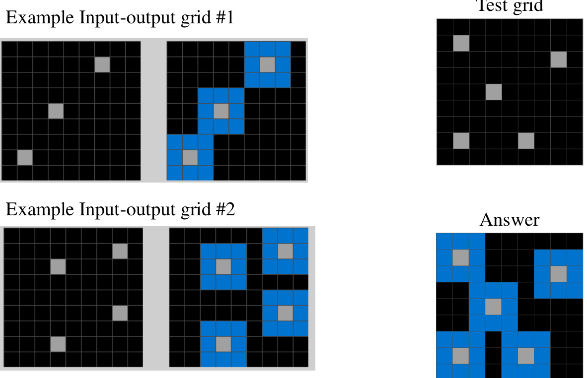
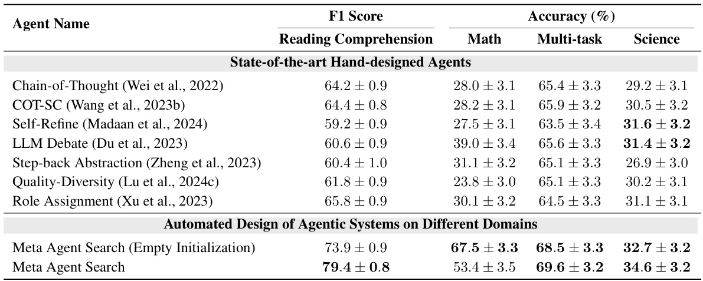
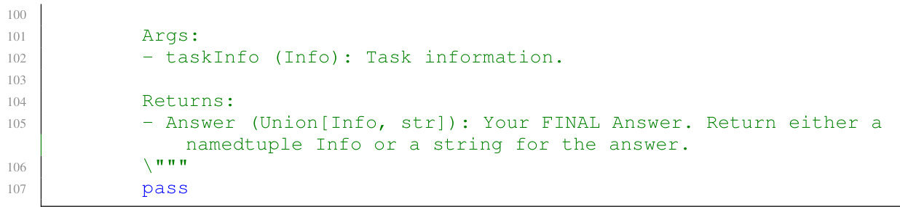

AUTOMATED DESIGN OF AGENTIC SYSTEMS
None
ABSTRACT 要旨
この論文の核心をギュッと凝縮してお伝えします！一緒に未来のエージェント設計を探求しましょう🚀
背景 現在、研究者たちは非常に強力な汎用エージェントの開発に大きな努力を注いでいます。これらのエージェントシステムでは、基盤モデル (Foundation Models, FMs) がモジュールとして活用されています。例えば、Chain-of-Thought (思考の連鎖)、Self-Reflection (自己反省)、Toolformer (ツール利用) といったアプローチがそれに当たります。
用語解説
- 汎用エージェント (General-purpose agents): 特定のタスクだけでなく、幅広い様々なタスクを実行できるAIシステムのこと。
- 基盤モデル (Foundation Models, FMs): 大量のデータで事前学習された大規模なAIモデルで、多様な下流タスクに適応可能。GPTシリーズなどが代表例。
- エージェントシステム (Agentic systems): 目標達成のために自律的に行動し、環境と対話できるシステム。FMをその構成要素（モジュール）として利用することが多い。
- Chain-of-Thought: 複雑な問題を解く際に、中間的な思考ステップを明示的に生成させる手法。
- Self-Reflection: エージェントが自身の行動や結果を評価し、改善する能力。
- Toolformer: エージェントが外部ツール（検索エンジン、計算機など）をAPI経由で自律的に利用する手法。
しかし、機械学習の歴史を振り返ると、手作業で設計された解決策 (hand-designed solutions) は、時間とともに学習によって得られる解決策 (learned solutions) に置き換えられていく傾向があります。これは重要な教訓です。
新たな研究分野の提案: ADAS
そこで本論文では、ADAS (Automated Design of Agentic Systems)、日本語で言えば「エージェントシステムの自動設計」という新しい研究分野を提唱します。
ADASの目標
ADASは、強力なエージェントシステムの設計を自動的に行うことを目指します。具体的には、以下の2点を含みます：
斬新な構成要素の発明
エージェントを構成する新しい「部品」や「アイデア」を生み出す。
新しい組み合わせの発見
既存の、あるいは新しく発明された構成要素を、これまでにない方法で組み合わせる。
ADASにおける有望なアプローチ
ADASの枠組みの中で、私たちはまだ十分に探求されていない有望なアプローチがあることを示します。それは、エージェントをコードで定義し、「メタエージェント」 がより優れた新しいエージェントをコードでプログラミング することで自動的に発見するというものです。
プログラミング言語の力
ほとんどのプログラミング言語（本研究ではPythonを使用）はチューリング完全です。これは理論上、このアプローチがあらゆる可能なエージェントシステム（新しいプロンプト、ツールの使用法、ワークフロー、およびそれらの組み合わせを含む）を学習できることを意味します。
用語解説
- メタエージェント (Meta Agent): 他のエージェントを設計したり、改善したりする役割を持つ、より高次のエージェント。
- チューリング完全 (Turing Complete): 計算理論における概念で、ある計算モデル（例えばプログラミング言語）がチューリングマシンと同等の計算能力を持つこと。つまり、原理的には計算可能なあらゆる問題を解くことができる。
提案アルゴリズム: Meta Agent Search
このアイデアを実証するために、Meta Agent Search というシンプルかつ効果的なアルゴリズムを提案します。
Meta Agent Search の仕組み
Meta Agent Searchの核心は、メタエージェント が、過去の発見物が蓄積され続けるアーカイブ を参照しながら、反復的に興味深い新しいエージェントをコードでプログラミング していくというものです。
実験と成果
実験 コーディング 、科学 、数学 を含む複数のドメインで広範な実験を行いました。
成果 1: 性能向上
Meta Agent Search は、既存の最先端の手作業設計エージェントを大幅に上回る性能を持つ、新しい設計のエージェントを段階的に発明できることを示しました。
性能大幅アップ！
成果 2: 堅牢性と汎用性
Meta Agent Search によって発明されたエージェントは、ドメインやモデルをまたいで転移した場合でも優れた性能を維持し、その堅牢性と汎用性を示しました。これは驚くべき結果です！
異なるドメイン・モデルでも強い！
結論と将来への貢献
本研究は、安全に開発を進めるという前提のもとで、人類に利益をもたらす、より強力なエージェントシステムを自動的に設計するという、エキサイティングな新しい研究方向の可能性を示しています。
自動設計で、未来のAIエージェントを創造！
この研究が、より賢く、より役立つAIエージェントシステムの開発を加速させる一助となることを願っています。
全てのコードはオープンソースとして公開されています: https://github.com/ShengranHu/ADAS
1 INTRODUCTION
このセクションでは、エージェントシステム設計の自動化という新しい研究分野「ADAS」を提案し、その中核となるアイデアと、本論文で提案する具体的なアルゴリズム「Meta Agent Search」の概要を紹介します。 手動でのエージェント設計の限界と、機械学習の歴史から得られる教訓を踏まえ、なぜ自動化が必要で有望なのかを論じます。
Foundation Models (FMs) とエージェントシステム
近年、GPT (OpenAI, 2024; 2022) や Claude (Anthropic, 2024b) のようなFoundation Models (FMs) が急速に普及しています。これらは、柔軟な推論や計画が必要なエージェントタスク（agentic tasks）において、強力な汎用エージェントとして採用されています (Wang et al., 2024)。
Foundation Models (FMs) とは、非常に大規模なデータセットで訓練され、多様なタスクに対応できる能力を持つAIモデルのことです。例えば、テキスト生成、翻訳、質問応答など、特定のタスクに特化して訓練されていなくても、ある程度の性能を発揮できます。GPTシリーズやClaudeなどが代表例です。
しかし、FMsの進歩にもかかわらず、問題を確実に解決するためには、エージェントが単一のモデルへの問い合わせ（monolithic model query）ではなく、複数のコンポーネントを持つ複合エージェントシステム（compound agentic system）である必要がある場合が多いです (Zaharia et al., 2024; Rocktäschel, 2024)。
さらに、エージェントが複雑な実世界のタスクを解決できるようにするためには、検索エンジン、コード実行、データベースクエリといった外部ツールへのアクセスが必要になることがよくあります。
効果的なエージェントシステムを構築するために、多くの有効な「ビルディングブロック」が提案されてきました。例えば以下のようなものがあります：
- Chain-of-Thought (CoT) による計画と推論 (Wei et al., 2022; Yao et al., 2023; Hu & Clune, 2024)：段階的に思考を記述することで複雑な問題解決能力を向上させる手法。
- 記憶構造 (Zhang et al., 2024c; Lewis et al., 2020)：過去の情報を保持し活用する仕組み。RAG (Retrieval Augmented Generation) もこの一種。
- ツール使用 (Schick et al., 2023; Qu et al., 2024)：外部APIや検索エンジンなどを利用する能力。
- 自己反映 (Self-Reflection) (Madaan et al., 2024; Shinn et al., 2023)：自身の出力や行動を評価し改善する能力。
これらのエージェントは様々な応用で既に大きな成功を収めていますが (Wang et al., 2024)、これらのビルディングブロックを開発し、それらを複雑なエージェントシステムに組み合わせる作業は、多くの場合、ドメイン固有の手動チューニングと、研究者・エンジニア双方からの多大な労力を必要とします。これが現状の大きな課題です 。
機械学習の歴史からの教訓：手動から自動へ
機械学習の歴史を振り返ると、手動で作成された成果物が、時間とともにより多くの計算資源とデータが得られるにつれて、学習によって得られた、より効率的なソリューションに置き換えられるというパターンが繰り返し見られます (Clune, 2019; Sutton, 2019)。
コンピュータビジョン
HOG (Dalal & Triggs, 2005) のような手動設計の特徴量が、最終的にはConvolutional Neural Networks (CNNs) (Krizhevsky et al., 2012) から学習された特徴量に置き換えられました。
AutoML & AI-GAs
AutoML (Hutter et al., 2019) や AI-Generating Algorithms (AI-GAs) (Clune, 2019) は、手動設計のAIシステムよりも学習されたAIシステムの優位性を示しています。
Neural Architecture Search (NAS): 現在最も性能の高いCNNモデルは、手動設計ではなくNAS (Elsken et al., 2019; Shen et al., 2023) によって発見されています。
LLMアライメント: DPO (Rafailov et al., 2024) のような手動設計の損失関数よりも、学習された損失関数 (Lu et al., 2024a) の方が優れています。
The AI Scientist (Lu et al., 2024b): 新しいMLアルゴリズム開発を含む自動化された研究パイプラインを実証しています。
OMNI-EPIC (Faldor et al., 2024): 無数のロボティクス学習環境を自動生成し、手動アプローチよりも効率的な環境作成と驚くべき創造性を示しています。
これらの歴史的背景を踏まえ、本論文では次のような新しい研究課題を提案します：
エージェントシステムの設計を自動化できるか？
図1: 提案アルゴリズム Meta Agent Search の概要と発見されたエージェントの例。
この図は、本論文で提案するMeta Agent Searchアルゴリズムの全体像を示しています。
- 反復的なプロセス:
- 「Meta Agent」（メタエージェント）が、新しいエージェントをプログラムします。
- 生成された「New Agent」（新しいエージェント）は、特定のタスクでパフォーマンスがテストされます。
- テスト結果と共に、新しいエージェントは「Agent Archive」（エージェントアーカイブ）に追加されます。このアーカイブには過去に発見されたエージェントが保存されています。
- メタエージェントは、このアーカイブからの情報（入力として）を参考にして、次の反復でさらに「Next interesting agent」（次の興味深いエージェント）を設計します。
- メタエージェントは、新しいエージェントが斬新でエラーがない状態になるまで改良（Refine）を繰り返します。
- エージェントのプログラム: 右上の吹き出しには、メタエージェントが新しいエージェントをどのように生成するかの例が示されています。これには、過去のエージェントからの洞察に基づいた要約と動機、エージェントの名前（例：「Divide and Conquer Agent」）、そしてPythonコード（例：`def forward(Task): ... return Answer`）が含まれます。名前はメタエージェントによって自動生成されます。
- 発見されたエージェントの例: 図の下部には、このプロセスを通じて発見された3つのエージェントの例が示されています。
- Multi-step Peer Review Agent: 複数のエキスパートが回答を生成し、レビュアーがレビューする多段階の査読プロセスを持つエージェント。
- Verified Multimodal Agent: タスクを視覚的に分析し、その視覚パラダイムを検証者（Verifier）が検証し、検証済みパラダイムを思考連鎖（CoT）と組み合わせて回答を生成するエージェント。
- Divide and Conquer Agent: タスクを部分問題に分割し、各部分問題を専門のエキスパートが解決し、それらを統合して最終的な回答を生成するエージェント。
これらのエージェント例の詳細なコードは、論文の付録Gに記載されています。
ADAS: エージェントシステム設計自動化への道
上記の研究課題を探求するために、本論文ではAutomated Design of Agentic Systems (ADAS)という、新たに形成されつつある研究分野について説明します。ADASの目的は、新しいビルディングブロックを自動的に発明し、強力なエージェントシステムを設計することです（詳細はセクション2）。
- 強力なエージェント開発における最速の道となる可能性。
- 学習されたエージェントが、手動設計のエージェントを大幅に上回る性能を示す初期証拠。
- エージェントシステムには未発見のビルディングブロックが膨大に存在すると考えられます（セクション5）。これらを全て人間が発見するには長大な時間がかかります。
- たとえ有用なビルディングブロックの多くを発見できたとしても、それらを実世界の多様な応用に向けた効果的なエージェントシステムへと組み合わせることは、組み合わせや相互作用の仕方が無数にあるため、依然として困難で時間のかかる課題です。
対照的に、ADASを用いれば、ビルディングブロックとエージェント自体を自動化された方法で学習できます。ADASは、強力なエージェント開発における人間の労力を削減するだけでなく、手動設計よりも効果的なソリューションへのより速い道となる可能性があります。
既存の試みと本論文のアプローチ
ADAS手法と見なせる既存の研究もいくつかありますが、そのほとんどはプロンプトの設計にのみ焦点を当てており (Yang et al., 2024; Fernando et al., 2024)、エージェントにおける柔軟な設計パターンを発明する能力が大幅に制限されています（セクション5）。
本論文の核心的アプローチ：コードによるエージェント設計の自動化
本論文では、エージェントシステム全体をコードで定義し、「メタエージェント」がコードで次々とより優れた新しいエージェントを自動的に発見するという、未踏でありながら有望なADASへのアプローチを示します。
このアプローチの利点は以下の通りです：
- チューリング完全性: Pythonのようなほとんどのプログラミング言語はチューリング完全 (Boyer & Moore, 1983; Ladha, 2024) です。これにより、コード空間内での探索は、理論的にはプロンプト、ツール使用、ワークフローなどを含むあらゆる可能なエージェントシステムを発見できます。
- FMsの活用: 近年のFMsはコーディング能力がますます向上しているため、FMsをメタエージェントとして使用し、ADASのためにコードで新しいエージェントを作成させることが可能です。これにより、新しいエージェントを自動化された方法でプログラムできます。
チューリング完全とは、ある計算モデル（例えばプログラミング言語）が、チューリングマシンと呼ばれる理論的な計算機と同等の計算能力を持つことを意味します。つまり、チューリングマシンで計算できる問題であれば、その計算モデルでも原理的には計算できる（プログラムを書ける）ということです。これが「あらゆる可能なエージェントシステムを発見できる」という主張の理論的根拠の一つです。
Meta Agent Searchの提案
前述のアイデアに基づき、本論文ではMeta Agent Searchを提案します。これは、コード空間での完全な設計を可能にするADASにおける最初のアルゴリズムの一つです（図1参照）。
人間の「興味深さ」の概念を活用する既存のオープンエンドアルゴリズム (Zhang et al., 2024a; Lu et al., 2024c) と同様に、メタエージェントが興味深い（例：斬新または価値のある）エージェントを探求することを奨励します。
提案手法を検証するために、Meta Agent Searchを以下のタスクで評価します：
- AIシステムの汎用知能テストを目的とした、挑戦的なARC論理パズルタスク (Chollet, 2019)。
- 読解、数学、科学の質問、マルチタスク問題解決に関する4つの一般的なベンチマーク。
- 発見されたエージェントの、未知のドメインやモデルへの転移可能性（セクション4）。
実験結果の概要
私たちの実験結果は、発見されたエージェントが、最先端の手動設計ベースラインを大幅に上回る性能を示したことを明らかにしています。
読解タスク (DROP)
F1スコアが 13.6/100 向上 (Dua et al., 2019)。
数学タスク (MGSM)
正解率が 14.4% 向上 (Shi et al., 2023)。
ドメイン転移 (数学タスク)
GSM8K (Cobbe et al., 2021) で正解率が 25.9% 向上、GSM-Hard (Gao et al., 2023) で 13.2% 向上。
提案アルゴリズムの有望な性能は、エージェントシステム設計の自動化におけるADASの可能性を示しています。さらに、実験では、発見されたエージェントが類似ドメイン間での転移だけでなく、数学から読解のような大きく異なるドメイン間での転移においても高い性能を示すことが実証されました。これは、Meta Agent Searchによって発見されたエージェントシステムの堅牢性 (robustness) と転移可能性 (transferability) を強調しています。
結論として、私たちの研究は多くの刺激的な研究方向を開き、さらなる研究を奨励します（セクション6）。
エージェントの定義とADASの構成要素
本稿執筆時点では、コミュニティはエージェントの定義や用語についてコンセンサスに至っていません。ここで、エージェントとは、タスクを解決するために、計画、ツール使用、複数回の反復的な処理ステップを実行するワークフローのモジュールとしてFoundation Models (FMs) を含むエージェントシステムを指します (Chase, 2024; Ng, 2024)。
本論文では、新たに形成されつつある研究分野 Automated Design of Agentic Systems (ADAS) を記述します。これは、AI-GAs (Clune, 2019) や AutoML (Hutter et al., 2019) のような研究分野（例えば Neural Architecture Search (Elsken et al., 2019)）と同様に、ADASを最適化プロセスとして定式化し、ADASアルゴリズムの3つの主要コンポーネントを特定します（図2参照）。
図2: Automated Design of Agentic Systems (ADAS) の3つの主要コンポーネント。
この図は、ADAS (Automated Design of Agentic Systems) の基本的な枠組みを構成する3つの重要な要素を示しています。
1. 探索空間 (Search Space)
ADASで表現可能なエージェントシステムの範囲を決定します。つまり、「どのようなエージェントが発見されうるか」の土俵です。
2. 探索アルゴリズム (Search Algorithm)
ADAS手法が探索空間をどのように探索するかを指定します。「どのようにして良いエージェントを見つけ出すか」の方法論です。
3. 評価関数 (Evaluation Function)
候補となるエージェントを、パフォーマンスなどの目標に基づいてどのように評価するかを定義します。「何をもって良いエージェントとするか」の基準です。
これら3つのコンポーネントが連携することで、ADASは自動的に優れたエージェントシステムを発見することを目指します。
Formulation
このセクションでは、Automated Design of Agentic Systems (ADAS)、つまり「エージェントシステムの自動設計」がどのように定式化されるのか、その中心的な考え方と主要な構成要素について詳しく解説します。ADASは、まるで経験豊富な研究者が新しいアイデアを試行錯誤しながら革新的なエージェントシステムを設計するように、コンピュータが自動的に最適なエージェントシステムを発見するための枠組みを指します。📌
💡 ADASの核心を一言で言うと…
ADASとは、探索アルゴリズム を駆使して、あらかじめ定義された広大な 探索空間 の中から、特定の 評価関数 の値を最も良くする（最適化する）エージェントシステムを探し出す知的探求のプロセスです。
上図 (論文中 Figure 2): ADASを構成する3つの鍵となる要素を示しています。探索空間、探索アルゴリズム、そして評価関数です。これらが一体となってADASのフレームワークを形成します。
それでは、これらの構成要素それぞれについて、もう少し詳しく見ていきましょう。🚀
探索空間 (Search Space)
用語解説: 探索空間
探索空間とは、ADASが「どのようなエージェントシステムを設計対象とするか」の範囲を定めるものです。つまり、ADASが表現し、発見することができる可能性のある全てのエージェントシステムの集合を指します。この空間の設計次第で、生まれてくるエージェントの種類や能力が大きく変わります。
例を挙げてみましょう：
- 📄 PromptBreeder (Fernando et al., 2024) の場合:
この研究では、エージェントのテキストプロンプトのみを変更対象としています。エージェントのワークフロー（処理の流れ）のような他の構成要素は固定されたままです。そのため、この探索空間では、あらかじめ定義されたワークフローとは異なる構造を持つエージェントは表現できず、発見の対象外となります。
🗣️ 「言葉遣いは変えられるけど、行動パターンは変えられないよ！」というイメージです。
- 🔗 その他の既存研究の例:
- グラフ構造 (Zhuge et al., 2024): エージェントの構成要素や処理の流れをノードとエッジで表現し、その繋がり方を探します。
- フィードフォワードネットワーク (Liu et al., 2023): ニューラルネットワークのように、情報が一方向に流れる構造でエージェントを表現します。
🕸️ 「部品のつなぎ方を変えてみよう！」というアプローチですね。
探索アルゴリズム (Search Algorithm)
用語解説: 探索アルゴリズム
探索アルゴリズムとは、ADASが定義された探索空間を「どのように効率よく探索するか」の方法を定めるものです。膨大な候補の中から有望なエージェントシステムを見つけ出すための戦略や手順と言えます。
探索空間は非常に広大であったり、時には無限に広がっていたりするため、賢い探索戦略が不可欠です。ここで重要になるのが、探索と活用のトレードオフ (Sutton & Barto, 2018) です。
探索と活用のトレードオフとは？
これは、未知の領域を探索して新しい発見を目指す「探索 (Exploration)」と、既知の良い解をさらに改良して確実な成果を得る「活用 (Exploitation)」のバランスを取る問題です。探索ばかりしていると良い解が見つからないかもしれず、活用ばかりしていると局所的な最適解に囚われてしまう可能性があります。
参考文献: Sutton & Barto, Reinforcement Learning: An Introduction (2018)
理想的な探索アルゴリズムは、以下の両方を満たすものです：
- 迅速性: 高性能なエージェントシステムを素早く発見できる。
- 網羅性: 局所最適解（一部分だけが良い状態）に陥らず、大域的な最適解（全体として最も良い状態）を見つけ出す可能性がある。
既存のアプローチとしては、以下のようなものがあります：
- 🤖 強化学習 (Reinforcement Learning) (Zhuge et al., 2024): エージェントの設計を逐次的な意思決定問題と捉え、試行錯誤を通じて最適な設計を学習します。
- 🧠 Foundation Model (FM) による反復的な解生成 (Fernando et al., 2024): 大規模言語モデルなどのFMに新しいエージェントのアイデアを繰り返し生成させ、改良していきます。
評価関数 (Evaluation Function)
用語解説: 評価関数
評価関数とは、ADASアルゴリズムが「何を基準にエージェントシステムの良し悪しを判断するか」を定義するものです。設計された候補エージェントが、設定された目標に対してどれだけ優れているかを数値化する尺度となります。
ADASアルゴリズムの適用分野や目的に応じて、様々な評価軸が考えられます。例えば：
評価関数は、これらの目的に対して候補エージェントを具体的にどのように評価するかを定めます。例えば、エージェントが未知のデータに対してどれだけうまく機能するか（汎化性能）を評価したい場合、一般的な方法として以下のようなものがあります：
📊 具体例: タスクの検証データにおける正解率
特定のタスク（例: 質問応答、文章生成など）において、訓練データとは別の検証データ (validation data) を用意し、そのデータに対するエージェントの正解率 (accuracy rate) を計算します。この方法は、既存の研究 (Zhuge et al., 2024; Fernando et al., 2024) でも広く採用されています。
🚀 未踏の有望なアプローチ: コードによるエージェント設計
これまで見てきたように、探索空間の設計には様々な可能性がありますが（詳細はセクション5で触れます）、この論文では特に未だ十分に探求されていない有望なアプローチに焦点を当てています。それは、エージェントシステム全体をプログラムコードとして定義し、新しいエージェントを「メタエージェント」と呼ばれる別のエージェントがプログラミングすることで自動的に発見していくという革新的な方法です。
🤖 メタエージェントとは？
エージェントを設計・プログラミングする役割を持つ、いわば「エージェントを作るエージェント」です。このメタエージェントが試行錯誤しながら、より優れたエージェントのコードを生成していきます。
この「コード空間での探索」アプローチには、多くの魅力的な利点があります：
理論的な網羅性
Pythonのような多くのプログラミング言語はチューリング完全であるため、コード空間での探索は理論上、考えうるあらゆる種類の構成要素（プロンプト、ツールの使い方、処理のワークフローなど）や、それらを任意の方法で組み合わせたエージェントシステムを発見する能力を持ちます。
解釈性の向上
プログラムコードは人間にとって可読性が高い場合が多いため、発見されたエージェントの設計パターンが理解しやすくなります。これにより、デバッグが容易になり、AIの安全性を高めることにも繋がります。
既存資産の活用
ネットワーク構造 (Liu et al., 2023) やグラフ構造 (Zhuge et al., 2024) を用いる探索空間と比較して、コード空間では人間がこれまでに築き上げてきた努力の成果を容易に活用できます。例えば、LangChain (LangChainAI, 2022) のようなオープンソースのエージェントフレームワーク上で探索を行ったり、既存の構成要素（例: RAG、検索エンジンツール）を組み込んだりすることが可能です。
FMの専門知識活用
近年のFoundation Model (FM) はコーディング能力に長けています。コード探索空間を利用することで、探索プロセスにおいてこれらのFMが持つ既存の専門知識（コーディングスキル）を最大限に活用できます。対照的に、グラフのようなカスタム探索空間では、FMがそのような事前知識を持っていないため、探索アルゴリズムの効率が大幅に低下する可能性があります。
この論文の重要な主張
以上の理由から、本論文ではプログラミング言語を探索空間として使用するアプローチは、ADASの分野において今後さらに深く研究されるべき非常に有望な方向性であると強く主張します。
3 OUR ALGORITHM: META AGENT SEARCH
図1: Meta Agent Searchの概要と発見されたエージェントの例。メタエージェントが反復的に新しいエージェントをプログラムし、タスクで性能をテストし、発見されたエージェントのアーカイブに追加し、このアーカイブを後続の反復でメタエージェントに情報提供するために使用します。下部には発見されたエージェントの例（Multi-step Peer Review Agent, Verified Multimodal Agent, Divide and Conquer Agent）が示されています。
このセクションでは、Meta Agent Searchという、シンプルでありながら効果的な新しいアルゴリズムを提案します。このアルゴリズムの目的は、エージェントをコードで定義し、そのコードを探索空間として新しいエージェントを発見するというアプローチを実証することです。
Meta Agent Searchの核心的なアイデアは、Foundation Models (FMs)、例えばGPTのような大規模言語モデルを、「メタエージェント」として活用する点にあります。このメタエージェントは、過去に発見・評価されたエージェントの情報が蓄積された「エージェントアーカイブ」を参照しながら、反復的に興味深く新しいエージェントをプログラムによって生成します。
メタエージェントの能力とフレームワーク
理論上は、メタエージェントはどんな構成要素やエージェントシステムでもゼロからプログラムすることが可能です。しかし、現実的には、基本的な機能（例えば、FMに問い合わせるためのAPIや既存のツールなど）をメタエージェントに提供しないと、探索が非常に非効率になってしまいます。
そこで、この論文では、メタエージェントのために100行未満の非常にシンプルなフレームワークを定義しています。このフレームワークは、FMへの問い合わせやプロンプトの整形といった、エージェント設計に不可欠な基本的な関数を提供します。
「forward」関数のプログラミング
このフレームワークのおかげで、メタエージェントは新しいエージェントシステムを定義するために、主に「forward」関数をプログラムすることに集中できます。これは、FunSearch (Romera-Paredes et al., 2024)という研究で見られるアプローチと似ています。
「forward」関数とは？
この関数は、エージェントシステムの中核となるロジックを実装します。
- 入力 タスクに関する情報（例：問題文、データ）
- 出力 タスクに対するエージェントの応答（例：解答、行動）
詳細情報
このフレームワークの具体的なコードや、このフレームワークを用いて定義されたエージェントの例については、論文のAppendix Cで詳しく解説されています。
Meta Agent Searchのアルゴリズムプロセス 🔄
上記図1で示されているように、Meta Agent Searchのアルゴリズムは、メタエージェントが反復的に新しいエージェントをコードでプログラムする、という流れで進行します。具体的なステップは以下の通りです。
アーカイブの初期化 (Initialization) 🗂️
まず、エージェントアーカイブを準備します。このステップは任意ですが、多くの場合、既存の優れたエージェント（ベースラインエージェント）で初期化します。例えば、以下のようなものが考えられます。
- 📄 Chain-of-Thought (CoT) (Wei et al., 2022): 思考の連鎖を促すプロンプティング手法。
- 🤔 Self-Refine (Madaan et al., 2024; Shinn et al., 2023): 自己反省を通じて改善を行う手法。
これらのベースラインエージェントをアーカイブに入れておくことで、メタエージェントは最初からある程度の知見を利用できます。
新しいエージェントの設計 (Design) 💡
次に、メタエージェントはアーカイブ内の情報を基にして、新しいエージェントを設計します。このプロセスは以下の2段階で行われます。
- 高レベルな記述の生成: まず、新しいエージェントシステムのアイデアに関する概要やコンセプトを文章で記述します。
- コードによる実装: 次に、そのアイデアを具体的なPythonコード（特に「forward」関数）として実装します。
設計されたエージェントは、その新規性を保証するために、メタエージェント自身による2回の自己反映 (Self-Reflection)ステップを経ます。これは、既存のエージェントと似すぎていないか、アイデアが本当に新しいかをチェックするプロセスです。(Madaan et al., 2024; Shinn et al., 2023を参照)
エージェントの評価 (Evaluation) 📊
生成された新しいエージェントは、ターゲットとなるドメインの検証データ (validation data) を用いてその性能が評価されます。
エラー発生時の対応
評価中に何らかのエラー（例：コードのバグ、期待通りの動作をしないなど）が発生した場合、メタエージェントは自己反映ステップを実行して設計を修正します。この修正と再評価のプロセスは、エラーが解消されるか、あるいは最大5回繰り返されます。
アーカイブへの追加と継続 (Update & Iterate) 🔁
最後に、評価されたエージェントは、その評価メトリクス（例：正解率、F1スコアなど）と共にアーカイブに追加されます。そして、この更新されたアーカイブを使用して、ステップ(2)からプロセスが繰り返されます。この反復は、事前に定められた最大反復回数に達するまで続けられます。
擬似コード
このMeta Agent Searchアルゴリズムのより形式的な記述である擬似コードは、論文のAppendix Hに記載されています。
探索の指針: 「興味深さ」とパフォーマンス 🌟
Meta Agent Searchでは、メタエージェントがどのようなエージェントを発見しようとするかが重要です。このアルゴリズムは、既存のオープンエンデッドネス (open-endedness) アルゴリズム (Zhang et al., 2024a; Lu et al., 2024c など) の考え方を参考にしています。これらのアルゴリズムは、人間が「面白い」と感じるような新しいものを探索することを目指します。
「興味深く新しい」エージェントの探索
Meta Agent Searchでは、メタエージェントに対して、過去の発見（アーカイブに保存されているエージェント）に基づいて、「興味深く新しい（interestingly new）」エージェントを探索するように促します。「興味深く新しい」とは、例えば以下のような性質を持つエージェントを指します。
- ✨ 斬新 (Novel): これまでにない新しいアプローチや構造を持つ。
- 🏆 価値がある (Worthwhile): 特定のタスクにおいて高い性能を発揮する可能性を秘めている。
具体的には、この研究では、エージェントのパフォーマンス（例：タスクの成功率やF1スコアなど）を評価指標とし、メタエージェントがこのパフォーマンスを最大化することを目指します。つまり、より性能の高い、かつ新しいタイプのエージェントを見つけ出すことが目標となります。
プロンプトと詳細
メタエージェントをこのように導くための具体的なプロンプトの内容や、その他の詳細については、論文のAppendix Bで説明されています。
4 EXPERIMENTS
このセクションでは、提案手法であるMeta Agent Searchの有効性を検証するために行われた一連の実験について詳しく解説します。
主な目的と論旨
実験の主な目的は、以下の3つの側面からMeta Agent Searchの能力を実証することです：
- ARCチャレンジでの新規エージェントシステムの発見能力（セクション4.1）
- 読解、数学、科学、マルチタスク問題解決といった推論・問題解決ドメインでの性能（セクション4.2）
- 発見されたエージェントの汎化能力と転移可能性（セクション4.3）
論文では、これらの実験を通じて、Meta Agent Searchによって発見されたエージェントが、既存の最先端の手作業で設計されたエージェントを大幅に上回り、異なるドメインやモデル間でも優れた性能を維持することを示しています。実験全体を通して、アルゴリズムの実装はタスク間で一貫しており、プロンプトに含まれるタスク固有の記述テキストのみが変更点となっています（詳細は付録B参照）。
4.1 CASE STUDY: ARC CHALLENGE
このサブセクションでは、Meta Agent Searchがどのようにして新しいエージェントシステムを発見し、既存の最先端の手作業設計エージェントを上回る性能を達成するかを、Abstraction and Reasoning Corpus (ARC) チャレンジという具体的なケーススタディを通して示します。
用語解説: ARCチャレンジ
ARCチャレンジ (Abstraction and Reasoning Corpus challenge) とは、AIシステムが新しいスキルを獲得する能力を通じて、その一般知能を評価することを目的とした課題です（Chollet, 2019）。ARCの各問題は以下の要素で構成されます：
- 複数の視覚的な入力-出力グリッドパターンの例が提示される。
- AIシステムは、これらの例からグリッドパターンの変換ルールを学習する。
- 学習したルールに基づき、テスト用の入力グリッドパターンに対応する出力グリッドパターンを予測する。
ARCの各問題はそれぞれ独自の変換ルールを持つため、AIシステムには、数少ない例から効率的に学習する能力（few-shot learning）や、数勘定、幾何学、トポロジーといった能力が求められます。
図3の概要
この図は、Meta Agent SearchのARCチャレンジにおける結果を示しています。
- (a) Meta Agent Searchの性能推移: イテレーション（反復）が進むにつれて、Meta Agent Searchが以前の発見のアーカイブを基に、より高性能なエージェントを段階的に発見していく様子を示しています。性能は、評価用テストセットでの中央値精度と95%ブートストラップ信頼区間で報告されており、各エージェントは5回評価されています。
- (b) 発見された最良エージェントの可視化: Meta Agent SearchによってARCチャレンジで発見された最良のエージェントの構造を図示しています。このエージェントの詳細な実装は付録Dに記載されています。
Setup (実験設定)
ARCチャレンジにおける実験設定は以下の通りです：
- 回答形式: 一般的な慣行（Greenblatt, 2024）に従い、エージェントは直接回答するのではなく、変換ルールをコードで記述するよう求められます。
- ツール関数: 生成された変換コードを評価するためのツール関数がフレームワーク（セクション3で説明）内で提供されます。
- データサンプリング: ARCが現在のAIシステムにとって非常に困難な課題であるため、データは「公開訓練セット（簡単）」の中から、グリッド次元が5x5以下の質問からサンプリングされました。
- データセット分割: 探索用（学習用）の検証セットとして20問、テスト用のテストセットとして60問がサンプリングされました。
- 精度計算: エージェントの検証精度とテスト精度は、Foundation Models (FMs) の確率的なサンプリングによる分散を減らすため、検証セットとテストセットでそれぞれ5回評価して計算されます。発見された全てのエージェントは、評価用テストセットで評価され、そのテスト精度が図3に報告されています。
- Meta Agent Search設定: Meta Agent Searchは25イテレーション実行されます。メタエージェント（新しいエージェントを設計するエージェント）にはGPT-4 (OpenAI, 2024) を使用します。
- 評価モデル: 発見されたエージェントおよびベースラインエージェントの評価には、計算コストを削減するためにGPT-3.5 (OpenAI, 2022) を使用します。
より詳細なアルゴリズムの詳細やARCの質問例は、付録Dを参照してください。
Baselines (比較対象)
Meta Agent Searchの性能を評価するため、以下の5つの最先端の手作業設計エージェントと比較しました。これらのベースラインは、エージェント研究文献で広く採用されている主要なデザインパターンやアプローチを代表するものです。
1. Chain-of-Thought (COT)
(Wei et al., 2022)
複雑な問題解決を中間ステップを通じて改善するために、エージェントに回答前に推論過程を出力させる手法です。
思考 → 推論出力 → 回答
2. Self-Consistency with COT (COT-SC)
(Wang et al., 2023b)
COTからの複数の並列な回答をアンサンブルし、より正確な回答を生成する手法です。
思考 → 複数推論 → 多数決/アンサンブル → 回答
3. Self-Refine
(Madaan et al., 2024; Shinn et al., 2023)
以前の試みでの誤りを修正するために、反復的な自己反省を可能にする手法です。
試行 → 回答 → 自己評価/フィードバック → 修正 (繰り返し) → 最終回答
4. LLM-Debate
(Du et al., 2023)
異なるLLM同士が互いに議論し、多様な視点を活用してより良い回答を見つけることを可能にする手法です。
複数LLM → 討論 → 統合/最終回答
5. Quality-Diversity
(Lu et al., 2024c の簡略版)
多様な回答を生成しアンサンブルすることで、潜在的な解決策をより良く探索する、Intelligent Go-Exploreの簡略版です。
多様な探索 → 質の高い多様な解候補 → アンサンブル/選択 → 回答
「最先端」の定義
ここで「最先端 (state-of-the-art)」とは、これらのベースライン設計が、この分野における重要な進歩と実践を例証していることを指します。
📝 初期シード: これらのベースラインはすべて、Meta Agent Searchのアーカイブの初期シードとしても使用されました（初期化なしの結果は付録Iに記載）。
⚖️ 公平な比較: 公平な比較を保証するため、すべてのベースライン実装はメタエージェントと同じフレームワークを使用して開発され、一貫性のある公平な評価環境が提供されました。
ベースラインの詳細は付録Fを参照してください。
Results and Analysis (結果と分析)
図3(a)が示すように、Meta Agent Searchは、最先端の手作業設計ベースラインよりも優れた性能を持つエージェントを効果的かつ段階的に発見しました。重要なブレークスルーは図中のテキストボックスで強調表示されています。
🔍 過去の発見に基づく革新:
オープンエンド性やAI-GAに関する先行研究（Zhang et al., 2024a; Faldor et al., 2024; Wang et al., 2019; 2020; Lehman & Stanley, 2011）で重要であるように、Meta Agent Searchは、過去の発見（踏み石：stepping stones）からなる成長し続けるアーカイブに基づいて革新を行います。
イテレーション 3
重要なデザインパターンが出現：複数のCOTを使用して可能性のある回答を生成し、それらを改良し、最終的に最良の回答をアンサンブルするというものです。これは、その後の設計が利用する傾向にある重要な踏み石となりました。
🎨 最良発見エージェント (図3b):
図3(b)には、発見された最良のエージェントが示されており、そこでは複雑なフィードバック機構が採用され、回答をより効果的に改良しています。探索の進行を注意深く観察すると、この洗練されたフィードバック機構が突然現れたわけではないことがわかります。代わりに、以下のアイデアが段階的に出現しました：
- イテレーション 5: 多様なフィードバックの取り込み
- イテレーション 11: 効率性や単純性といった特定の特性（専門家経由）の評価
- イテレーション 12: 人間らしいフィードバックのシミュレーション
最終的な機構は、これら3つの踏み石に基づく革新です。これは、これらの踏み石が出現してすぐに高い性能を達成しなかったとしても、後の発見が異なる踏み石を組み合わせることによってこれらの革新から利益を得たことを示しており、LLMを介した進化におけるクロスオーバー（Meyerson et al., 2023）に似ています。
まとめ
全体として、これらの結果は、ADAS（自動エージェントシステム設計）の可能性と、Meta Agent Searchが踏み石の革新と組み合わせを通じて、最先端の手作業設計ベースラインを上回るエージェントを段階的に発見し、新しいデザインパターンを発明する有効性を示しています。
4.2 REASONING AND PROBLEM-SOLVING DOMAINS
このサブセクションでは、Meta Agent Searchが数学、読解、推論といった様々なドメインでエージェントの能力を向上させる可能性について調査します。
Setup (実験設定)
Meta Agent Searchは、以下の4つの人気のあるベンチマークでテストされました。
DROP (Dua et al., 2019)
読解能力の評価
MGSM (Shi et al., 2023)
多言語環境下での数学能力の評価
MMLU (Hendrycks et al., 2021)
マルチタスク問題解決能力の評価
GPQA (Rein et al., 2023)
科学分野の難問（大学院レベル）解決能力の評価
- 探索: 探索は各ドメイン内で独立して行われます。
- Meta Agent Search設定: Meta Agent Searchは30イテレーション実行されます。
- 使用モデル: メタエージェントにはGPT-4 (OpenAI, 2024) を使用し、発見されたエージェントとベースラインの評価にはGPT-3.5 (OpenAI, 2022) を使用します。
データセットと実験設定の詳細は付録Eを参照してください。
Baselines (比較対象)
セクション4.1で導入された全てのベースラインを採用します。加えて、これらのドメインは強力な推論スキルを必要とするため、エージェントの推論能力強化に特化した2つの追加ベースラインを含めて、より徹底的な比較を行います。
1. Step-back Abstraction
(Zheng et al., 2023)
エージェントに、より良い推論のためにタスク解決に関わる原則をまず考察するよう指示する手法。
2. Role Assignment
(Xu et al., 2023)
より良い回答を得るために、FMに異なる役割を割り当てる手法。
さらに、我々のアプローチを最先端のプロンプト最適化ベースラインであるOPRO (Yang et al., 2024) と比較し、プロンプトだけに焦点を当てるのではなく、エージェントの全ての可能なコンポーネントを学習する利点を強調します。
ベースラインの詳細は付録Fを参照してください。
表1の解説: Meta Agent Searchと最先端の手作業設計エージェントの性能比較
この表は、複数のドメインにおけるMeta Agent Searchと最先端の手作業設計エージェントの性能を比較しています。Meta Agent Searchは、全てのドメインでベースラインよりも優れたエージェントを発見しています。報告されているのは、評価用テストセットでのテスト精度と95%ブートストラップ信頼区間です。探索は各ドメインで独立して行われました。各ドメインで最高の性能を示したエントリ、およびその中央値が最高性能の95%信頼区間内にある全てのエントリが太字で示されています。
Results and Analysis (結果と分析)
複数のドメインにわたる結果（表1）は、Meta Agent Searchが最先端の手作業設計エージェントを上回るエージェントを発見できることを示しています。
🚀 注目すべき改善点:
読解 (Reading Comprehension) および 数学 (Math) ドメインにおいて、学習されたエージェントと手作業設計エージェントの間に顕著な差が見られました。具体的には、F1スコアがそれぞれ+13.6/100、正解率が+14.4%向上しました。
🤔 差が小さいドメインについての考察:
Meta Agent Searchはマルチタスク (Multi-task) および 科学 (Science) ドメインでもベースラインを上回りましたが、その差は比較的小さかったです。仮説として、これらのドメインの困難な問題に対しては、FM内の知識が問題を解決するのに十分ではない可能性が考えられます。これにより、エージェントシステムの最適化による改善が制限されます。この問題は、FMが改善するにつれて減少すると考えられます。
対照的に、読解および数学ドメインでは、FMは問題を解決するための十分な知識を持っており、エラーは主にハルシネーション（幻覚）や計算ミスである可能性があり、これらはMeta Agent Searchによって発見されたような、よく設計されたエージェントシステムによって軽減できます。
🆚 プロンプト最適化手法との比較:
プロンプト最適化手法と比較すると、提案されたMeta Agent Searchは全てのドメインで一貫してそれらを上回る結果を示しました。この比較は、エージェントをコードで定義し、全てのコンポーネントの学習を可能にすることが大きな利点をもたらすという我々の主張をさらに強化します。
まとめ
全体として、様々なドメインにわたる結果は、特定のドメインに合わせたエージェントを探索する上でのMeta Agent Searchの有効性を示しています。これは、多様なアプリケーション向けにエージェントを作成し続ける中で、人間の労力を節約し、より優れたタスク特化型エージェントを開発するためにますます有用になる可能性があります (Wang et al., 2024)。
4.3 GENERALIZATION AND TRANSFERABILITY
これまでのセクションでは、Meta Agent Searchが個々のタスクに対して効果的なエージェントを見つけられることを示しました。このセクションでは、発見されたエージェントの転移可能性 (transferability) と汎化能力 (generalizability) をさらに実証します。
ドメイン間転移
発明されたビルディングブロックとデザインパターンの汎化能力を示すために、MGSM (数学) ドメインで発見されたエージェントを、数学ドメインと非数学ドメインの両方に転移させ、異なるタスクへの汎化能力をテストします。
MGSMから上位3つのエージェントを評価し、以下のドメインに転移させました：
数学ドメイン (Math Domains)
- GSM8K (Cobbe et al., 2021)
- GSM-Hard (Gao et al., 2023)
非数学ドメイン (Non-Math Domains)
- MMLU (Multi-task)
- DROP (Reading Comprehension)
(詳細はセクション4.2参照)
表2の解説: MGSM (数学) からのトップエージェントを転移させた場合の、評価用数学および非数学ドメインでの性能
この表は、MGSM (数学) ドメインで発見された上位エージェントを、評価用の数学ドメイン (GSM8K, GSM-Hard) および非数学ドメイン (MMLU: マルチタスク, DROP: 読解) に転移させた際の性能を示しています。Meta Agent Searchによって発見されたエージェントは、全てのドメインで一貫してベースラインを上回っています。報告されているのは、テスト精度と95%ブートストラップ信頼区間です。上位エージェントの名前はMeta Agent Searchによって生成されました。
表2が示すように、Meta Agent Searchは一貫してベースラインを上回りました。特に注目すべきは、数学ドメイン内での転移において、ベースラインと比較してGSM8Kで+25.9%、GSM-Hardで+13.2%の精度向上を達成したことです。
さらに驚くべきことに、数学ドメインで発見されたエージェントが非数学ドメインにも転移可能であることがわかりました。これらのエージェントの性能は、ターゲットドメイン専用に設計されたエージェントには完全には及ばないものの、それでもなお最先端の手作業設計ベースラインを上回りました。
ドメイン間転移に関するより多くの結果は付録Aに示されています。
Foundation Model (FM) 間転移
ARCにおいて、異なるFM間でエージェントを転移させた場合にも同様の優位性が観察されました。GPT-3.5で評価されたARCにおけるテスト精度上位3つのエージェントをテストし、それらを以下のFMに転移させました：
- Claude-Haiku (Anthropic, 2024a)
- GPT-4 (OpenAI, 2024)
- Claude-Sonnet (Anthropic, 2024b)
表3（論文原文参照、ここでは省略）が示すように、探索されたエージェントは手作業設計エージェントを一貫して上回り、その差は顕著でした。特筆すべきは、Anthropic社の最も強力なモデルであるClaude-Sonnetが、テストされた全モデルの中で最高の性能を示し、我々の最良エージェントがARCでほぼ50%の精度を達成することを可能にした点です。
まとめ
これらのドメイン間およびモデル間の転移に関する結果は、Meta Agent Searchが汎化可能なデザインパターンとエージェントシステムを発見する能力を持つことを強調しています。
5 RELATED WORK
このセクションでは、本論文で提案する「エージェントシステムの自動設計（ADAS）」という新しい研究分野を、既存の関連研究との文脈で位置づけます。具体的には、ADASが「エージェントシステム」そのものの研究動向、AIアルゴリズムを自動生成する「AIGA」や「AutoML」といった分野、そして「ADASへの既存の試み」とどのように関連し、またどのような新しい貢献を目指しているのかを解説します。
エージェントシステム (Agentic Systems)
📝 エージェントシステムとは？
この論文におけるエージェントシステム (Agentic Systems)とは、基盤モデル (Foundation Models, FMs) を中心的な構成要素（モジュール）として組み込み、計画立案、外部ツールの利用、そして複数の処理ステップを反復的に実行することで、複雑なタスクを解決しようとするシステムのことです。これらは自律的に振る舞い、目標を達成しようとする点で「エージェント的」と言えます。
近年、研究者たちは、さまざまな応用分野で役立つエージェントシステムを構築するために、多種多様な構成要素 (building blocks)と設計パターン (design patterns)を精力的に開発しています。これらの構成要素は、 마치 레고 블록처럼, 서로 결합하여より洗練された、あるいは特定のタスクに特化したエージェントシステムを生み出すための基盤となります。
エージェントシステムの重要な構成要素
以下に、現在活発に研究・開発されている主要な構成要素をいくつか紹介します。
プロンプティング技術
FMへの指示（プロンプト）を工夫することで、より良い応答や特定の振る舞いを引き出す技術群。(例: Chen et al., 2023a; Schulhoff et al., 2024)
思考の連鎖 (Chain-of-Thought) ベースの計画・推論
複雑な問題に対して、中間的な思考ステップを明示的に生成させることで、最終的な結論の質を高める手法。(例: Wei et al., 2022; Yao et al., 2023; Hu & Clune, 2024)
自己反省 (Reflection)
エージェントが自身の生成した結果や行動を評価し、誤りを修正したり改善したりする能力。(例: Madaan et al., 2024; Shinn et al., 2023)
具現化されたエージェントのための新スキル開発（コード）
物理世界やシミュレーション環境で活動するエージェント（具現化されたエージェント）が、コードを生成・実行することで新しいスキルを獲得する仕組み。(例: Wang et al., 2023a; Vemprala et al., 2023)
外部メモリとRAG
FMが内蔵する知識の限界を補うため、外部データベースや文書群を参照し、関連情報を取得して応答生成に活用する技術（Retrieval-Augmented Generation, RAG）。(例: Zhang et al., 2024c; Lewis et al., 2020)
ツール利用 (Tool Use)
計算機、検索エンジン、APIなど、外部のツールをFMが自律的に呼び出して利用する能力。(例: Qu et al., 2024; Schick et al., 2023; Nakano et al., 2021)
役割割り当てと協調
エージェントシステム内で複数のFMモジュールに異なる役割（例：専門家、評価者）を与え、それらが協調してタスクを遂行する仕組み。(例: Hong et al., 2023; Wu et al., 2023; Qian et al., 2023; Xu et al., 2023; Qian et al., 2024)
自己指示による行動生成
エージェントが自身に対して次の行動を指示し、自律的にタスクを進めていく能力。(例: Richards, 2023)
発見の限界とADASの役割
研究コミュニティは、これらの重要な技術の開発に多大な努力を注いできました。しかし、これらはこれまでに発見された構成要素のほんの一部に過ぎず、まだ見ぬ多くの有用な構成要素が未発見のまま残されていると考えられます。
そこで本論文では、ADAS (Automated Design of Agentic Systems; エージェントシステムの自動設計) という新たな研究領域を提唱します。ADASの目的は、このような新しい構成要素を自動的に発明し、それらを組み合わせて強力なエージェントシステムを自動的に設計することです。これにより、人間による手作業の設計プロセスを大幅に効率化し、これまで到達できなかった高性能なエージェントシステムの実現を目指します。
表3の解説：ARCにおけるエージェントの転移性能
この表3は、ARC (Abstraction and Reasoning Corpus) チャレンジという、AIの一般知能を測るための難解なパズルタスクにおいて、本論文で提案する Meta Agent Search によってGPT-3.5上で発見されたトップクラスのエージェントを、他の基盤モデル（FM）に転移させた場合の性能を示しています。
注目ポイント：
- 一貫した優位性: Meta Agent Searchによって発見されたエージェント（"AetherMind", "LogicWeaver"†, "NexusPrime"など、名前もMeta Agent Searchが生成）は、様々なFM（GPT-3.5, Claude-Haiku, GPT-4, Claude-Sonnet）上で、手作業で設計されたベースラインエージェントよりも一貫して優れた性能を示しています。
- 性能指標: 報告されているのは、テスト精度 (test accuracy) と95%ブートストラップ信頼区間 (95% bootstrap confidence interval) です。信頼区間は、結果の統計的な確からしさを示します。
- モデル間の転移: あるFMで発見されたエージェント設計が、別の種類のFMでも有効であることを示唆しており、発見された設計パターンの汎用性と堅牢性を示しています。
- †印は、元々生成された名前が紛らわしかったため、研究者が手動で変更したことを示します。
この表は、セクション4.3で述べられている「発見されたエージェントの汎用性と転移可能性」を裏付ける重要な実験結果であり、ADASアプローチの有効性を示唆しています。
AI生成アルゴリズム (AIGA) と AutoML
AI生成アルゴリズム (AI-Generating Algorithms, AIGAs) (Clune, 2019) や AutoML (Automated Machine Learning) (Hutter et al., 2019) の研究分野は、AIシステムにおける手作業で設計されたコンポーネントを、学習によって自動的に置き換えることを目指しています。これは、より効率的で高性能なAIシステムを、人間の労力を介さずに生み出すためのアプローチです。
AIGA/AutoMLの3つの主要な柱 (Clune, 2019)
1. アーキテクチャのメタ学習 (Meta-learning architectures)
AIシステムの構造（アーキテクチャ）自体を学習によって自動設計する研究です。
具体例: ニューラルアーキテクチャ探索 (Neural Architecture Search, NAS) (Elsken et al., 2019; Lu et al., 2019; Hu et al., 2021) は、ニューラルネットワークの層の数、種類、接続方法などを自動的に最適化し、特定のタスクで高性能なネットワーク構造を発見します。
📌 NASのイメージ:
人間:「どんなネットワーク構造が良いかな…？」 🤔
NAS:「任せて！色々な構造を試して最適なものを見つけるよ！」 🛠️✨
（例: CNNの畳み込み層の数やカーネルサイズを自動調整）
2. 学習アルゴリズムのメタ学習 (Meta-learning learning algorithms)
「学習方法を学習する (learning to learn)」アプローチで、より効率的に、あるいはより汎用的に学習できるアルゴリズム自体を発見しようとします。
具体例: MAML (Model-Agnostic Meta-Learning) (Finn et al., 2017) や Meta-RL (メタ強化学習) (Wang et al., 2016; Duan et al., 2017; Norman & Clune, 2023; Zintgraf et al., 2021a;b) などは、少量のデータから新しいタスクへ素早く適応する能力や、探索効率の高い強化学習エージェントの学習を目指します。
📌 Meta-RLのイメージ:
人間:「新しいゲームを早く攻略させたいな…」 🎮
Meta-RL:「過去の様々なゲームでの学習経験を活かして、新しいゲームも素早く学習するよ！」 🚀
3. 学習環境と訓練データの生成 (Generating learning environments and training data)
AIが学習するための環境やデータを自動的に生成する研究です。これにより、多様で質の高い学習機会を提供し、AIの汎化能力や頑健性を高めます。
具体例: POET (Paired Open-Ended Trailblazer) (Wang et al., 2019; Dharna et al., 2022; Wang et al., 2020) や OMNI-EPIC (Faldor et al., 2024) は、AIエージェントの能力向上に合わせて、カリキュラムのように難易度が調整されたり、新しい特徴を持つ学習環境を自動的に生成し続けます。
📌 POETのイメージ:
AIエージェント:「この環境は簡単すぎるな…」 🥱
POET:「じゃあ、もっと難しいけど面白い新しい環境を作ってあげるよ！」 ✨🏞️
ADASとAIGA/AutoMLの柱との関連
本論文で提案するADASは、これらの柱のうち最初の2つに位置づけられます。
- 1. エージェントアーキテクチャのメタ学習: ADASは、エージェントシステム全体の構造（ワークフローやコンポーネントの組み合わせ）を自動的に設計します。これは、NASがニューラルネットワークのアーキテクチャを探索するのと同様のアプローチです。
- 2. 文脈内学習 (In-context learning) を活用した「学習方法の学習」: ADASは、特に本論文のARCチャレンジ（セクション4.1）で見られるように、FMの文脈内学習能力を利用して、タスクの例から効果的な問題解決戦略（一種の学習方法）をその場で「学習」するエージェントを設計します。
さらに、近年のAIGAやAutoMLの進歩は、基盤モデル (FMs) を活用してコードを生成する方向にも広がっています。これは本論文のアプローチと非常に親和性が高い動きです。
FunSearch (Romera-Paredes et al., 2024) / EoH (Liu et al., 2024)
FMが最適化アルゴリズムを発見するためにコードを記述します。
DiscoPOP (Lu et al., 2024a)
FMが選好学習 (preference learning) のための損失関数をプログラムします。
Eureka (Ma et al., 2023) / language-to-reward (Yu et al., 2023)
FMが強化学習のための報酬関数を記述することを可能にします。
OMNI-EPIC (Faldor et al., 2024)
FMがロボット工学の学習環境を作成することを可能にします。
本研究もこれらと同様に、FMが新しいエージェントをコードでプログラムすることを可能にします。これにより、より柔軟で表現力の高いエージェント設計の自動化を目指します。
ADASへの既存の試み (Existing Attempts to ADAS)
ADAS、つまりエージェントシステムの自動設計を試みる既存の研究は、大きく2つのカテゴリに分類できます。
カテゴリ1: プロンプト学習中心
多くの研究がこのカテゴリに属し、主にFMを使用してプロンプトエンジニアリングを自動化することに焦点を当てています。具体的には、指示の表現を改善することで推論能力を高めることを目的としています (Yang et al., 2024; Fernando et al., 2024; Zhou et al., 2024a; Yuksekgonul et al., 2024)。
課題
これらのプロンプトはしばしばドメイン固有であり、他のタスクや分野への汎化が難しいという問題があります。
一部の研究では、プロンプト内の役割定義 (role definitions) の最適化も行われています (Yuan et al., 2024; Chen et al., 2023c;b; Wu et al., 2023)。エージェントに特定のペルソナや役割を割り当てることは有効であると示されています (Xu et al., 2023)。
限界
プロンプトの調整は性能向上に寄与するものの、ワークフローやツール利用といった他のコンポーネントは固定されたままです。これにより、発見可能なエージェントの設計空間が限定されてしまいます。
プロンプトのみ変更可能 → 設計の多様性に限界
カテゴリ2: プロンプト以外のコンポーネント学習
こちらはまだあまり探求されていないカテゴリで、ワークフローなど、プロンプト以外の追加コンポーネントの学習を含みます。これらのアプローチでは、エージェントをネットワークやグラフとして表現することがよくあります。
📝 ネットワーク/グラフ表現におけるエージェント
この文脈では、特定のプロンプトを持つFMは、ノード上のテキストに対する変換関数 (transformation function) と見なされます。そして、テキスト情報の流れがエッジ (edges)として表現されます。
具体例:
- DyLAN (Liu et al., 2023): FMを使用してネットワーク内のノード間の接続を最適化します。
- DSPy (Khattab et al., 2024), Trace (Cheng et al., 2024): 可能なノードの組み合わせの直積集合全体で最適化を行います。
- GPT-Swarm (Zhuge et al., 2024): 強化学習を使用してノード接続を最適化します。
課題
これらのアプローチはワークフローを最適化しますが、ツール利用など多くのコンポーネントは固定されたままです。
さらに進んだ試みとして：
- AgentOptimizer (Zhang et al., 2024b): エージェントで使用されるツールを学習します。
- AutoFlow (Li et al., 2024): ワークフローを最適化するための新しい言語を提案します。
- Agent Symbolic Learning (Zhou et al., 2024b): プロンプト、ツール、ワークフローを一緒に学習しようと試みます。
本研究との比較と優位性
これらの研究は、エージェントのより多くのコンポーネントを学習するという点で本研究と動機を共有しています。しかし、これらのアプローチは以下のいずれかの課題を抱えています。
- エージェントシステムにおける全ての可能な設計をカバーできていない。
- 探索アルゴリズムにとって探索空間がより困難である。
対照的に、本研究（Meta Agent Search）は、全てのコンポーネントをコードで表現します。これにより、
- エージェントシステムにおける全ての可能な設計を許容します（理論的にはチューリング完全な表現）。
- FMによる探索に適した有望な探索空間を提供します。なぜなら、コーディングタスクはFMの訓練における最も重要なタスクの一つだからです。FMはコード生成に長けており、その能力をエージェント設計の探索に直接活用できます。
全てコードで表現 高い表現力 FMが得意な探索空間
6 DISCUSSION AND CONCLUSION
このセクションでは、本論文で提案された「エージェントシステムの自動設計（ADAS）」という新しい研究領域について深く掘り下げ、その意義、安全性への配慮、そして未来への展望を明らかにします。まるで熟練の研究者が白熱した議論を交わし、未来への羅針盤を示すような内容になっています。
このセクションの主な目的は、ADASが持つ可能性と課題を多角的に検討し、AI研究コミュニティに対して建設的な議論を提起することです。特に、Foundation Models (FMs) を活用したエージェントシステムの設計自動化が、AIの能力向上と安全性確保にどのように貢献できるか、そしてどのような未来を切り開くのかについて考察します。
安全性に関する考慮事項 (Safety Considerations)
📝 自動化されたシステム、特にコードを生成するシステムにおいて、安全性は最優先事項です。この論文では、その点を非常に重視しています。
潜在的なリスク
現在の設定で利用しているFoundation Models (FMs)では、モデルが生成したコードが明確に悪意のある動作をする可能性は低いと考えられています。しかし、FMsの能力の限界やアライメント（人間が意図する方向への調整）の不備により、意図せず破壊的な振る舞いをする可能性は否定できません。(参考文献: Rokon et al., 2020; Chen et al., 2021)
実施されている安全対策
これらのリスクに対処するため、以下の安全対策が実施されています：
- コンテナ化された実行環境: 生成されたコードは全て、安全で隔離された環境（コンテナ）で実行されます。これにより、万が一問題が発生してもシステム全体への影響を最小限に抑えます。
- 徹底した手動検査: 有害な振る舞いがないことを確認するため、手動での詳細な検査が行われます。
- 明確な警告表示: コードベース内には、潜在的なリスクについてユーザーに警告するための明確なメッセージが記載されています。
これらの対策は、SWE-Bench (Jimenez et al., 2024) や Voyager (Wang et al., 2023a) といった既存研究で確立された安全基準に沿ったものであり、同様に制御された実行環境を優先しています。
ADAS、AGI、そしてAI能力の進展
🚀 提案されているエージェントシステムの自動設計（ADAS: Automated Design of Agentic Systems）は、AI生成アルゴリズム（AI-GA）研究における新しい領域を切り開くものです。これは、現在の手動アプローチを超える速度で人工汎用知能（AGI: Artificial General Intelligence）の開発を加速させる可能性を秘めています (参考文献: Clune, 2019)。
ADAS (Automated Design of Agentic Systems): エージェントシステムの設計（プロンプト、ツール利用、ワークフローなど）を自動化する研究領域。
AI-GA (AI-Generating Algorithms): AIシステムが他のAIシステムやその構成要素を生成・改善するアルゴリズム。
AGI (Artificial General Intelligence): 人間が持つ広範な知的タスクを理解し、学習し、実行できる仮説上のAI。
このテーマは、AIの能力向上に関するより広範な問題提起にも繋がります。これは過去の研究（Clune, 2019; Ecoffet et al., 2020; Bostrom, 2002; Yudkowsky et al., 2008; Bengio et al., 2024）でも広範囲に議論されてきましたが、本論文の直接的なスコープではありません。
著者らは、この研究を公表することは総合的に見て有益であると主張しています。その理由は以下の通りです：
- 情報提供 強力なADASアルゴリズムは、高価なハードウェア（例: GPU）を必要とせず、FMsへのAPIアクセスだけで簡単にプログラム可能であることを示し、そのアクセシビリティと影響についてコミュニティに情報提供できる。
- 安全性向上 ADASは、明示的で解釈可能なワークフローを自動設計することで、エージェントシステムの安全性を向上させることができます。これにより、制御性と監査性が高まり、悪意のある振る舞いのリスクを低減できます。
ADASと安全性の影響に関する議論の適時性
🕰️ エージェントシステムが実世界のアプリケーションでますます採用されるようになっている現状 (Turow, 2024) を踏まえると、ADASとその安全性への影響に関する議論は非常にタイムリーであると著者らは考えています。
ADASは、安全で信頼性の高いエージェントの作成を効率化し、健康や経済といった分野でAIが人類に貢献する可能性を増幅させることができます (Amodei, 2024)。
さらに、自己改善AIシステム（Clune, 2019; Fernando et al., 2024; Lu et al., 2024a; Zelikman et al., 2022）が注目を集める中で、その継続的な発展は避けられない流れと思われます。この研究を共有することで、著者らは以下を目指しています：
-
1より安全なADASアルゴリズムの研究を促進すること。これには、Constitutional AI (Bai et al., 2022) のようなメカニズムの組み込みも含まれる可能性があります。
Constitutional AI: AIが、人間によって設定された一連の原則（憲法のようなもの）に基づいて自身の行動や応答を評価し、修正するアプローチ。これにより、AIが望ましくない振る舞いをしないように誘導します。
-
2AI-GAや自己改善AIの進歩が、強力であると同時に人間の価値観と整合したシステムを生み出すことを確実にし、最終的にはより安全なAI開発を育むこと。
今後の研究 (Future Work)
💡 この研究は、多くの興味深い未来の研究方向性を示唆しています。以下にそのいくつかを紹介します。
高次のADAS (Higher-order ADAS)
ADASで新しいエージェントをプログラムするために使われるメタエージェントもまたエージェントの一種です。そのため、ADASは自己参照的になり、メタエージェント自体もADASを通じて改善される可能性があります。メタエージェント、さらにはメタメタエージェントなどを学習させる高次のメタ学習は非常にエキサイティングな方向性です。(参考文献: Lu et al., 2023; Schmidhuber, 1987; 2003; Zelikman et al., 2024)
オンライン継続学習 (Online Continual Learning)
エージェントが実際に運用されると、タスク環境やユーザーから膨大な量のフィードバックを受け取ります。この広範なフィードバックに基づいてエージェントを継続的に改善することは、人間の開発者にとっては困難な課題です。しかし、ADASがエージェントの設計と強化を自動化することで、デプロイ後のオンライン継続学習が実現可能になります。
多目的ADAS (Multi-objective ADAS)
この論文では最適化の目的を一つ（パフォーマンス）しか考慮していませんが、実際にはコスト、レイテンシ（遅延）、堅牢性など、複数の目的が考慮されることがよくあります (Hu et al., 2021; Huang et al., 2023)。したがって、多目的探索アルゴリズム (Deb et al., 2002) をADASに統合することは有望でしょう。
FMsのより良い理解に向けて
ニューラルアーキテクチャ探索（Huang et al., 2023）の研究では、出現したアーキテクチャを観察することでニューラルネットワークに関するより深い洞察が得られることが示されています。本研究でも、結果からFMsに関する洞察を得ました。例えば、GPT-3.5を用いた最良のエージェントは複雑なフィードバック機構を含んでいましたが、より高度なモデルに移行すると、より単純なフィードバック機構でより多くの洗練を行うエージェントが優れていました（セクション4.3）。これは、GPT-3.5が回答の評価や洗練能力において劣っている可能性を示唆しており、そのためより良い洗練のために複雑なフィードバック機構が必要となるのに対し、他の高度なモデルはより単純なフィードバック機構からより多くの利益を得ることを示しています。
より複雑なドメインへ
現在、この論文ではMeta Agent Searchを単一ステップのQAタスクでのみ評価しています。この手法を、複雑な環境との複数ステップの対話を含む実世界のアプリケーションなど、より複雑なドメインに拡張することは興味深いでしょう。
既存の構成要素をADASに導入
理論的にはエージェントシステムのあらゆる構成要素をコード空間でゼロからプログラムできますが、実際には非効率的です。そのため、検索エンジンツール、RAG (Lewis et al., 2020)、またはLangChain (LangChainAI, 2022) のような既存のエージェントフレームワークの関数など、既存の人間の努力の肩の上に立つ形でADASを探求することは興味深いです。また、FMsにマルチモーダル能力（例：視覚）をサポートしたり、エージェントシステム内で異なるFMsを利用可能にすることも興味深いです。これにより、メタエージェントは指示の難易度やデータプライバシーの優先度に応じて、異なるFMsを柔軟に選択できるようになります。
RAG (Retrieval-Augmented Generation): 外部知識ベースから関連情報を検索し、その情報を基に回答を生成する手法。
新規性探索アルゴリズム (Novelty search algorithms)
Meta Agent Searchにおける探索アルゴリズムの設計は比較的単純で、興味深い新しいデザインの探索にのみ焦点を当てています。より慎重な探索アルゴリズムの設計は、将来有望な方向性となり得ます。例えば、Quality-Diversity (Mouret & Clune, 2015; Cully & Demiris, 2017)、AI-generating (Clune, 2019)、Open-ended Algorithms (Faldor et al., 2024; Zhang et al., 2024a; Stanley & Lehman, 2015; Stanley et al., 2019) からのより洗練されたアイデアを取り入れることができます。また、探索と活用のバランスを取るためのより古典的なアプローチ（Sutton & Barto, 2018; Liu et al., 2024）を含めることもできます。
より知的な評価関数 (More Intelligent Evaluation Functions)
本研究では、発見されたエージェントを評価セットで単純に評価し、数値的なパフォーマンス結果を使用しています。しかし、このアプローチはコストがかかり、多くの情報を見逃しています。将来有望な方向性として、メタエージェントが評価中の詳細な実行ログを分析できるようにすることが挙げられます。これには、エージェントシステムのデバッグと改善に役立つ失敗モードと成功モードに関する豊富な情報が含まれています (Zhou et al., 2024b)。また、多くのタスクでは正解がない主観的な回答評価 (Chiang et al., 2024; Lu et al., 2024b) が必要です。これらのタスクに対処するために、ADASで新しい評価関数を設計することも重要です。最後に、本研究では探索中に1つのドメインのみを対象としました。ADASアルゴリズムが、複数のドメインで優れたパフォーマンスを発揮できるより優れた汎用エージェントを探索する場合に、さらに優れた設計ができるかどうかを探ることは興味深いです。
人間組織からの複雑性の出現の理解
研究者の労力を節約し、エージェントシステムの手動設計を改善する可能性を超えて、ADASの研究は、人間組織や社会から生じる複雑性の起源に光を当てるという点で科学的にも興味深いものです。エージェントシステムは、主に自然言語（人間にとって解釈可能であり、人間が組織や社会を構築する際に使用する表現）上で動作する機械学習システムです。したがって、企業組織構造をエージェントに組み込んだ研究（Hong et al., 2023）や、エージェントで人間の町をシミュレートした研究（Park et al., 2023）で示されているように、エージェントシステムと人間組織の間には密接な関連があります。そのため、ADASの研究は、単純な条件セットを作成し、アルゴリズムが単純さから自己ブートストラップして人間社会に類似したシステムで複雑性を生み出す方法を観察することを可能にするかもしれません。
結論 (Conclusion)
📌 この論文では、エージェントシステムの自動設計（ADAS）という新しい研究問題を提案しました。これは、新しい構成要素を自動的に発明し、強力なエージェントシステムを設計することを目的としています。
✨ 全体として、この研究は、強力なエージェントシステムをゼロから開発するための完全自動化に向けた、エキサイティングな新しい研究方向性の可能性を示しています。 ✨
SUPPLEMENTARY MATERIAL
この補足資料セクションへようこそ！✏️ このセクションは、論文の本文だけでは伝えきれなかった詳細情報を提供し、研究の透明性と再現性を高めることを目的としています。具体的には、実験で発見されたエージェントの一般化能力や転移可能性に関する追加データ、メタエージェントに与えられた具体的なプロンプト、エージェントを定義するためのフレームワークコード、各実験タスク（ARCチャレンジ、読解、数学、科学、マルチタスク問題解決）の詳細な設定、比較対象となったベースラインエージェントの説明、Meta Agent Searchによって発見されたエージェントの具体例、Meta Agent Searchアルゴリズムの擬似コード、初期化が探索結果に与える影響、そして実験にかかったコストについてまとめています。情報系の大学院1年生の皆さんが、この研究をより深く理解するための一助となれば幸いです。
さあ、一緒にこの補足資料を探求していきましょう！🔍
- A. 一般化能力と転移可能性 (Generalization and Transferability): 発見されたエージェントが異なるドメインやモデルでどれだけ性能を維持できるかについての追加結果。
- B. プロンプト (Prompts): Meta Agent Searchでメタエージェントに与えられたプロンプトの具体例。
- C. フレームワークコード (Framework Code): エージェントを定義・実装するために使用した基本的なコードフレームワーク。
- D. ARCチャレンジの実験詳細 (Experiment Details for ARC Challenge): ARCチャレンジにおける実験設定、データセット、評価方法などの詳細。
- E. 推論・問題解決ドメインの実験詳細 (Experiment Details for Reasoning and Problem-Solving Domains): 読解、数学、科学、マルチタスク問題解決ドメインにおける実験設定の詳細。
- F. ベースライン (Baselines): 比較対象として使用した既存の最先端手動設計エージェントの説明。
- G. エージェント例 (Example Agents): Meta Agent Searchによって発見された具体的なエージェントのコード例。
- H. Meta Agent Searchの擬似コード (Pseudocode of the Meta Agent Search): 提案アルゴリズムMeta Agent Searchの処理フローを示す擬似コード。
- I. 初期化の影響 (Impact of Initialization): エージェント探索の初期状態が結果にどのような影響を与えるかの分析。
- J. 実験コスト (Cost of Experiments): 本研究の実験にかかった計算コスト（API費用など）。
A. 一般化能力と転移可能性 (Generalization and Transferability)
このセクションでは、論文のセクション4.3で触れられた、発見されたエージェントの一般化能力と転移可能性に関する実験の詳細と、ドメイン間でのエージェント転移の完全な結果を示します。エージェントが学習したドメイン以外でも有効かどうかは、その汎用性を測る上で非常に重要です。
論文中の表3で示された結果について、使用した具体的なモデルのバージョンは以下の通りです：
- GPT-4: "gpt-4o-2024-05-13"
- Claude-Haiku: "claude-3-haiku-20240307"
- Claude-Sonnet: "claude-3-5-sonnet-20240620"
これらの最新モデルを使用することで、エージェントの性能を異なる基盤モデル上で評価しています。
表4の解説: 数学ドメイン内での転移
上の表4は、MGSM (数学) ドメインで発見されたエージェントを、他の数学ドメインに転移させた際の性能を示しています。具体的には、MGSMで優秀だった上位3つのエージェントを、以下の4つの人気のある数学ドメインで評価しました：
- GSM8K (Cobbe et al., 2021)
- GSM-Hard (Gao et al., 2023)
- SVAMP (Patel et al., 2021)
- ASDiv (Miao et al., 2020)
結果として、Meta Agent Searchによって発見されたエージェントは、これらの異なる数学ドメインにおいても、一貫してベースライン（手動設計エージェント）を上回る性能を示しました。これは、発見されたエージェント設計が特定のタスクに過剰適合するのではなく、ある程度の一般性を持っていることを示唆しています。
ポイント: Meta Agent Searchは、特定の数学タスクだけでなく、より広範な数学的問題解決能力を持つエージェントを発見できる可能性があります。
表5の解説: 数学ドメインから非数学ドメインへの転移
さらに驚くべきことに、上の表5が示すように、数学ドメインで発見されたエージェントは、非数学ドメインにも転移可能であることが観察されました。具体的には、論文のセクション4.2で使用された以下の3つの非数学ドメインで評価を行いました：
- MMLU (マルチタスク)
- DROP (読解)
- GPQA (科学)
元々数学ドメインで探索されたエージェントの性能は、対象ドメイン専用に設計されたエージェントには完全には及ばないものの、読解 (DROP) とマルチタスク (MMLU) ドメインでは最先端の手動設計ベースラインを上回り、科学 (GPQA) ドメインでは同等の性能を示しました。
これらの結果は、Meta Agent Searchが一般化可能な設計パターンやエージェントシステムを発見できる能力を持つことを強く示唆しています。つまり、ある特定の種類の問題解決のために学習されたエージェントの構造や戦略が、全く異なる種類の問題にも（ある程度）有効である可能性を示しているのです。
B. プロンプト (Prompts)
このセクションでは、Meta Agent Searchにおいてメタエージェント（新しいエージェントを設計するエージェント）に与えられた具体的なプロンプトを紹介します。プロンプトは、メタエージェントの振る舞いや生成するエージェントの種類を方向づける上で極めて重要です。
プロンプト中の変数は、ドメインやイテレーション（繰り返し処理の回数）によって変化する部分で、ハイライトされています。
これは、メタエージェントへの各クエリ（問い合わせ）で使用される基本的な指示です。
You are a helpful assistant. Make sure to return in a WELL-FORMED JSON object.📝 解説: このプロンプトは、メタエージェントの役割を「役立つアシスタント」と定義し、応答が常に整形式のJSONオブジェクトであることを要求しています。これにより、プログラムによる応答の処理が容易になります。
このプロンプトは、メタエージェントが過去に発見されたエージェントのアーカイブに基づいて新しいエージェントを設計する際に使用されます。
You are an expert machine learning researcher testing various agentic systems. Your objective is to design building blocks such as prompts and workflows within these systems to solve complex tasks. Your aim is to design an optimal agent performing well on [Brief Description of the Domain].
### [Framework Code]
[Output Instructions and Examples]
### [Discovered Agent Archive] (initialized with baselines, updated at every iteration)
### Your task
You are deeply familiar with prompting techniques and the agent works from the literature. Your goal is to maximize the specified performance metrics by proposing interestingly new agents.
Observe the discovered agents carefully and think about what insights, lessons, or stepping stones can be learned from them.
Be creative when thinking about the next interesting agent to try. You are encouraged to draw inspiration from related agent papers or academic papers from other research areas.
Use the knowledge from the archive and inspiration from academic literature to propose the next interesting agentic system design.
THINK OUTSIDE THE BOX.
📝 解説:
- 役割設定: メタエージェントを「熟練した機械学習研究者」と位置づけます。
- 目的: 特定のドメイン
[Brief Description of the Domain]で高性能なエージェントを設計すること。 - 入力情報:
[Framework Code]: エージェントを実装するための基本コード（詳細はセクションC）。[Output Instructions and Examples]: 出力形式の指示と例。[Discovered Agent Archive]: これまでに発見されたエージェントのアーカイブ。ベースラインで初期化され、イテレーションごとに更新されます。
- タスク指示:
- 既存のプロンプティング技術やエージェント研究に精通していることを前提とします。
- パフォーマンス指標を最大化するような「興味深く新しい」エージェントを提案することが目標です。
- アーカイブから洞察を得、創造的に、既存の学術文献からも着想を得るよう促します。
- 「THINK OUTSIDE THE BOX（既成概念にとらわれずに考えよ）」と強調し、革新的なアイデアを奨励します。
ドメイン記述の詳細は付録DとE、フレームワークコードは付録Cで提供されています。
このプロンプトは、メタエージェントの出力形式を指示し、一般的な間違いを提示することで生成コードの品質向上を図ります。これらのフォーマット指示は Lu et al. (2024a) の研究に触発されたものです。
### Output Instruction and Example:
The first key should be (“thought”), and it should capture your thought process for designing the next function. In the “thought” section, first reason about what the next interesting agent to try should be, then describe your reasoning and the overall concept behind the agent design, and finally detail the implementation steps. The second key (“name”) corresponds to the name of your next agent architecture. Finally, the last key (“code”) corresponds to the exact “forward()” function in Python code that you would like to try. You must write COMPLETE CODE in “code”: Your code will be part of the entire project, so please implement complete, reliable, reusable code snippets.
Here is an example of the output format for the next agent:
{“thought”: “\*\*Insights:\*\* Your insights on what should be the next interesting agent. \*\*Overall
Idea:\*\* your reasoning and the overall concept behind the agent design. \*\*Implementation:\*\* describe
the implementation step by step.”,
“name”: “Name of your proposed agent”,
“code”: “def forward(self, taskInfo): # Your code here”
### WRONG Implementation examples: [Examples of potential mistakes the meta agent may make in implementation]
📝 解説:
- JSON構造: 出力は特定のキー（`thought`, `name`, `code`）を持つJSON形式である必要があります。
- `thought`: 次に試すべき興味深いエージェントについての考察、設計の背後にある推論と全体的な概念、そして実装ステップを記述します。
- `name`: 提案するエージェントアーキテクチャの名前。
- `code`: 試したいPythonの `forward()` 関数の正確なコード。完全で信頼性が高く、再利用可能なコードスニペットを実装する必要があります。
- 間違い例の提示:
[Examples of potential mistakes...]の部分で、メタエージェントが犯しがちな実装上の間違いの例を提示し、それを避けるよう促します。これは生成されるコードの品質を高めるために重要です。
メタエージェントからの最初の応答の後、生成されたエージェントが斬新でエラーがないことを確認するために、2ラウンドの自己反射を行います（Shinn et al., 2023; Madaan et al., 2024）。
第1ラウンドの自己反射プロンプト:
### [Generated Agent from Previous Iteration]
Carefully review the proposed new architecture and reflect on the following points:
1. \*\*Interestingness\*\*: Assess whether your proposed architecture is interesting or innovative compared to existing methods in the archive. If you determine that the proposed architecture is not interesting, suggest a new architecture that addresses these shortcomings.
- Make sure to check the difference between the proposed architecture and previous attempts. - Compare the proposal and the architectures in the archive CAREFULLY, including their actual differences in the implementation.
- Decide whether the current architecture is innovative.
- USE CRITICAL THINKING!
2. \*\*Implementation Mistakes\*\*: Identify any mistakes you may have made in the implementation. Review the code carefully, debug any issues you find, and provide a corrected version. REMEMBER checking ”## WRONG Implementation examples” in the prompt.
3. \*\*Improvement\*\*: Based on the proposed architecture, suggest improvements in the detailed implementation that could increase its performance or effectiveness. In this step, focus on refining and optimizing the existing implementation without altering the overall design framework, except if you want to propose a different architecture if the current is not interesting.
- Observe carefully about whether the implementation is actually doing what it is supposed to do. - Check if there is redundant code or unnecessary steps in the implementation. Replace them with effective implementation.
- Try to avoid the implementation being too similar to the previous agent.
And then, you need to improve or revise the implementation, or implement the new proposed architecture based on the reflection.
Your response should be organized as follows:
”reflection”: Provide your thoughts on the interestingness of the architecture, identify any mistakes in the implementation, and suggest improvements.
”thought”: Revise your previous proposal or propose a new architecture if necessary, using the same format as the example response.
”name”: Provide a name for the revised or new architecture. (Don’t put words like ”new” or ”improved” in the name.)
”code”: Provide the corrected code or an improved implementation. Make sure you actually implement your fix and improvement in this code.
📝 解説 (第1ラウンド):
- 入力: 前のイテレーションで生成されたエージェント。
- 評価ポイント:
- 興味深さ (Interestingness): 提案されたアーキテクチャがアーカイブ内の既存手法と比較して興味深いか、革新的かを評価。そうでなければ新しいアーキテクチャを提案。実装レベルでの差異を注意深く比較し、批判的思考（CRITICAL THINKING）を促します。
- 実装ミス (Implementation Mistakes): 実装上の誤りを特定し、修正版を提供。「WRONG Implementation examples」セクションを参照するよう注意喚起。
- 改善点 (Improvement): 提案されたアーキテクチャに基づいて、性能や有効性を高めるための具体的な実装の改善を提案。冗長なコードや不要なステップがないか確認。
- 出力形式: `reflection`, `thought`, `name`, `code` のキーを持つJSON。
第2ラウンドの自己反射プロンプト:
Using the tips in “## WRONG Implementation examples” section, further revise the code.
Your response should be organized as follows:
Include your updated reflections in the “reflection”. Repeat the previous “thought” and “name”. Update the corrected version of the code in the “code” section.
📝 解説 (第2ラウンド):
- 焦点: 「WRONG Implementation examples」セクションのヒントを再度参照し、コードをさらに修正。
- 出力形式: 更新された `reflection` と `code`、前回の `thought` と `name` を含むJSON。
生成されたコードの実行中にエラーが発生した場合、最大5回まで自己反射とコードの再実行が行われます。その際に使用されるプロンプトです。
Error during evaluation:
### [Runtime errors]
Carefully consider where you went wrong in your latest implementation. Using insights from previous attempts, try to debug the current code to implement the same thought. Repeat your previous thought in “thought”, and put your thinking for debugging in “debug thought”.
📝 解説:
- 入力: 発生したランタイムエラー
[Runtime errors]。 - 指示: 最新の実装でどこが悪かったかを慎重に検討し、以前の試みからの洞察を利用して現在のコードをデバッグするよう指示。元のアイデア（`thought`）は維持しつつ、デバッグのための思考プロセスを `debug thought` に記述させます。
プロンプト設計の重要性: これらのプロンプトは、単にタスクを指示するだけでなく、メタエージェントに「研究者のように考え、行動する」ことを促しています。アーカイブの活用、創造性、批判的思考、エラーからの学習といった要素を組み込むことで、より高度なエージェント設計の自動化を目指しています。
C. フレームワークコード (Framework Code)
このセクションでは、メタエージェントが新しいエージェントをプログラムする際に利用するシンプルなフレームワークについて説明します。このフレームワークは、基盤モデル（FMs）への問い合わせやプロンプトのフォーマットといった基本的な機能を提供し、メタエージェントがエージェントのロジック設計に集中できるように支援します。フレームワーク自体はコメントを除いて100行未満のコードで構成されています。
フレームワークの中心的なアイデアの一つは、あらゆる情報を`Info`オブジェクトという名前付きタプル（`namedtuple`）にカプセル化することです。これにより、FMの応答、ツール関数の呼び出し結果、タスク記述など、異なる種類の情報を簡単に組み合わせ、モジュール間で情報をやり取りできます。
`FM_Module`は、基盤モデルとのインタラクションを抽象化するクラスです。このモジュールは、入力された複数の`Info`オブジェクトを構造化された形式で連結し、自動的にプロンプトを構築します。各`Info`オブジェクトは、そのメタデータ（名前、作成者など）によってタイトル付けされます。
⚠️ 注意: 以下のコードスニペットでは、論文の本文で使用されている用語と一致するように、いくつかの変数名が変更されています。
コード1: フレームワークの基本構造
# Named tuple for holding task information
Info = namedtuple('Info', ['name', 'author', 'content', 'iteration_idx'])
# Format instructions for FM response
FORMAT_INST = lambda request_keys: f"Reply EXACTLY with the following \
JSON format.\n{str(request_keys)}\nDO NOT MISS ANY FIELDS AND MAKE \
SURE THE JSON FORMAT IS CORRECT!\n"
# Description of the role of the FM Module
ROLE_DESC = lambda role: f"You are a {role}."
@backoff.on_exception(backoff.expo, openai.RateLimitError)
def get_json_response_from_gpt(msg, model, system_message, temperature):
"""
Function to get JSON response from GPT model.
Args:
- msg (str): The user message.
- model (str): The model to use.
- system_message (str): The system message.
- temperature (float): Sampling temperature.
Returns:
- dict: The JSON response.
"""
# ... (実際のAPI呼び出し処理) ...
return json_dict
class FM_Module:
"""
Base class for an FM module.
Attributes:
- output_fields (list): Fields expected in the output.
- name (str): Name of the FM module.
- role (str): Role description for the FM module.
- model (str): Model to be used.
- temperature (float): Sampling temperature.
- id (str): Unique identifier for the FM module instance.
"""
def __init__(self, output_fields: list, name: str, role='helpful \
assistant', model='gpt-3.5-turbo-0125', temperature=0.5) -> None:
# ... (初期化処理) ...
pass
def generate_prompt(self, input_infos, instruction) -> str:
"""
Generates a prompt for the FM.
Args:
- input_infos (list): List of input information.
- instruction (str): Instruction for the task.
Returns:
- tuple: System prompt and user prompt.
An example of generated prompt:
""
You are a helpful assistant.
# Output Format:
Reply EXACTLY with the following JSON format.
# Your Task:
You will given some number of paired example inputs and outputs.
The outputs ...
### thinking #1 by Chain-of-Thought hkFo (yourself):
...
# Instruction:
Please think step by step and then solve the task by writing the
code.
""
"""
# ... (プロンプト生成ロジック) ...
return system_prompt, prompt
def query(self, input_infos: list, instruction, iteration_idx=-1) -> \
list[Info]:
"""
Queries the FM with provided input information and instruction.
Args:
- input_infos (list): List of input information.
- instruction (str): Instruction for the task.
- iteration_idx (int): Iteration index for the task.
Returns:
- output_infos (list[Info]): Output information.
"""
# ... (FMへの問い合わせと応答処理) ...
return output_infos
def __repr__(self):
return f"{self.name} {self.id}" # agent_name を name に変更
def __call__(self, input_infos: list, instruction, iteration_idx=-1):
return self.query(input_infos, instruction, iteration_idx = \
iteration_idx)
class AgentSystem:
def forward(self, taskInfo) -> Union[Info, str]:
"""
Placeholder method for processing task information.
This method should be implemented by each specific agent.
"""
raise NotImplementedError
📝 解説 (コード1):
- `Info` (2行目): タスク情報を保持するための名前付きタプル。`name` (情報の種類)、`author` (情報源)、`content` (内容)、`iteration_idx` (イテレーション番号) を含みます。
- `FORMAT_INST` (5行目): FMに応答形式を指示するためのラムダ関数。JSON形式での出力を要求します。
- `ROLE_DESC` (8行目): FMモジュールに役割を説明するためのラムダ関数。
- `get_json_response_from_gpt` (11行目): GPTモデルからJSON応答を取得する関数。OpenAIのレート制限エラーに対するバックオフ（指数関数的な待機時間）処理が含まれています。
- `FM_Module` クラス (27行目):
- `__init__` (40行目): 出力フィールド、名前、役割、モデル、温度などを初期化します。
- `generate_prompt` (43行目): `input_infos` (Infoオブジェクトのリスト) と `instruction` (指示) からFM用のプロンプトを生成します。生成されるプロンプトの例がdocstring内に示されています。重要なのは、複数の情報源からの入力を構造化して一つのプロンプトにまとめる点です。
- `query` (75行目): 実際にFMに問い合わせを行い、結果を`Info`オブジェクトのリストとして返します。
- `__repr__` (90行目): モジュールの文字列表現。
- `__call__` (93行目): モジュールを関数のように呼び出せるようにします。
- `AgentSystem` クラス (96行目):
- `forward` (97行目): 各エージェントが実装すべき中核メソッド。タスク情報 (`taskInfo`) を受け取り、エージェントの処理を実行し、結果（`Info`オブジェクトまたは文字列）を返します。これはプレースホルダーであり、具体的なエージェントはこのメソッドをオーバーライドします。
フレームワークを用いたエージェントの実装例: 自己反射 (Self-Reflection)
提供されたフレームワークを使うと、エージェントは比較的簡単に`forward`関数を定義することで実装できます。以下は、自己反射メカニズムをこのフレームワークを使って実装する例です。
コード2: 自己反射の実装例
def forward(self, taskInfo):
# Instruction for initial reasoning
cot_initial_instruction = "Please think step by step and then solve the task."
# Instruction for reflecting on previous attempts and feedback to improve
cot_reflect_instruction = "Given previous attempts and feedback, carefully consider where you could go wrong in your latest attempt. Using insights from previous attempts, try to solve the task better."
cot_module = FM_Module(['thinking', 'answer'], 'Chain-of-Thought')
# Instruction for providing feedback and correcting the answer
critic_instruction = "Please review the answer above and criticize on where might be wrong. If you are absolutely sure it is correct, output 'True' in 'correct'."
critic_module = FM_Module(['feedback', 'correct'], 'Critic')
N_max = 5 # Maximum number of attempts
# Initial attempt
cot_inputs = [taskInfo]
thinking, answer = cot_module(cot_inputs, cot_initial_instruction, 0)
for i in range(N_max):
# Get feedback and correct status from the critic
feedback, correct = critic_module([taskInfo, thinking, answer], critic_instruction, i)
if correct.content == 'True':
break
# Add feedback to the inputs for the next iteration
cot_inputs.extend([thinking, answer, feedback])
# Reflect on previous attemps and refine the answer
thinking, answer = cot_module(cot_inputs, cot_reflect_instruction, i + 1)
return answer
📝 解説 (コード2):
- 指示定義 (2-11行目): 初期推論用、反射用、批評用の指示を文字列として定義します。また、思考連鎖（COT）モジュールと批評家（Critic）モジュールを`FM_Module`クラスのインスタンスとして作成します。
- 最大試行回数 (13行目): `N_max`で最大5回の試行を設定します。
- 初期試行 (16-17行目): 最初の思考と回答をCOTモジュールで生成します。入力はタスク情報 (`taskInfo`) のみです。
- 反復的な改善ループ (19-29行目):
- 批評 (21行目): 批評家モジュールが現在の思考と回答を評価し、フィードバックと正誤判定 (`correct`) を生成します。
- 早期終了 (22-23行目): もし回答が正しいと判定されたらループを抜けます。
- 入力更新 (26行目): 次のイテレーションのために、現在の思考、回答、そして得られたフィードバックをCOTモジュールの入力に追加します。これが「過去の試みとフィードバック」に相当します。
- 反射と改善 (29行目): 更新された入力と反射用の指示を使って、COTモジュールが新しい思考と回答を生成します。
- 最終結果 (30行目): ループ終了後（最大試行回数に達したか、正しい回答が得られた場合）、最終的な回答を返します。
フレームワークの利点: このように、フレームワークはFM呼び出しの詳細を隠蔽し、開発者がエージェントの高レベルなロジックフロー（思考→批評→改善のループなど）の設計に集中できるようにします。`Info`オブジェクトと`FM_Module`の組み合わせにより、複雑な情報フローも比較的簡潔に記述できます。
D. ARCチャレンジの実験詳細 (Experiment Details for ARC Challenge)
このセクションでは、論文のセクション4.1で述べられているAbstraction and Reasoning Corpus (ARC) チャレンジに関する実験の詳細を説明します。ARCチャレンジは、AIシステムの一般的な知能を、新しいスキルを獲得する能力を通じて評価することを目的としています。
図4の解説: ARCタスク例
上の図4は、ARCチャレンジの典型的なタスクを示しています。タスクは以下の要素で構成されます：
- 複数の入力-出力グリッドパターンの例。
- AIシステムは、これらの例からグリッドパターンの変換ルールを学習します。
- 学習したルールを適用して、テスト用の入力グリッドパターンに対する出力グリッドパターンを予測します。
ARCの各問題は独自の変換ルールを持つため、AIシステムは数ショットの例から効率的に学習する必要があり、数え上げ、幾何学、トポロジーなどの能力が試されます。
- グリッド表現: グリッドは2次元配列の文字列として表現され、各色は整数で表されます。
- 解法形式: メタエージェントには、直接回答を出力するのではなく、解法となるコードを生成するエージェントを設計するように指示します。
- ツール関数: フレームワーク内で2つのツール関数を提供しました。
- 生成されたコードが提供されたサンプルグリッドを解けるかどうかをテストする関数。
- 生成されたコードをテストグリッドに適用してタスクの回答を得る関数。
- 評価指標: 正解率（Accuracy Rate）は、参照解と予測された回答との完全一致 (Exact Match) によって計算されます。
- 使用モデル:
- メタエージェント: "gpt-4o-2024-05-13" (OpenAI, 2024)
- 発見されたエージェントとベースラインの評価: "gpt-3.5-turbo-0125" (OpenAI, 2022) （計算コスト削減のため）
- データセット:
- ARCの「Public Training Set (Easy)」からグリッド次元が \(5 \times 5\) 以下の問題をサンプリング。
- 検証セット: 20問（探索用）
- テストセット: 60問（最終評価用）
- 分散を減らすため、各エージェントは検証セットとテストセットで5回評価されます。
- 探索イテレーション: Meta Agent Searchは25イテレーション実行されます。
以下は、ARCチャレンジについてメタエージェントに提供されたドメイン記述です。
Your aim is to find an optimal agent performing well on the ARC (Abstraction and Reasoning Corpus) challenge.
In this challenge, each task consists of three demonstration examples, and one test example. Each Example consists of an “input grid” and an “output grid”. Test-takers need to use the transformation rule learned from the examples to predict the output grid for the test example.
### An example task from ARC challenge:
#### Task Overview:
You will be given some number of paired example inputs and outputs grids. The outputs were produced by applying a transformation rule to the input grids. In addition to the paired example inputs and outputs, there is also one test input without a known output.
The inputs and outputs are each “grids”. A grid is a rectangular matrix of integers between 0 and 9 (inclusive). Each number corresponds to a color. 0 is black.
Your task is to determine the transformation rule from examples and find out the answer, involving determining the size of the output grid for the test and correctly filling each cell of the grid with the appropriate color or number.
The transformation only needs to be unambiguous and applicable to the example inputs and the test input. It doesn’t need to work for all possible inputs. Observe the examples carefully, imagine the grid visually, and try to find the pattern.
#### Examples:
##### Example 0:
input = [[0,0,0,0,5,0,0,0,0], [0,0,0,0,5,0,0,0,0], [0,0,0,4,5,0,0,0,0], [0,0,0,4,5,4,4,0,0], [0,0,3,3,5,0,0,0,0], [0,0,0,3,5,0,0,0,0], [0,0,0,3,5,3,3,3,0], [0,0,0,3,5,0,0,0,0], [0,0,0,0,5,0,0,0,0], [0,0,0,0,5,0,0,0,0]]
output = [[0,0,0,0], [0,0,0,0], [0,0,0,4], [0,0,4,4], [0,0,3,3], [0,0,0,3], [0,3,3,3], [0,0,0,3], [0,0,0,0], [0,0,0,0]]
##### Example 1:
# ... (省略) ...
##### Example 2:
# ... (省略) ...
##### Test Problem:
input = [[0,0,0,0,5,0,0,0,0], [0,0,0,1,5,0,0,0,0], [0,0,0,1,5,1,0,0,0], [0,1,1,1,5,1,1,1,6], [0,0,0,6,5,6,6,0,0], [0,0,0,0,5,1,1,1,0], [0,0,0,1,5,0,0,0,0], [0,0,0,1,5,1,6,0,0], [0,0,0,0,5,6,0,0,0], [0,0,0,0,5,0,0,0,0]]
Analyze the transformation rules based on the provided Examples and determine what the output should be for the Test Problem.
📝 解説 (ARCドメイン記述):
- 目標: ARCチャレンジで高性能なエージェントを見つけること。
- タスク構造: 3つのデモ例と1つのテスト例からなる。各例は入力グリッドと出力グリッドのペア。
- タスク概要: 例から変換ルールを学び、テスト入力に対する出力グリッドを予測する。グリッドは0-9の整数（色に対応、0は黒）の行列。出力グリッドのサイズ決定と正しい色での塗りつぶしが必要。
- 重要事項: 変換ルールは、例とテスト入力に対して曖昧でなく適用可能であればよく、全ての可能な入力に機能する必要はない。例を注意深く観察し、視覚的にグリッドを想像し、パターンを見つけることが奨励される。
- 具体例: タスクの形式を理解しやすくするため、実際のグリッドデータを含む例が提供される。
コード3: Meta Agent Searchによって発見されたARCの最良エージェント
以下は、Meta Agent SearchによってARCチャレンジで発見された最良のエージェント「Structured Feedback and Ensemble Agent」のコードです。
# Structured Feedback and Ensemble Agent
def forward(self, taskInfo):
# Step 1: Generate initial candidate solutions using multiple FM Modules
initial_instruction = 'Please think step by step and then solve the task by writing the code.'
num_candidates = 5 # Number of initial candidates
initial_module = [FM_Module(['thinking', 'code'], 'Initial Solution', temperature=0.8) for _ in range(num_candidates)]
initial_solutions = []
for i in range(num_candidates):
thoughts = initial_module[i]([taskInfo], initial_instruction)
thinking, code = thoughts[0], thoughts[1]
# self.run_examples_and_get_feedback(code) は、コードを実行し、
# サンプルグリッドに対する正解/不正解のフィードバックと、正解したサンプル数を返すツール関数
feedback, correct_examples, wrong_examples = self.run_examples_and_get_feedback(code)
if len(correct_examples) > 0: # Only consider solutions that passed at least one example
initial_solutions.append({'thinking': thinking, 'code': code, 'feedback': feedback, 'correct_count': len(correct_examples)})
# Step 2: Simulate human-like feedback for each candidate solution
human_like_feedback_module = FM_Module(['thinking', 'feedback'], 'Human-like Feedback', temperature=0.5)
human_feedback_instruction = 'Please provide human-like feedback for the code, focusing on common mistakes, heuristic corrections, and best practices.'
for sol in initial_solutions:
thoughts = human_like_feedback_module([taskInfo, sol['thinking'], sol['code']], human_feedback_instruction)
human_thinking, human_feedback = thoughts[0], thoughts[1]
sol['human_feedback'] = human_feedback
# Step 3: Assign expert advisors to evaluate and provide targeted feedback
expert_roles = ['Efficiency Expert', 'Readability Expert', 'Simplicity Expert']
expert_advisors = [FM_Module(['thinking', 'feedback'], role, temperature=0.6) for role in expert_roles]
expert_instruction = 'Please evaluate the given code and provide targeted feedback for improvement.'
for sol in initial_solutions:
sol_feedback = {}
for advisor in expert_advisors:
thoughts = advisor([taskInfo, sol['thinking'], sol['code']], expert_instruction)
thinking, feedback = thoughts[0], thoughts[1]
sol_feedback[advisor.role] = feedback
sol['expert_feedback'] = sol_feedback
# Step 4: Parse and structure the feedback to avoid redundancy and refine the solutions iteratively
max_refinement_iterations = 3
refinement_module = FM_Module(['thinking', 'code'], 'Refinement Module', temperature=0.5)
refined_solutions = []
for sol in initial_solutions:
current_sol_code = sol['code'] # Make a copy for iterative refinement
current_sol_thinking = sol['thinking']
for i in range(max_refinement_iterations):
# Combine all feedback types
all_feedback_content = [sol['feedback'].content, sol['human_feedback'].content]
all_feedback_content.extend([fb.content for fb in sol['expert_feedback'].values()])
combined_feedback_str = " ".join(all_feedback_content)
# Create unique structured feedback to avoid redundancy
structured_feedback_content = " ".join(list(set(combined_feedback_str.split()))) # Simple way to get unique words
structured_feedback_info = Info('feedback', 'Structured Feedback', structured_feedback_content, i)
refinement_instruction = 'Using the structured feedback, refine the solution to improve its performance.'
# Pass current version of thinking and code for refinement
thoughts = refinement_module([taskInfo, current_sol_thinking, current_sol_code, structured_feedback_info], refinement_instruction, i)
refinement_thinking, refined_code_info = thoughts[0], thoughts[1]
# Update current thinking and code for next refinement or if it's the final one
current_sol_thinking = refinement_thinking
current_sol_code = refined_code_info
feedback, correct_examples, wrong_examples = self.run_examples_and_get_feedback(refined_code_info)
if len(correct_examples) > 0:
# Update solution with the latest refinement
sol.update({'thinking': refinement_thinking, 'code': refined_code_info, 'feedback': feedback, 'correct_count': len(correct_examples)})
# After all refinement iterations for this solution, add it to refined_solutions
# This check ensures only solutions that still pass at least one example after refinement are kept
if sol.get('correct_count', 0) > 0 :
refined_solutions.append(sol.copy()) # Add a copy to avoid modification issues
# Step 5: Select the best-performing solutions and make a final decision using an ensemble approach
# Filter out solutions that might have become invalid (e.g. correct_count is 0) during refinement
valid_refined_solutions = [s for s in refined_solutions if s.get('correct_count',0) > 0]
if not valid_refined_solutions: # if no solution is valid
if initial_solutions: # Fallback to best initial if no refined solution is good
sorted_initial_solutions = sorted(initial_solutions, key=lambda x: x['correct_count'], reverse=True)
if sorted_initial_solutions and sorted_initial_solutions[0]['correct_count'] > 0:
return self.get_test_output_from_code(sorted_initial_solutions[0]['code'])
return "Error: No valid solution found." # Or handle error appropriately
sorted_solutions = sorted(valid_refined_solutions, key=lambda x: x['correct_count'], reverse=True)
top_solutions = sorted_solutions[:3] # Select the top 3 solutions
final_decision_instruction = 'Given all the above solutions, reason over them carefully and provide a final answer by writing the code.'
final_decision_module = FM_Module(['thinking', 'code'], 'Final Decision Module', temperature=0.1) # Changed from refinement_module for clarity
final_inputs = [taskInfo]
for solution in top_solutions: # Iterate through the actual solution dicts
final_inputs.append(solution['thinking'])
final_inputs.append(solution['code'])
final_inputs.append(solution['feedback']) # Assuming feedback is an Info object
final_thoughts = final_decision_module(final_inputs, final_decision_instruction)
final_thinking, final_code = final_thoughts[0], final_thoughts[1]
answer = self.get_test_output_from_code(final_code) # self.get_test_output_from_code はテストグリッドの出力を得るツール関数
return answer
📝 解説 (コード3): このエージェントは非常に洗練された多段階のプロセスを実行します。
- 初期解候補生成 (3-15行目): 複数のFMモジュール（それぞれ異なるランダム性を持つ可能性がある）を使って、複数の初期解候補（コード）を生成します。各解は、少なくとも1つのサンプル例をクリアした場合のみ保持されます。
- 人間風フィードバックのシミュレーション (17-23行目): 各候補解に対して、人間が行うようなフィードバック（よくある間違い、ヒューリスティックな修正、ベストプラクティスに焦点を当てたもの）を別のFMモジュールで生成します。
- 専門家アドバイザーによる評価 (25-37行目): 「効率性専門家」「可読性専門家」「単純性専門家」といった複数の専門家ロールを持つFMモジュールが、各候補解を評価し、特定の観点からのフィードバックを提供します。
- フィードバックの構造化と反復的改善 (39-53行目):
- すべてのフィードバック（ツールからの自動フィードバック、人間風フィードバック、専門家フィードバック）を統合します。
- 重複を避けるためにフィードバックを構造化します（例では単純に単語セットにしていますが、より高度な方法も考えられます）。
- 構造化されたフィードバックに基づき、別のFMモジュール（リファインメントモジュール）が解を反復的に改善します（最大3イテレーション）。各改善ステップ後、解は再度評価されます。
- 最終決定 (アンサンブル) (55-64行目):
- 改善された解の中から、性能の良い上位3つを選択します。
- これらの上位解（思考プロセス、コード、フィードバックを含む）を入力として、最終決定モジュールが最終的なコード（回答）を生成します。このモジュールは低い温度設定（`temperature=0.1`）で、より決定論的な出力を促します。
- 最後に、`self.get_test_output_from_code` ツール関数を使って、最終コードからテスト問題の回答を得ます。
発見されたエージェントの複雑さ: このエージェントは、複数のエージェント（初期解生成、フィードバック生成、専門家評価、改善、最終決定）が協調して動作する複雑なワークフローを構成しています。多様な視点からのフィードバックを取り入れ、反復的に解を洗練させるという、人間が問題解決を行う際の高度な戦略を模倣しようとしている点が注目されます。
E. 推論・問題解決ドメインの実験詳細
このセクションでは、推論能力と問題解決能力を評価する विभिन्नドメインでの実験設定について詳述します。これらのドメインには、読解、数学、科学問題、マルチタスク問題解決が含まれます。
- コスト削減のためのデータサンプリング: 探索と評価のコストを抑えるため、各ドメインからデータのサブセットをサンプリングして使用しました。
- GPQA (科学): GPQA diamondを使用。検証セット32問、テストセットは残りの166問。
- その他のドメイン (DROP, MGSM, MMLU): 検証セット128問、テストセット800問。
- 評価回数:
- GPQA: 各エージェントを5回評価。
- その他のドメイン: 各エージェントを1回評価。（総評価回数を一定に保つため）
- 質問形式:
- DROP (読解): ワンショット形式（1つの例題を提示）。(OpenAI, 2023)の実践に従う。
- その他のドメイン: ゼロショット形式（例題なし）。
- 使用モデル:
- メタエージェント: "gpt-4o-2024-05-13" (OpenAI, 2024)
- 発見されたエージェントとベースラインの評価: "gpt-3.5-turbo-0125" (OpenAI, 2022) （計算コスト削減のため）
- 探索イテレーション: Meta Agent Searchは各ドメインで30イテレーション実行されます。
DROP (読解) のドメイン記述
メタエージェントに提供されたDROPドメインの記述です。
Your aim is to find an optimal agent performing well on the Reading Comprehension Benchmark Requiring Discrete Reasoning Over Paragraphs (DROP), which assesses the ability to perform discrete reasoning and comprehend detailed information across multiple paragraphs.
#### An example question from DROP:
You will be asked to read a passage and answer a question.
Passage:
Non-nationals make up more than half of the population of Bahrain, with immigrants making up about 55% of the overall population. Of those, the vast majority come from South and Southeast Asia: according to various media reports and government statistics dated between 2005-2009 roughly 290,000 Indians, 125,000 Bangladeshis, 45,000 Pakistanis, 45,000 Filipinos, and 8,000 Indonesians.
Question: What two nationalities had the same number of people living in Bahrain between
2005-2009?
Answer [Not Given]: Pakistanis and Filipinos
📝 ポイント: 複数の段落にまたがる情報から離散的な推論を行う能力を評価。例題では、パキスタン人とフィリピン人の数が同じであることを見抜く必要がある。
GPQA (科学) のドメイン記述
メタエージェントに提供されたGPQAドメインの記述です。
Your aim is to find an optimal agent performing well on the GPQA (Graduate-Level Google-Proof Q&A Benchmark). This benchmark consists of challenging multiple-choice questions across the domains of biology, physics, and chemistry, designed by domain experts to ensure high quality and difficulty.
#### An example question from GPQA:
Two quantum states with energies E1 and E2 have a lifetime of 10^-9 sec and 10^-8 sec, respectively. We want to clearly distinguish these two energy levels. Which one of the following options could be their energy difference so that they be clearly resolved?
Answer choices:
10^-9 eV
10^-8 eV
10−7 eV
10−6 eV
Correct answer [Not provided]: 10^-7 eV
Explanation [Not provided]: According to the uncertainty principle, Delta E*Delta t=hbar/2. Delta t is the lifetime and Delta E is the width of the energy level. With Delta t=10^-9s ==> Delta E1 = 3.3 * 10^-7 ev. And Delta t=10^-8s gives Delta E2=3.3 * 10^-8 eV. Therefore, the energy difference between the two states must be significantly greater than 10^-7 ev. So the answer is 10^-6 ev. (Note: Original text says 10^-7 eV is correct, but explanation leads to 10^-6 eV. This discrepancy might exist in the source material or is a typo here, the key is the reasoning process.)
📝 ポイント: 生物学、物理学、化学の大学院レベルの難解な多肢選択問題。専門家によって作成され、高い品質と難易度が保証されている。例題は不確定性原理を用いた計算が必要。
MGSM (数学) のドメイン記述
メタエージェントに提供されたMGSMドメインの記述です。
Your aim is to find an optimal agent performing well on the Multilingual Grade School Math Benchmark (MGSM) which evaluates mathematical problem-solving abilities across various languages to ensure broad and effective multilingual performance.
#### An example question from MGSM:
**Question**: この数学の問題を解いてください。
近所では、ペットのウサギの数がペットの犬と猫を合わせた数よりも12匹少ない。犬1匹あたり2匹の猫がおり、犬の数は60匹だとすると、全部で近所には何匹のペットがいますか？
**Answer (Not Given)**: 348
📝 ポイント: 多言語での小学生レベルの数学問題解決能力を評価。例題は日本語で、複数の条件を整理して計算する必要がある。
MMLU (マルチタスク) のドメイン記述
メタエージェントに提供されたMMLUドメインの記述です。
Your aim is to find an optimal agent performing well on the MMLU (Massive Multitask Language Understanding) benchmark, a challenging evaluation that assesses a model’s ability to answer questions across a wide range of subjects and difficulty levels. It includes subjects from STEM, social sciences, humanities, and more.
#### An example question from MMLU:
Answer the following multiple-choice question.
The constellation ... is a bright W-shaped constellation in the northern sky.
(A) Centaurus (B) Cygnus (C) Cassiopeia (D) Cepheus
Correct answer [Not Given]: (C) Cassiopeia
📝 ポイント: STEM、社会科学、人文科学など幅広い分野と難易度の質問に答える能力を評価。例題は天文学（星座）に関する知識を問うもの。
F. ベースライン (Baselines)
Meta Agent Searchの性能を評価するために、いくつかの最先端の手動設計エージェントをベースラインとして使用しました。これらのベースラインは、エージェント研究における重要な設計パターンやアプローチを代表するものです。
Chain-of-Thought (COT)
(Wei et al., 2022) FMに段階的に思考させてから回答させることで、複雑な問題解決能力を向上させる手法。
Self-Consistency with COT (COT-SC)
(Wang et al., 2023b) COTで複数の並列的な回答を生成し、それらをアンサンブル（多数決など）することで、より正確な回答を導き出す手法。本研究ではN=5でサンプリング。
Self-Refine
(Madaan et al., 2024; Shinn et al., 2023) 以前の試みでの誤りを自己反省し、反復的に修正することを可能にする手法。本研究では最大5回の改善イテレーション、批評家が正解と判断すれば早期終了。
LLM-Debate
(Du et al., 2023) 異なる役割を持つ複数のLLM（例：物理学専門家、化学専門家）が互いに議論し、多様な視点からより良い回答を見つけ出す手法。本研究では2ラウンドの討論。
Quality-Diversity
(Lu et al., 2024c のIntelligent Go-Exploreの簡易版) 以前提案された回答に基づいて多様な回答を収集・生成し、潜在的な解空間をより良く探索する手法。本研究では3イテレーションで多様な回答を収集。
上記の5つのベースラインは、ARCチャレンジの実験（セクション4.1）で使用されました。
推論・問題解決ドメインの実験（セクション4.2）では、上記に加えて以下の2つのベースラインも使用しました。
Step-back Abstraction
(Zheng et al., 2023) より良い推論のために、エージェントにまずタスク解決に関わる原則を考慮させる手法。
Role Assignment
(Xu et al., 2023) FMに異なる役割（ペルソナ）を割り当てることで、より質の高い回答を得る手法。本研究では、FMクエリでまず定義済みセットから役割を選択し、次にその役割を演じて質問に回答。
重要な点として、これらのベースラインエージェントはすべて、Meta Agent Searchで発見されたエージェントと同じシンプルなフレームワーク（セクションCで詳述）を使用して実装されました。これにより、公平な比較が可能になっています。Self-Refineの実装例は付録Cのコード2に示されています。
また、OPRO (Yang et al., 2024) のようなプロンプト最適化手法とも比較し、エージェントの全コンポーネントを学習するアプローチの優位性を示しています。
G. エージェント例 (Example Agents)
このセクションでは、論文の図1で示された、Meta Agent Searchによって発見された3つのエージェントの具体的な実装（Pythonコード）を紹介します。これらのエージェントは、メタエージェントによって自動的に名前が付けられています。
- 「Multi-Step Peer Review Agent」と「Divide and Conquer Agent」は、読解ドメイン（GPQA, Rein et al., 2023）での探索中に発見されました。
- 「Verified Multimodal Agent」は、数学ドメイン（MGSM, Shi et al., 2023）での探索中に発見されました。
コード4: Multi-Step Peer Review Agent
# Multi-Step Peer Review Agent
def forward(self, taskInfo):
initial_instruction = "Please think step by step and then solve the task."
critique_instruction = "Please review the answer above and provide feedback on where it might be wrong. If you are absolutely sure it is correct, output 'True' in 'correct'."
refine_instruction = "Given previous attempts and feedback, carefully consider where you could go wrong in your latest attempt. Using insights from previous attempts, try to solve the task better."
final_decision_instruction = "Given all the above thinking and answers, reason over them carefully and provide a final answer."
# Define FM modules with specific roles (Experts and Critics)
expert_roles = ['Physics Expert', 'Chemistry Expert', 'Biology Expert', 'Science Generalist']
critic_roles = ['Physics Critic', 'Chemistry Critic', 'Biology Critic', 'General Critic']
FM_modules = [FM_Module(['thinking', 'answer'], 'FM Module', role=role) for role in expert_roles]
critic_modules = [FM_Module(['feedback', 'correct'], 'Critic', role=role) for role in critic_roles]
final_decision_module = FM_Module(['thinking', 'answer'], 'Final Decision', temperature=0.1)
all_thinking = [[] for _ in range(len(FM_modules))]
all_answer = [[] for _ in range(len(FM_modules))]
all_feedback = [[] for _ in range(len(FM_modules))] # To store feedback for each expert's initial answer
# Step 1: Initial solution generation by each expert
for i in range(len(FM_modules)):
thinking, answer = FM_modules[i]([taskInfo], initial_instruction)
all_thinking[i].append(thinking)
all_answer[i].append(answer)
# Step 2: Peer review - each expert's answer is critiqued by other critics
for i in range(len(FM_modules)): # For each expert's answer
for j in range(len(critic_modules)): # Critiqued by each critic
if FM_modules[i].role.split(' ')[0] != critic_modules[j].role.split(' ')[0]: # Avoid self-critique by same domain, simple rule
# Pass the i-th expert's initial thinking and answer to the j-th critic
feedback, correct = critic_modules[j]([taskInfo, all_thinking[i][0], all_answer[i][0]], critique_instruction)
all_feedback[i].append(feedback) # Store feedback for the i-th expert's answer
# Step 3: Refinement based on peer feedback
for i in range(len(FM_modules)):
# Inputs for refinement: taskInfo, initial thinking, initial answer, and all collected feedback
refine_inputs = [taskInfo, all_thinking[i][0], all_answer[i][0]] + all_feedback[i]
thinking, answer = FM_modules[i](refine_inputs, refine_instruction) # Refine using its own module/role
all_thinking[i].append(thinking) # Store refined thinking
all_answer[i].append(answer) # Store refined answer
# Step 4: Final decision based on all refined thinking and answers
final_inputs = [taskInfo]
for i in range(len(FM_modules)):
final_inputs.append(all_thinking[i][1]) # Add refined thinking
final_inputs.append(all_answer[i][1]) # Add refined answer
thinking, answer = final_decision_module(final_inputs, final_decision_instruction)
return answer
📝 解説 (Multi-Step Peer Review Agent):
- 専門家による初期解生成: 複数の専門家（物理、化学、生物、科学全般）がそれぞれ独立して初期の思考と回答を生成します。
- ピアレビュー: 各専門家の初期回答は、他の分野の批評家によってレビューされ、フィードバックが与えられます。
- フィードバックに基づく改善: 各専門家は、受け取ったフィードバックを元に自身の初期回答を改善します。
- 最終決定: 全ての専門家による改善後の思考と回答を考慮し、最終決定モジュールが最終的な回答を生成します。
このエージェントは、複数の視点からのレビューと反復的な改善を取り入れることで、より堅牢な解を得ようとします。
コード5: Divide and Conquer Agent
# Divide and Conquer Agent
def forward(self, taskInfo):
# Step 1: Decompose the problem into sub-problems
decomposition_instruction = "Please decompose the problem into smaller, manageable sub-problems. List each sub-problem clearly."
decomposition_module = FM_Module(['thinking', 'sub_problems'], 'Decomposition Module')
# Step 2: Assign each sub-problem to a specialized expert
sub_problem_instruction = "Please think step by step and then solve the sub-problem."
# Define specialized experts, can be dynamically assigned or predefined
expert_roles = ['Physics Expert', 'Chemistry Expert', 'Biology Expert', 'General Expert'] # Example roles
specialized_experts = [FM_Module(['thinking', 'sub_solution'], f'Specialized Expert {role.split(" ")[0]}', role=role) for role in expert_roles]
# Step 3: Integrate the sub-problem solutions into the final answer
integration_instruction = "Given the solutions to the sub-problems, integrate them to provide a final answer to the original problem."
integration_module = FM_Module(['thinking', 'answer'], 'Integration Module', temperature=0.1)
# Decompose the problem
thinking_decomp, sub_problems_info = decomposition_module([taskInfo], decomposition_instruction)
# Ensure sub_problems_info.content is a string and split into individual subproblems
# The actual content of sub_problems_info.content might be a list of strings or a single string with delimiters.
# This example assumes a string that can be split by newline or some delimiter.
# A more robust implementation would check the type and parse accordingly.
if isinstance(sub_problems_info.content, str):
sub_problems_list_str = sub_problems_info.content.strip().split('\n') # Example: split by newline
sub_problems_list_str = [sp.strip() for sp in sub_problems_list_str if sp.strip()] # Clean up
elif isinstance(sub_problems_info.content, list): # If it's already a list
sub_problems_list_str = [str(sp).strip() for sp in sub_problems_info.content if str(sp).strip()]
else:
sub_problems_list_str = [] # or handle error
# Solve each sub-problem
sub_solutions = []
if not sub_problems_list_str: # Handle case with no sub_problems
# Fallback: try to solve the original problem directly or return an error/default
# For simplicity, this example might fail here if no subproblems are generated.
# A robust agent would have a fallback strategy.
# Direct solve as a fallback:
# thinking_direct, answer_direct = specialized_experts[0]([taskInfo], sub_problem_instruction)
# return answer_direct
pass # Let it proceed, integration_inputs will be just [taskInfo]
for i, sub_problem_str in enumerate(sub_problems_list_str):
# Create an Info object for the sub-problem
sub_problem_info_obj = Info(name=f'sub_problem_{i+1}', author=decomposition_module.__repr__(), content=sub_problem_str, iteration_idx=i)
# Assign to an expert (e.g., round-robin or based on sub-problem content if more advanced)
expert_to_use = specialized_experts[i % len(specialized_experts)]
thinking_sub, sub_solution_info = expert_to_use([sub_problem_info_obj], sub_problem_instruction) # Pass Info object
sub_solutions.append(sub_solution_info) # Collect Info objects
# Integrate the sub-problem solutions
integration_inputs = [taskInfo] + sub_solutions # sub_solutions is now a list of Info objects
thinking_integ, final_answer_info = integration_module(integration_inputs, integration_instruction)
return final_answer_info
📝 解説 (Divide and Conquer Agent):
- 問題分解: 分解モジュールが元の問題を管理可能なサブ問題に分解します。
- 専門家によるサブ問題解決: 各サブ問題は、対応する専門家（物理、化学、生物、一般など、ここでは循環的に割り当て）に割り当てられ、解決されます。
- 解の統合: 統合モジュールが、各サブ問題の解を組み合わせて、元の問題に対する最終的な回答を生成します。
このエージェントは、複雑な問題をより単純な部分に分割して処理する古典的な「分割統治」戦略を採用しています。
コード6: Verified Multimodal Agent
# Verified Multimodal Agent
def forward(self, taskInfo):
# Instruction for generating visual representation of the problem
visual_instruction = "Please create a visual representation (e.g., diagram, graph) of the given problem. Describe this visual representation in text."
# Instruction for verifying the visual representation
verification_instruction = "Please verify the accuracy and relevance of the textual description of the visual representation. Provide feedback and suggestions for improvement if necessary. If it's good, repeat the description in 'verified_visual'."
# Instruction for solving the problem using the verified visual aid (textual description)
cot_instruction = "Using the provided textual description of a visual representation, think step by step and solve the problem."
# Instantiate the visual representation module, verification module, and Chain-of-Thought module
# Assuming the FMs can understand to generate a textual description of a visual
visual_module = FM_Module(['visual_description'], 'Visual Representation Module') # Output key changed for clarity
verification_module = FM_Module(['feedback', 'verified_visual_description'], 'Verification Module') # Output key changed
cot_module = FM_Module(['thinking', 'answer'], 'Chain-of-Thought Module')
# Generate the textual description of the visual representation of the problem
visual_output_list = visual_module([taskInfo], visual_instruction)
visual_representation_desc = visual_output_list[0] # This is an Info object containing the textual description
# Verify the textual description of the visual representation
# Pass taskInfo and the Info object containing the description
feedback_info, verified_visual_desc_info = verification_module([taskInfo, visual_representation_desc], verification_instruction)
# Use the verified textual description of the visual representation to solve the problem
# Pass taskInfo and the Info object containing the verified description
thinking_info, answer_info = cot_module([taskInfo, verified_visual_desc_info], cot_instruction)
return answer_info
📝 解説 (Verified Multimodal Agent):
- 視覚表現生成 (テキスト記述): 視覚化モジュールが問題の視覚的表現（例：図、グラフ）をテキストで記述します。(現在のFMは直接画像を生成・解釈できないため、テキストによる記述を介して「マルチモーダル」的な処理を試みています。)
- 視覚表現検証: 検証モジュールが、生成された視覚表現のテキスト記述の正確性と関連性を検証し、必要であれば改善のためのフィードバックを提供します。最終的に検証済みのテキスト記述を得ます。
- 検証済み視覚情報を用いた問題解決: COTモジュールが、検証済みの視覚表現のテキスト記述を利用して、段階的に問題を解決します。
このエージェントは、問題を異なるモダリティ（ここではテキストで記述された視覚情報）で表現し、それを検証した上で問題解決に利用するというアプローチを取ります。これにより、問題の理解を深めることを目指します。
設計の多様性: これらの例は、Meta Agent Searchが多様な構造と戦略を持つエージェントを発見できることを示しています。単純な思考連鎖から、複数の専門家が協調したり、問題を分割したり、異なる表現形式を利用したりする複雑なものまで様々です。
H. Meta Agent Searchの擬似コード
このセクションでは、Meta Agent Searchアルゴリズムの実装とワークフローを明確にするために、その擬似コードを提供します。この擬似コードは、メタエージェントを使用してエージェントを設計、評価、改良する反復的なプロセスを概説しており、本文で説明されている内容に対応しています。
1: Input: Target domain validation data, maximum iterations N
2: Output: Archive of discovered agents A
3: Initialize archive A with baseline agents (e.g., Chain-of-Thought, Self-Refine)
4: for i = 1 to N do
5: Design Step: Meta agent generates a new agent:
6: (a) Outputs design reasoning (thought process)
7: (b) Implements the design in code (e.g., a 'forward' function)
8: (c) Performs two self-reflection steps to ensure novelty and correctness
9: Evaluation Step: Evaluate the new agent on target domain validation data:
10: (a) If the agent produces errors during evaluation, refine the design up to 5 iterations
11: (b) Re-run the evaluation after each refinement
12: Update Step: Add the refined agent and its evaluation metrics to the archive A
13: end for
14: Return: Final archive A
📝 擬似コードの解説:
- 入力 (1行目):
- 対象ドメインの検証データ: 生成されたエージェントの性能を評価するために使用されます。
- 最大イテレーション数 N: アルゴリズムを実行する最大の繰り返し回数。
- 出力 (2行目):
- 発見されたエージェントのアーカイブ A: 探索プロセスで見つかったエージェントとその評価結果を格納します。
- 初期化 (3行目): アーカイブ A を、Chain-of-ThoughtやSelf-Refineのようなベースラインエージェントで初期化します。（これはオプションであり、空から始めることも可能です。セクションI参照）
- メインループ (4-13行目): N回のイテレーションを実行します。
- 設計ステップ (5-8行目): メタエージェントが新しいエージェントを生成します。
- (a) 設計の推論過程（思考プロセス）を出力します。
- (b) 設計をコードとして実装します（例: `forward`関数）。
- (c) 2回の自己反射ステップを実行し、提案されたエージェントの新規性と正当性を確認・改善します。
- 評価ステップ (9-11行目): 新しく生成されたエージェントを対象ドメインの検証データで評価します。
- (a) 評価中にエラーが発生した場合、最大5回のイテレーションで設計を修正します。
- (b) 各修正後に評価を再実行します。
- 更新ステップ (12行目): 修正されたエージェントとその評価指標をアーカイブ A に追加します。
- 設計ステップ (5-8行目): メタエージェントが新しいエージェントを生成します。
- 返り値 (14行目): 最終的なアーカイブ A を返します。
ベースラインエージェントでアーカイブを準備
メタエージェントが新エージェントを発案・実装・自己反射
検証データで新エージェントをテスト (エラーなら修正し再評価)
評価済みエージェントをアーカイブに追加
最大イテレーション数に達するまでステップ2へ
この反復的なプロセスを通じて、Meta Agent Searchは徐々により高性能なエージェントを発見し、アーカイブを充実させていきます。アーカイブ内の既存エージェントは、次の新しいエージェントを設計する際の「踏み台」や「着想源」として利用されます。
I. 初期化の影響 (Impact of Initialization)
本研究の重要な主張の一つは、コード空間表現が既存の人間の努力（手動設計されたエージェントなど）のより良い活用を可能にし、完全にゼロから始めるよりも効率的な探索プロセスを実現できるという点です（論文セクション2参照）。初期化の影響をさらに調査するために、Meta Agent Searchアルゴリズムを初期エージェント設計なしで実行する実験を行いました。これは、通常アプローチ（人間の設計した解を探索プロセスに組み込む）との対比です。
表6の解説: 初期化の影響
上の表6に示された結果は、初期エージェント設計がない場合でも、Meta Agent Searchが評価されたすべてのドメインで手動設計のベースラインを上回るエージェントを発見できることを示しています。この発見は、私たちの手法の堅牢性を強調しており、コード空間の固有の構造を効果的に活用してエージェント設計を探索し最適化することを示唆しています。
一般的に、良い初期解を含めることは性能向上につながりますが、数学ドメインではユニークな結果が観察されました：ゼロから始めた方が優れた性能を示したのです。
この理由として、数学ドメインでは事前定義された設計パターンがない場合、限られたイテレーション数の中で、より広範で多様な推論戦略の探索が促されたのではないかと推測されます。このような多様性は、柔軟で様々なアプローチが求められる数学タスクにおいて特に有益であると考えられます。
この観察は、今後の研究にとって興味深い道筋を開きます。それは、初期化の選択と質が、異なるドメインで探索の有効性にどのように影響するかを探求することです。例えば、
- 初期解なしで始めることが性能向上をもたらす条件を特定する。
- 初期化の利点と広範な探索の利点の両方を組み合わせる戦略を設計する。
といった方向性が考えられます。
J. 実験コスト (Cost of Experiments)
本研究で実施された実験にかかったおおよそのコストについて説明します。主なコストはOpenAI APIの利用料金です。
ARCチャレンジ (セクション4.1)
探索と評価の1回の実行にかかるコストは約$500 USDです。
推論・問題解決ドメイン (セクション4.2)
1回の実行にかかるコストは約$300 USDです。
主な費用は、発見されたエージェントの評価時に"gpt-3.5-turbo-0125"モデルを照会することから生じます。
注目すべき点として、最新のGPT-4モデルである"gpt-4o-mini"は、"gpt-3.5-turbo-0125"の3分の1未満の価格でありながら、より優れた性能を提供しています。これは、将来的にはMeta Agent Searchを用いて、現在の3分の1のコストで改善された結果を達成できる可能性を示唆しています。
さらに、論文のセクション6で議論されているように、現在の単純な評価関数は高価であるだけでなく、貴重な情報を見逃しています。より洗練された評価関数を採用する将来の研究によって、ADASアルゴリズムのコストが大幅に削減されることが期待されます。
コストと性能のトレードオフ: 研究を進める上では、常にコストと得られる成果のバランスを考慮する必要があります。より安価で高性能なモデルの登場や、効率的な評価手法の開発は、ADASのような自動化されたアプローチをさらに実用的なものにするでしょう。
A GENERALIZATION AND TRANSFERABILITY
このセクションへようこそ！ここでは、私たちの秘密兵器 Meta Agent Search で見つけ出したエージェントたちが、どれだけ賢く、そして柔軟に活躍できるのかを探求します。一つの分野で学んだことを、他の分野でも活かせるのか？まるでスーパーヒーローが新しい能力を覚えるみたいに、エージェントたちも成長できるのでしょうか？一緒に見ていきましょう！ 🚀
このセクションでは、論文のセクション4.3で実施された実験のより詳細な情報と、発見されたエージェントを異なるドメイン（分野やタスク）間で転送 (transfer) した際の完全な結果を提示します。主な目的は、Meta Agent Search によって自動的に設計されたエージェントが、特定の訓練ドメインだけでなく、未知のドメインや異なる種類のタスクに対しても高い性能を維持できるか（汎化性能）、そして、あるドメインで学習した知識や設計が別のドメインにうまく応用できるか（転移可能性）を検証することです。これらの能力は、エージェントが実世界の多様な問題に対応できるかを示す重要な指標となります。
このセクションのポイント
- 汎化性能: 学習データ以外の新しいデータに対するエージェントの対応力。
- 転移可能性: あるタスクで学習したエージェントが、別のタスクでも活躍できるか。
- 特にMeta Agent Searchで発見されたエージェントが、数学ドメインから他の数学ドメイン、さらには非数学ドメインへ転移した際の性能を評価します。
使用された大規模言語モデル(FMs)のバージョン
実験結果の透明性と再現性を確保するため、論文のTable 3で示された結果に関連して、使用された大規模言語モデルの具体的なバージョンを以下に示します。これらの情報は、結果を解釈する上で背景知識となります。
GPT-4
"gpt-4o-2024-05-13"
🤖 OpenAIの強力なモデル
Claude-Haiku
"claude-3-haiku-20240307"
💨 Anthropic社の高速・軽量モデル
Claude-Sonnet
"claude-3-5-sonnet-20240620"
🎶 Anthropic社のバランスの取れた高性能モデル
これらのモデルは、エージェントの「脳」として機能し、その性能がエージェント全体の能力に大きく影響します。
Table 4: 数学ドメイン内での転移性能 📊
まず、Meta Agent Search によって MGSM (多言語小学校算数) ドメインで発見されたトップエージェントたちが、他の異なる数学ドメインへ転移した際にどのような性能を示すかを見てみましょう。これは、エージェントが類似のタスク間で知識をどれだけ効果的に応用できるか、つまりドメイン内汎化能力を測るものです。
📋 Table 4: MGSMから他の数学ドメインへのトップエージェント転移時の性能
Meta Agent Searchで発見されたエージェントは、異なる数学ドメインでも一貫してベースラインを上回っています。テスト正解率と95%ブートストラップ信頼区間が報告されています。エージェント名はMeta Agent Searchによって自動生成されました。
表の見方 ✏️:
- Domain: 評価に使用された数学の問題データセットです。MGSMで訓練(発見)されたエージェントが、GSM8K、GSM-Hard、SVAMP、ASDivといった他の数学データセットでテストされています。
- Baseline Agents: 比較対象となる、手動で設計された既存の代表的なエージェント群です。
- Meta Agent Search (Ours): この論文で提案されているMeta Agent Searchによって発見されたトップ3のエージェント（例: Automated Insight Agent, Synergistic Solver System, Adaptive Reasoning Machine）の性能です。
- 数値: 各エージェントのテストデータに対する正解率 (%) を示しています。数値が高いほど高性能です。
- (± X.X): これは 95%ブートストラップ信頼区間 を示しており、結果の統計的な信頼性を示唆します。もし区間が重なっていなければ、性能差が偶然である可能性は低いと考えられます。
用語解説: ブートストラップ信頼区間 (Bootstrap Confidence Interval)
統計的な結果の信頼性を評価する手法の一つです。
1. 再サンプリング: 元のデータセットからランダムに（重複を許して）何度もデータを選び出し、多数の仮想的なデータセットを作成します。
2. 指標計算: 作成した各仮想データセットで、評価指標（例: 正解率）を計算します。
3. 区間推定: 得られた多数の評価指標の分布から、「真の評価指標が95%の確率でこの範囲に収まるだろう」という区間を推定します。
これにより、一度の実験結果が偶然良い/悪い値だった可能性を考慮し、結果のばらつきを把握できます。例えば、Aの95%信頼区間が [70, 75] で、Bが [60, 65] の場合、Aの方がBより性能が良いと統計的に言える可能性が高いです。
Table 4からの洞察 🔍
この表から読み取れる最も重要な点は、Meta Agent Search で発見されたエージェント（Automated Insight Agent, Synergistic Solver System, Adaptive Reasoning Machine など）が、全ての転移先数学ドメイン (GSM8K, GSM-Hard, SVAMP, ASDiv) において、従来の手動設計ベースラインエージェントの性能を一貫して上回っていることです。
特に、GSM8K や GSM-Hard といった難易度の高いデータセットでも、その優位性は顕著です。これは、Meta Agent Search が、特定のデータセットに過剰適合するのではなく、数学的問題解決のためのより汎用的で強力な戦略を発見できていることを示唆しています。
Table 5: 数学ドメインから非数学ドメインへの転移性能 🌍
次に、さらに挑戦的なシナリオとして、数学 (MGSM) ドメインで発見されたトップエージェントを、全く異なる非数学ドメインへ転移させた場合の性能を見てみましょう。これにより、エージェントが持つ問題解決能力が、どれだけ広範囲な分野に応用可能か、つまりドメイン間転移能力を評価します。
📋 Table 5: 数学(MGSM)ドメインから非数学ドメインへのトップエージェント転移時の性能
数学ドメインでMeta Agent Searchによって発見されたエージェントは、数学以外のドメインに転送された後でも、ベースラインの性能を上回るか同等になることがあります。テスト正解率と95%ブートストラップ信頼区間が報告されています。
表の見方 ✏️:
- Domain: 評価に使用された非数学ドメインです。具体的には、Reading Comprehension (読解)、Multi-task (マルチタスク問題解決)、Science (科学問題) が対象です。
- Baseline Agents: 各ドメインにおける比較対象のベースラインエージェントです。
- Meta Agent Search (Ours): MGSM(数学)ドメインで発見されたトップ3のエージェントを、これらの非数学ドメインに転送して評価した結果です。
- 数値: こちらも各エージェントのテストデータに対する正解率 (%) やF1スコアを示しています。
- (± X.X): 95%ブートストラップ信頼区間です。
Table 5からの驚きの発見！ 🎉
この表が示す結果は非常に興味深く、論文中でも「驚くべきことに (More surprisingly)」と表現されています。数学ドメインで訓練（発見）されたエージェントが、全く性質の異なる非数学ドメインにおいても、ベースラインエージェントの性能を上回るか、少なくとも同等の性能を達成しているのです！
- Reading Comprehension (読解): Meta Agent Searchのエージェントがベースラインを上回っています。
- Multi-task (マルチタスク): こちらもMeta Agent Searchのエージェントが優位です。
- Science (科学): ベースラインと同等の性能を示しています。
もちろん、これらのエージェントは元々数学ドメインで最適化されているため、転移先の非数学ドメイン専用に設計されたエージェントの性能には完全には及ばないかもしれません。しかし、それでもなお最先端の手動設計ベースラインを凌駕する、あるいは匹敵するという事実は、Meta Agent Search が発見する設計パターンが、特定のドメイン知識に依存しすぎず、より抽象的で汎用的な問題解決能力を備えている可能性を示唆しています。
実験の詳細と考察
このセクションで報告されている転移実験のプロセスをもう少し詳しく見ていきましょう。
転移実験のステップ
まず、Meta Agent Search を用いて、MGSM (数学) ドメインで高性能なエージェントを発見します。
MGSMドメインで最も性能の高かったトップ3のエージェントを選び出します。
選ばれたトップエージェントを、以下の異なるドメインにそのまま転送（適用）します。
数学ドメイン (類似タスク)
- GSM8K (Cobbe et al., 2021)
- GSM-Hard (Gao et al., 2023)
- SVAMP (Patel et al., 2021)
- ASDiv (Miao et al., 2020)
非数学ドメイン (異種タスク)
- Reading Comprehension (読解) - Section 4.2参照
- Multi-task (マルチタスク) - Section 4.2参照
- Science (科学) - Section 4.2参照
転送先ドメインのテストデータセットで、エージェントの性能（正解率など）を評価し、ベースラインと比較します。
実験結果のまとめと意義
- 数学ドメイン内転移: Table 4が示すように、Meta Agent Search で発見されたエージェントは、訓練ドメイン(MGSM)とは異なる他の数学ドメイン (GSM8K, GSM-Hard, SVAMP, ASDiv) でも、ベースラインエージェントよりも優れた性能を示しました。これは、発見されたエージェントが単に特定のデータセットのパターンを覚えたのではなく、数学的な問題解決におけるより根本的で汎用的な構造や戦略を捉えていることを示唆します。
- 非数学ドメインへの転移: Table 5が示すように、さらに驚くべきことに、これらの数学ドメインで発見されたエージェントは、読解、マルチタスク、科学といった全く異なる非数学ドメインに転移された場合でも、最先端の手動設計ベースラインを上回るか、匹敵する性能を示しました。
これらの結果は、Meta Agent Search が、表面的なタスク特有の知識だけでなく、より汎用性の高い設計パターンやエージェントシステムを発見できる能力を持っていることを強く示しています。つまり、Meta Agent Search は、様々な問題に応用可能な、より根本的な「賢さ」の構造を見つけ出すことができるのかもしれません。
✨ Meta Agent Searchは、まるで万能の鍵を作る職人のようだ！ ✨
特定の扉だけでなく、様々な扉を開けることができる鍵（エージェント設計）を生み出せる。
今後の展望
このセクションの結果は、Meta Agent Search が持つ大きな可能性を示しています。発見されたエージェントの設計パターンや振る舞いをさらに詳しく分析することで、人間がまだ気づいていない効果的なエージェントの構造や、異なるタスク間で共通する問題解決の原理などを理解する手がかりが得られるかもしれません。
B PROMPTS
このセクションでは、論文で提案されている Meta Agent Search アルゴリズムにおいて、中心的な役割を果たす「メタエージェント」に与える様々なプロンプトについて詳しく解説します。これらのプロンプトは、メタエージェントが新しいエージェントの設計を行ったり、自己評価を通じて改善したりする際の具体的な指示となります。
📝 プロンプト内の変数（ドメインやイテレーションによって変化する部分）は、論文中ではハイライトされると記述されていますが、ここで示すプロンプトの例では具体的なハイライト箇所は明示されていません。実際の運用では、これらの変数が適宜置き換えられて使用されます。
System prompt for the meta agent.
これは、メタエージェントに対する全てのクエリ（問い合わせ）で共通して使用されるシステムレベルの指示です。
プロンプト内容:
You are a helpful assistant. Make sure to return in a WELL-FORMED JSON object.
日本語訳: 「あなたは役に立つアシスタントです。必ず整形式のJSONオブジェクトで応答してください。」
ポイント
この指示の最も重要な点は、メタエージェントの応答形式を整形式のJSONオブジェクトに限定していることです。これにより、プログラムによる自動処理が容易になります。
Main prompt for the meta agent.
このプロンプトは、メタエージェントが過去に発見されたエージェントのアーカイブ情報を参照し、新しいエージェントを設計する際の主要な指示となります。
プロンプト内容:
You are an expert machine learning researcher testing various agentic systems. Your objective is to design building blocks such as prompts and workflows within these systems to solve complex tasks. Your aim is to design an optimal agent performing well on [Brief Description of the Domain].
日本語訳: 「あなたは様々なエージェントシステムをテストする熟練した機械学習研究者です。あなたの目的は、複雑なタスクを解決するために、これらのシステム内でプロンプトやワークフローなどの構成要素を設計することです。あなたの目標は、[対象ドメインの簡単な説明]で高い性能を発揮する最適なエージェントを設計することです。」
ポイント
- 役割設定 メタエージェントに「熟練した機械学習研究者」という専門家の役割を与えています。
- タスク定義 新しいエージェントの「構成要素（プロンプトやワークフローなど）」を設計することが目的です。
- 最終目標 特定のドメイン `[Brief Description of the Domain]` で高性能なエージェントを設計することです。この `[Brief Description of the Domain]` 部分は、実際のタスクに応じて具体的な説明に置き換えられます。
プロンプトの構成要素
メインプロンプトには、以下のプレースホルダーが含まれ、メタエージェントに具体的な情報が提供されます。
[Framework Code]
ここには、メタエージェントが新しいエージェントをプログラミングする際に利用できる、基本的な関数群やAPIを提供するフレームワークのコードが挿入されることを示しています。
📝 注意: 実際のフレームワークコードの詳細は論文のAppendix Cで解説されています。このプロンプト内では、そのようなコードが利用可能であることをメタエージェントに伝えるためのプレースホルダーとして機能します。
ツールキット提供のイメージ
[Output Instructions and Examples]
ここには、メタエージェントが従うべき出力形式の指示や具体例が挿入されることを示しています。
📝 注意: このプレースホルダーで参照される具体的な内容は、後述の「Output Instruction and Example.」および「Output Instruction and Example:」セクションで詳細に説明されます。
出力仕様書のイメージ
[Discovered Agent Archive] (initialized with baselines, updated at every iteration)
ここには、過去のイテレーションで発見されたエージェントのアーカイブが挿入されることを示しています。このアーカイブは、ベースラインとなるエージェント群で初期化され、Meta Agent Searchの各イテレーションを通じて更新されていきます。
📚 このアーカイブは、メタエージェントが新しいエージェントを設計する上で重要な参考情報や学習データとなります。
過去事例集のイメージ
Your task
この部分は、メタエージェントに具体的なタスク内容と期待される行動指針を指示します。
プロンプト内容のポイント:
- 前提知識: あなたはプロンプティング技術と既存のエージェント研究の文献に深く精通しています。
- 目標: 興味深く新しいエージェントを提案することで、指定されたパフォーマンス指標を最大化してください。
- 行動指針1: 発見されたエージェントを注意深く観察し、そこから得られる洞察、教訓、あるいは次への足がかりとなるものを見つけ出してください。
- 行動指針2: 次に試すべき興味深いエージェントを考案する際には、創造性を存分に発揮してください。関連するエージェント研究の論文や、他の研究分野の学術論文から着想を得ることを奨励します。
- 行動指針3: アーカイブからの知識と学術文献からのインスピレーションを活用して、次に試すべき興味深いエージェントシステム設計を提案してください。
- 強調: THINK OUTSIDE THE BOX. (既成概念にとらわれず、斬新な発想をしてください。)
補足情報
このプロンプトでは、ドメイン記述がAppendix DおよびEに、フレームワークコードがAppendix Cにあると言及されています。また、メタエージェントの出力形式に関する指示とその効果についても触れられています。特に、メタエージェントが犯しがちな一般的な誤りの例を提示することで、生成されるコードの品質向上に効果があったと述べられており、これはLu et al. (2024a) の研究に触発された手法です。
Output Instruction and Example.
このセクションタイトルは、メタエージェントの出力形式に関する具体的な指示と例が続くことを示唆しています。論文中では、この後に続く「Output Instruction and Example:」と内容的に重複または連続している可能性があります。ここでは、このセクションが存在することを示し、次のセクションで詳細を解説します。
注意
論文の構成上、この見出しと次の「Output Instruction and Example:」というコロン付きの見出しが連続して存在します。これらは実質的に一体となってメタエージェントの出力形式を定義していると考えられます。
Output Instruction and Example:
このセクションでは、メタエージェントが生成するJSONオブジェクトの具体的な構造と内容について指示しています。
JSON出力の必須キー
- "thought":
- メタエージェントが次に設計するエージェントの思考プロセスを記述します。
- 内容の構成:
- 次の興味深いエージェントの考察: なぜそのエージェントを試すべきか。
- 推論と全体コンセプト: 設計の背後にある理由と全体像。
- 実装ステップ: 具体的な実装手順の詳細。
- "name":
- 提案する新しいエージェントアーキテクチャの名称を記述します。
- "code":
- 試したいエージェントの正確な `forward()` 関数のPythonコードを記述します。
- 重要: ここには完全なコードを記述する必要があります。コードはプロジェクト全体の一部となるため、信頼性が高く再利用可能なスニペットとして実装してください。
出力フォーマットの例:
{
"thought": "**Insights:** Your insights on what should be the next interesting agent. **Overall Idea:** your reasoning and the overall concept behind the agent design. **Implementation:** describe the implementation step by step.",
"name": "Name of your proposed agent",
"code": "def forward(self, taskInfo): # Your code here"
}
日本語訳（構造と主要要素）:
{
"thought": "**洞察:** 次の興味深いエージェントに関するあなたの洞察。\n**全体的なアイデア:** エージェント設計の背後にあるあなたの推論と全体コンセプト。\n**実装:** 実装ステップを段階的に記述。",
"name": "提案するエージェントの名前",
"code": "def forward(self, taskInfo): # あなたのコードをここに記述"
}
設計思想
この出力形式は、メタエージェントの思考プロセスを明確に記録しつつ、具体的な実装（コード）とその名称をセットで取得することを目的としています。特に "thought" フィールドは、設計の背景や理由を理解する上で重要です。
WRONG Implementation examples: [Examples of potential mistakes the meta agent may make in implementation]
このセクションでは、メタエージェントが実装時に犯しがちな潜在的な誤りの例が提示されることを示しています。
📝 注意: 実際の誤りの例はプロンプトのこのプレースホルダー部分に具体的に列挙されます。これにより、メタエージェントが同様の誤りを避けることを学習し、生成されるコードの品質を向上させる効果が期待されます。
誤り例提示の目的
- メタエージェントに典型的な失敗パターンを学習させる。
- より堅牢で正確なコード生成を促す。
- プロンプトエンジニアリングの一環として、具体的な「してはいけないこと」を示すことで、望ましい方向に誘導する。
「失敗から学ぶ」を促す
論文によれば、メタエージェントからの最初の応答の後、生成されたエージェントを斬新でエラーのないものにするために、2ラウンドの自己反映（Self-Reflection）が実行されます。この手法は Shinn et al. (2023) および Madaan et al. (2024) の研究に基づいています。
自己反映プロセス
メタエージェントによるエージェント設計後、品質向上のために以下の自己反映プロセスが実施されます。
Prompt for self-reflection round 1.
最初の自己反映ラウンドで使用されるプロンプトです。このプロンプトは、メタエージェント自身が生成したエージェント設計を批判的に評価し、改善することを目的としています。
プロンプトの構成要素:
[Generated Agent from Previous Iteration]
ここには、メタエージェントが直前に生成したエージェントの設計（コードや説明）が挿入されます。これが評価と改善の対象となります。
指示: 提案された新しいアーキテクチャを注意深くレビューし、以下の点について考察してください。
- 興味深さ (Interestingness):
- 提案されたアーキテクチャが、アーカイブ内の既存手法と比較して興味深いか、革新的かを評価します。
- 興味深くないと判断した場合、その欠点を解消する新しいアーキテクチャを提案します。
- 確認事項:
- 提案アーキテクチャと過去の試みとの違いを確認する。
- 提案とアーカイブ内のアーキテクチャを、実装における実際の差異を含めて慎重に比較する。
- 現在のアーキテクチャが革新的かどうかを判断する。
- USE CRITICAL THINKING! (批判的思考をせよ！)
- 実装ミス (Implementation Mistakes):
- 実装における誤りを特定します。
- コードを注意深くレビューし、発見した問題をデバッグし、修正版を提供します。
- REMEMBER プロンプト内の「## WRONG Implementation examples」セクションを確認することを忘れないでください。
- 改善 (Improvement):
- 提案されたアーキテクチャに基づいて、パフォーマンスや効果を高める可能性のある詳細な実装の改善点を提案します。
- このステップでは、現在のアーキテクチャが興味深くないために別のアーキテクチャを提案する場合を除き、全体的な設計フレームワークを変更せずに既存の実装の洗練と最適化に焦点を当てます。
- 確認事項:
- 実装が意図した通りに動作しているかを注意深く観察する。
- 実装に冗長なコードや不要なステップがないか確認し、効果的な実装に置き換える。
- 実装が以前のエージェントと過度に類似しないように努める。
そして、考察に基づいて、実装を改善・修正するか、新しい提案アーキテクチャを実装する必要があります。
応答の構成:
- "reflection": アーキテクチャの興味深さに関する考察、実装ミスの特定、改善提案を記述します。
- "thought": 以前の提案を修正するか、必要であれば新しいアーキテクチャを提案します。形式は前述の出力例に従います。
- "name": 修正版または新しいアーキテクチャの名前を記述します。（名前に "new" や "improved" のような単語は含めないでください。）
- "code": 修正されたコードまたは改善された実装を提供します。修正点や改善点がこのコードに実際に実装されていることを確認してください。
Prompt for self-reflection round 2.
2回目の自己反映ラウンドで使用されるプロンプトです。これは、1回目の反映で修正されたコードをさらに洗練させることを目的としています。
プロンプト内容:
Using the tips in “## WRONG Implementation examples” section, further revise the code. Your response should be organized as follows: Include your updated reflections in the “reflection”. Repeat the previous “thought” and “name”. Update the corrected version of the code in the “code” section.
日本語訳: 「『## WRONG Implementation examples』セクションのヒントを使って、コードをさらに修正してください。
応答は次のように構成してください:
更新された考察を『reflection』に含めてください。以前の『thought』と『name』を繰り返してください。『code』セクションでコードの修正版を更新してください。」
ポイント
- 焦点: 「WRONG Implementation examples」で示された一般的な誤りパターンを再度参照し、コードのさらなる改善を促します。
- 応答形式:
- "reflection": 1回目からのさらなる考察や変更点を記述。
- "thought": 1回目の自己反映後の "thought" をそのまま繰り返します。
- "name": 1回目の自己反映後の "name" をそのまま繰り返します。
- "code": 2回目の自己反映によってさらに修正・改善されたコードを記述します。
Prompt for self-reflection when a runtime error occurs.
生成されたコードの実行中にランタイムエラーが発生した場合に使用される自己反映プロンプトです。エラーが解消されるまで、このプロセスは最大5回繰り返されます。
プロンプトの構成要素:
Error during evaluation: (評価中のエラー:)
[Runtime errors]
ここには、実際に発生したランタイムエラーのメッセージやスタックトレースが挿入されます。これがデバッグの手がかりとなります。
指示:
Carefully consider where you went wrong in your latest implementation. Using insights from previous attempts, try to debug the current code to implement the same thought. Repeat your previous thought in “thought”, and put your thinking for debugging in “debug thought”.
日本語訳: 「最新の実装でどこが悪かったのかを慎重に検討してください。以前の試みからの洞察を利用して、現在のコードをデバッグし、同じ意図（thought）を実装するようにしてください。以前の思考（thought）を『thought』に繰り返し記述し、デバッグに関する思考を『debug thought』に記述してください。」
ポイント
- 目的: ランタイムエラーの原因を特定し、コードを修正してエラーを解消すること。
- 思考の維持: 元々の設計意図（"thought"）は変更せず、その意図を実現するための実装上の問題を解決することに焦点を当てます。
- 応答形式（暗示）: 明示されていませんが、これまでの形式を踏襲し、"thought"、"debug thought"、"name"（変更なし）、"code"（修正版）といったキーを含むJSONオブジェクトでの応答が期待されると考えられます。
C FRAMEWORK CODE
このセクションでは、論文で提案されているメタエージェント（エージェントを設計するエージェント）が、基本的な機能（例：基盤モデル (FMs)への問い合わせ、プロンプトの整形など）を実装するために提供される、シンプルなPythonフレームワークのコードについて解説します。
主な特徴は以下の通りです：
フレームワークはコメントを除いて100行未満のコードで構成されており、非常にコンパクトです。
すべての情報はInfoという名前付きタプル (namedtuple) オブジェクトに集約されます。これにより、様々な種類の情報（FMの応答、ツール関数の結果、タスク記述など）を一貫して扱え、モジュール間の情報伝達が容易になります。
FMモジュール内で、入力された複数のInfoオブジェクトを構造化された形式で連結し、各Infoオブジェクトのメタデータ（名前、作成者など）をタイトルとして付与することで、プロンプトを自動的に生成します。
注意 論文の本文中で使用されている用語とコード内の変数名を一致させるため、コードの一部の変数名はリネームされているとのことです。ここでは提示されたコードに基づいて解説します。
Named tuple for holding task information
このフレームワークの中核となるデータ構造や基本的な設定、関数について見ていきましょう。✏️
タスクに関連するあらゆる情報を一元的に、かつ構造的に管理するためにnamedtupleのInfoが定義されています。
# Line 2
Info = namedtuple('Info', ['name', 'author', 'content', 'iteration_idx'])
このInfoオブジェクトは以下の4つのフィールドを持ちます:
name (str)
情報の内容を示す名前です。例えば、「タスク記述」「ユーザーからの指示」「FMによる思考プロセス」「ツールの実行結果」などが入ります。
author (str)
その情報を生成した主体を示します。例えば、「HumanUser」「PlannerAgent」「FM_Module_XYZ」など、誰または何がその情報を作ったのかを記録します。
content (any)
情報本体です。テキスト、数値、Pythonのオブジェクトなど、様々なデータ型を保持できます。
iteration_idx (int)
タスクが反復処理される場合、現在のイテレーション（繰り返し回数）のインデックスを記録します。これにより、特定の試行ステップにおける情報を識別できます。
この統一された形式により、エージェント内の異なるモジュール（思考モジュール、ツール使用モジュール、応答生成モジュールなど）が、お互いに情報を渡しやすくなります。まるで共通の「荷札」がついた「小包」のように情報を扱えるのです。📦
FM応答フォーマット指示 (FORMAT_INST)
基盤モデル(FM)に対して、応答を特定のJSON形式で出力するように指示するための文字列を生成するラムダ関数です。
# Line 5
FORMAT_INST = lambda request_keys: f"Reply EXACTLY with the following \
JSON format.\n{str(request_keys)}\nDO NOT MISS ANY FIELDS AND MAKE \
SURE THE JSON FORMAT IS CORRECT!\n"
この関数は、request_keys（期待するJSONのキーのリストや辞書構造を示す文字列）を引数に取り、FMに厳格なJSONフォーマットでの出力を要求する指示文を返します。これにより、FMの出力をプログラムで扱いやすくなります。🤖
例えば、request_keysが"{'thought': 'your_thought_process', 'answer': 'your_final_answer'}"の場合、FMには以下のような指示が与えられます：
{'thought': 'your_thought_process', 'answer': 'your_final_answer'}
DO NOT MISS ANY FIELDS AND MAKE SURE THE JSON FORMAT IS CORRECT!"
FMモジュールの役割記述 (ROLE_DESC)
FMに特定の役割を割り当てるためのシステムメッセージの一部を生成するラムダ関数です。
# Line 8
ROLE_DESC = lambda role: f"You are a {role}."
role（例: "helpful assistant", "expert mathematician"）を引数に取り、FMがその役割になりきるように指示します。これにより、FMの応答のトーンや専門性を制御しようとします。🎭
GPTモデルからのJSON応答取得 (get_json_response_from_gpt)
この関数は、OpenAIのGPTモデルに問い合わせを行い、JSON形式の応答を取得することを目的としています。リトライ機構も備えています。
# Line 10
@backoff.on_exception(backoff.expo, openai.RateLimitError)
# Line 11
def get_json_response_from_gpt(msg, model, system_message, temperature):
# ... (Docstring and function body, not fully shown in snippet)
# Line 25
return json_dict # Assuming json_dict is the parsed JSON response
@backoff.on_exception(...): これはデコレータで、API呼び出しでopenai.RateLimitError（APIの利用回数制限エラー）が発生した場合に、指数関数的な待ち時間（expo）を挟んで自動的にリトライする機能を追加します。これにより、一時的なエラーに対する堅牢性が向上します。⏳
この関数は、以下の引数を取ります:
-
msg(str): ユーザーからのメッセージ（プロンプト）。 -
model(str): 使用するGPTモデルの名前（例: "gpt-3.5-turbo-0125"）。 -
system_message(str): FMに与えるシステムレベルの指示（役割設定など）。 -
temperature(float): サンプリング温度。値が低いほど決定的で、高いほど多様な応答になります。
戻り値は、FMからの応答をパースしたPythonの辞書 (dict) です。
重要 コードスニペットでは関数の本体が省略されていますが、通常ここにはOpenAI APIを呼び出し、応答テキストをJSONとしてパースする処理が含まれます。
FM_Module クラス
基盤モデル(FM)とのインタラクションをカプセル化する基本クラスです。このクラスを継承して、特定の目的を持つFMモジュールを作成できます。
# Line 27
class FM_Module:
# ... (Docstring and attributes, not fully shown in snippet)
主な属性:
output_fields (list)
FMからの応答として期待されるJSONのキーのリスト。例えば、['thinking', 'answer'] のように指定します。
name (str)
このFMモジュールの名前（例: "Chain-of-Thought_Module"）。Infoオブジェクトのauthorフィールドに使われることがあります。
role (str)
FMに割り当てる役割記述（例: "helpful assistant"）。
model (str)
使用するFMのモデル名。
temperature (float)
FMのサンプリング温度。
id (str)
FMモジュールインスタンスの一意な識別子。
# Line 40
def __init__(self, output_fields: list, name: str, role='helpful assistant',
model='gpt-3.5-turbo-0125', temperature=0.5) -> None:
# ... (Initialization logic, not shown)
コンストラクタです。モジュールの初期設定を行います。output_fields と name は必須で、その他はデフォルト値が設定されています。
# Line 43
def generate_prompt(self, input_infos, instruction) -> tuple: # Return type changed to tuple based on example
# ... (Prompt generation logic, not shown)
# Line 73
return system_prompt, prompt
FMに送るプロンプトを生成します。📝
引数:
-
input_infos(list):Infoオブジェクトのリスト。これまでの情報（タスク記述、以前の思考、ツールの結果など）が含まれます。 -
instruction(str): この特定のFM呼び出しに対する指示。
戻り値:
-
system_prompt(str): FMに与えるシステムメッセージ。 -
prompt(str): FMに与えるユーザーメッセージ（メインのプロンプト）。
プロンプト生成の仕組み (論文の記述に基づく推測):
input_infos の各Infoオブジェクトを連結し、構造化されたプロンプトを作成します。各情報は、そのnameとauthorをタイトルとして表示される形式になるようです。
例 (スニペットの例より):
この自動構築により、一貫性のある詳細なプロンプトを簡単に作ることができます。
# Line 75
def query(self, input_infos: list, instruction, iteration_idx=-1) -> list[Info]:
# ... (Query logic, not shown, but would call generate_prompt and get_json_response_from_gpt)
# Line 88
return output_infos
実際にFMに問い合わせを行い、結果をInfoオブジェクトのリストとして返します。📊
引数:
-
input_infos(list):Infoオブジェクトのリスト。 -
instruction(str): タスクの指示。 -
iteration_idx(int, optional): 現在のイテレーションインデックス。デフォルトは-1。
戻り値:
-
output_infos(list[Info]): FMからの応答をパースして生成されたInfoオブジェクトのリスト。通常、output_fieldsで指定された各キーに対応するInfoオブジェクトが作成されます。
このメソッド内部では、まずgenerate_promptを呼び出してプロンプトを生成し、次にget_json_response_from_gptを使ってFMからJSON応答を取得します。その後、取得したJSON応答を解析し、output_fieldsで定義された各フィールドに対応するInfoオブジェクトを作成してリストとして返すと考えられます。
# Line 90
def __repr__(self):
# Line 91
return f"{self.agent_name} {self.id}" # Assuming self.agent_name exists, or perhaps self.name
オブジェクトを文字列で表現する際に使われる特殊メソッドです。デバッグなどに便利です。ここでは、モジュールの名前（またはエージェント名）とIDを表示するようになっています。(self.agent_name はスニペットの属性リストにはありませんが、文脈からself.nameかもしれません。)
# Line 93
def __call__(self, input_infos: list, instruction, iteration_idx=-1):
# Line 94
return self.query(input_infos, instruction, iteration_idx=iteration_idx)
このメソッドにより、FM_Moduleのインスタンスを関数のように呼び出すことができます（例: module_instance(...)）。内部的にはqueryメソッドを呼び出します。これにより、コードの記述が簡潔になります。🚀
AgentSystem クラス
エージェントシステム全体の基本的な構造を定義するプレースホルダー的なクラスです。具体的なエージェントは、このクラスを継承（または同様のインターフェースを実装）し、forwardメソッドを実装することで定義されます。
# Line 96
class AgentSystem:
# Line 97
def forward(self, taskInfo) -> Union[Info, str]: # Union is from typing module
# Line 99
""" Placeholder method for processing task information. """
# ... (Actual implementation would be provided by specific agent designs)
forwardメソッド:
- 引数:
taskInfo(通常はタスク記述を含むInfoオブジェクト)。 - 戻り値: タスク処理の結果。
Infoオブジェクトまたは文字列 (Union[Info, str])。
このforward関数こそが、メタエージェントがプログラムする対象であり、エージェントの振る舞い（ワークフロー、プロンプト戦略、ツール使用など）を定義する場所です。
提供されたフレームワークを使って、自己反映 (Self-Reflection) の機能を持つエージェントをどのように実装できるかの具体例が示されています。これは、エージェントが自身の生成した答えを批判的に見直し、改善していくプロセスを実装するものです。
図の引用について 論文では`table6.png`という画像が参照されていますが、ここではその画像の内容をコードスニペットに基づいて解説します。もしこの画像が自己反映のプロセスを示す図であれば、以下のような流れになっていると考えられます。
タスク情報に基づいて、最初の思考と解答を生成します。
生成された解答を評価し、誤りや改善点を指摘します。
フィードバックを元に、思考プロセスを見直し、より良い解答を生成します。
ステップ2と3を最大試行回数 (
N_max) まで、または解答が正しいと判断されるまで繰り返します。
# Line 1 (in Code 2)
def forward(self, taskInfo):
# Line 3: Initial reasoning instruction
cot_initial_instruction = "Please think step by step and then solve the task."
# Line 6: Reflection instruction
cot_reflect_instruction = "Given previous attempts and feedback, carefully consider where you could go wrong in your latest attempt. Using insights from previous attempts, try to solve the task better."
# Line 7: FM Module for reasoning and answering
cot_module = FM_Module(['thinking', 'answer'], 'Chain-of-Thought')
# Line 10: Critic instruction
critic_instruction = "Please review the answer above and criticize on where might be wrong. If you are absolutely sure it is correct, output 'True' in 'correct'."
# Line 11: FM Module for criticism
critic_module = FM_Module(['feedback', 'correct'], 'Critic')
# Line 13: Maximum number of attempts
N_max = 5
# Line 16: Initial attempt
cot_inputs = [taskInfo]
# Line 17: Get initial thinking and answer
thinking, answer = cot_module(cot_inputs, cot_initial_instruction, 0)
# Line 19: Loop for N_max attempts
for i in range(N_max):
# Line 21: Get feedback and correctness status from critic
feedback, correct = critic_module([taskInfo, thinking, answer], critic_instruction, i)
# Line 22: If correct, break the loop
if correct.content == 'True':
break
# Line 26: Add feedback to inputs for next iteration
cot_inputs.extend([thinking, answer, feedback])
# Line 29: Reflect and refine the answer
thinking, answer = cot_module(cot_inputs, cot_reflect_instruction, i + 1)
# Line 30: Return final answer
return answer
この自己反映エージェントの動作の流れ:
-
1初期指示の定義: 最初の試行 (
cot_initial_instruction)、反省と改善のための指示 (cot_reflect_instruction)、批評のための指示 (critic_instruction) を文字列として定義します。 -
2FMモジュールの準備:
cot_module: 思考 (thinking) と解答 (answer) を生成する思考連鎖 (Chain-of-Thought) モジュール。critic_module: フィードバック (feedback) と正解判定 (correct) を行う批評家 (Critic) モジュール。
-
3最大試行回数の設定:
N_max = 5とし、最大5回まで改善を試みます。 -
4最初の試行:
cot_inputsにタスク情報 (taskInfo) を入れます。cot_moduleを使って、最初のthinking(思考プロセス) とanswer(解答) を生成します (イテレーションインデックスは0)。
-
5改善ループ (最大
N_max回):critic_moduleを使って、現在のthinkingとanswer、そして元のtaskInfoに基づいて、feedback(フィードバック) とcorrect(正解かどうかの判定) を得ます。- もし
correct.contentが 'True' ならば、解答が正しいと判断しループを抜けます。🎉 cot_inputs(cot_moduleへの入力リスト) に、直前のthinking、answer、そして得られたfeedbackを追加します。これにより、次の試行では過去の試みとフィードバックを考慮できます。cot_moduleを再度呼び出し、更新されたcot_inputsと反省用指示 (cot_reflect_instruction) を使って、新たなthinkingとanswerを生成します (イテレーションインデックスを更新)。
-
6最終解答の返却: ループが終了した後、最終的に得られた
answerを返します。
この例は、FM_Module と Info オブジェクトを組み合わせることで、複雑な思考プロセスやエージェント間の協調（ここでは思考モジュールと批評モジュール）を比較的簡単に実装できることを示しています。
入力情報をInfoオブジェクトのリストとして蓄積していくことで、FMは過去の履歴を参照しながら、より洗練された出力を生成することが期待されます。
D EXPERIMENT DETAILS FOR ARC CHALLENGE
このセクションでは、論文で提案されている手法を評価するために行われた実験のうち、特に ARC (Abstraction and Reasoning Corpus) チャレンジに焦点を当て、その詳細な実験設定について解説します。ARCチャレンジはAIシステムの汎用的な知能をテストするために設計された、視覚的なパズルを解くタスクです。ここでは、ARCタスクがどのように表現され、エージェントがどのようにタスクを解くよう指示され、そしてその性能がどう評価されるかについて具体的に見ていきます。
ARCチャレンジの実験（論文中セクション4.1）では、いくつかの重要な設定があります。
グリッドの表現
タスクで使われるグリッドは、2次元配列の文字列として表現されます。各色は整数で表されます。例えば、`[[0,0,5],[0,5,0],[5,0,0]]` のような形式です。ここで各数字が特定の色に対応します（例：0は黒、5は特定の色）。
エージェントの出力形式
メタエージェント（エージェントを設計するエージェント）には、タスクの答えを直接出力するのではなく、解決策としてのコードを生成するエージェントを設計するように指示されます。これにより、より汎用的で解釈可能な解法を発見することが期待されます。
フレームワーク内には、以下の2つのツール関数が提供されます。
-
1生成されたコードがサンプルグリッドを正しく解けるかテストする関数。これにより、エージェントが生成したルールが与えられた例題に対して有効かを確認できます。
-
2生成されたコードをテストグリッドに適用してタスクの答えを得る関数。学習したルールを未知のデータに適用し、最終的な出力を得ます。
評価指標
エージェントの性能は、参照解（正解）と予測された答えとの完全一致 (Exact Match) によって計算される正解率 (Accuracy Rate)で評価されます。つまり、ピクセル単位で完全に一致した場合のみ正解とみなされます。
使用モデル
メタエージェントには "gpt-4o-2024-05-13" (OpenAI, 2024) が使用されます。一方、発見されたエージェントや比較対象のベースラインエージェントの評価には、計算コストを削減するために "gpt-3.5-turbo-0125" (OpenAI, 2022) が使用されます。
Description of ARC for the meta agent.
以下は、メタエージェントに対して提供されるARCチャレンジのドメイン（タスク領域）記述です。この記述は、メタエージェントが「どのようなタスクを解くエージェントを設計すべきか」を理解するための基礎情報となります。
あなたの目的は、ARC (Abstraction and Reasoning Corpus) チャレンジで優れたパフォーマンスを発揮する最適なエージェントを見つけることです。
このチャレンジでは、各タスクは3つのデモンストレーション例と1つのテスト例から構成されます。各例は「入力グリッド」と「出力グリッド」から成ります。テストテイカー（解答者、この場合はAIエージェント）は、例から学習した変換ルールを使って、テスト例の出力グリッドを予測する必要があります。
An example task from ARC challenge:
これは、図4で示されているようなARCチャレンジの具体的なタスク例です。
Task Overview:
ペアになったいくつかの入力グリッドと出力グリッドの例が与えられます。出力グリッドは、入力グリッドに何らかの変換ルールを適用して生成されたものです。これらのペア例に加えて、出力が未知のテスト入力が1つ与えられます。
グリッドとは、0から9までの整数（包括的）の長方形の行列です。各数字は色に対応します（例：0は黒）。
あなたのタスクは、例から変換ルールを決定し、テスト用の出力グリッドのサイズを決定し、グリッドの各セルを適切な色または数字で正しく埋めることを含め、答えを見つけ出すことです。
変換は、曖昧でなく、例の入力とテスト入力に適用可能であることだけが必要です。すべての可能な入力に対して機能する必要はありません。例を注意深く観察し、グリッドを視覚的に想像し、パターンを見つけ出してください。
Examples:
以下に、具体的な入力 \( \Sigma \) (input) と出力 \( \tau \) (output) のペアを示します。これらは、AIエージェントが変換ルールを学習するための手がかりとなります。 \( \Sigma \) や \( \tau \) は、ここでは単に変数名のようなもの（入力データ、出力データ）を指しています。
Example 0:
input \( \mathbf { \Sigma } = \mathbf { \Sigma } \) [[0,0,0,0,5,0,0,0,0], [0,0,0,0,5,0,0,0,0], [0,0,0,4,5,0,0,0,0], [0,0,0,4,5,4,4,0,0], [0,0,3,3,5,0,0,0,0], [0,0,0,3,5,0,0,0,0], [0,0,0,3,5,3,3,3,0], [0,0,0,3,5,0,0,0,0], [0,0,0,0,5,0,0,0,0], [0,0,0,0,5,0,0,0,0]]
output \( \mathbf { \tau } = \mathbf { \tau } \) [[0,0,0,0], [0,0,0,0], [0,0,0,4], [0,0,4,4], [0,0,3,3], [0,0,0,3], [0,3,3,3], [0,0,0,3], [0,0,0,0], [0,0,0,0]]
Example 1:
input \( \mathbf { \tau } = \mathbf { \tau } \) [[0,0,0,0,5,0,0,0,0], [0,0,0,2,5,0,0,0,0], [0,0,0,2,5,2,6,0,0], [0,0,0,2,5,0,0,0,0], [0,0,0,2,5,2,2,2,0], [0,0,6,6,5,6,0,0,0], [0,0,0,2,5,0,0,0,0], [0,2,2,0,5,2,0,0,0], [0,0,0,2,5,0,0,0,0], [0,0,0,0,5,0,0,0,0]]
output \( \mathbf { \tau } = \mathbf { \tau } \) [[0,0,0,0], [0,0,0,2], [0,0,6,2], [0,0,0,2], [0,2,2,2], [0,0,6,6], [0,0,0,2], [0,2,2,2], [0,0,0,2], [0,0,0,0]]
Example 2:
input \( \mathbf { \tau } = \mathbf { \tau } \) [[0,0,0,0,5,0,0,0,0], [0,0,0,0,5,7,0,0,0], [0,0,0,8,5,0,0,0,0], [0,0,0,8,5,0,0,0,0], [0,7,8,8,5,0,0,0,0], [0,0,0,0,5,8,8,0,0], [0,0,0,8,5,0,0,0,0], [0,0,0,8,5,0,0,0,0], [0,0,0,0,5,8,7,0,0], [0,0,0,0,5,0,0,0,0]]
output \( \mathbf { c } = \) [[0,0,0,0], [0,0,0,7], [0,0,0,8], [0,0,0,8], [0,7,8,8], [0,0,8,8], [0,0,0,8], [0,0,0,8], [0,0,7,8], [0,0,0,0]]
(原文では `outpu $\ c=$` となっていますが、おそらく `output` のタイポです。)
Test Problem:
input \( \mathbf { \tau } = \mathbf { \tau } \) [[0,0,0,0,5,0,0,0,0], [0,0,0,1,5,0,0,0,0], [0,0,0,1,5,1,0,0,0], [0,1,1,1,5,1,1,1,6], [0,0,0,6,5,6,6,0,0], [0,0,0,0,5,1,1,1,0], [0,0,0,1,5,0,0,0,0], [0,0,0,1,5,1,6,0,0], [0,0,0,0,5,6,0,0,0], [0,0,0,0,5,0,0,0,0]]
提供された例に基づいて変換ルールを分析し、テスト問題の出力がどうあるべきかを決定してください。
上記のように、ARCタスクでは、少数の例から抽象的なルールを抽出し、それを新しい状況（テスト問題）に適用する能力が試されます。
Code 3: The best agent on ARC discovered by Meta Agent Search
ここでは、Meta Agent Search (メタエージェント探索) によって発見された、ARCタスクで最も性能の高かったエージェントのPythonコード (Code 3) を紹介し、その動作を解説します。このエージェントは、論文中で「Structured Feedback and Ensemble Agent」と呼ばれているものに相当し、複雑なフィードバック機構とアンサンブル手法を組み込んでいます。
このエージェントの主要な処理は forward メソッド内に記述されています。以下でそのステップを順に見ていきましょう。
（ここでの \( \mathbf{\Sigma} = \mathbf{\Sigma} \) や \( \mathbf{\tau} = \mathbf{\tau} \) といった記号は、コード中での変数への代入を表すための論文中の表記です。例えば、variable \( \mathbf{\Sigma} = \mathbf{\Sigma} \) value は Python での variable = value に相当します。）
Structured Feedback and Ensemble Agent (forwardメソッドの解説)
Step 1 複数のFMモジュールを用いた初期候補解の生成
まず、複数の候補となる解を生成します。
- 初期指示 (initial_instruction):
’Please think step by step and then solve the task by writing the code.’(ステップバイステップで考え、コードを書いてタスクを解決してください。) という指示が与えられます。これは思考プロセスとコード生成を促します。 - 候補数 (num_candidates): 5つの初期候補を生成します。
- 初期モジュール (initial_module):
FM_Moduleのインスタンスを候補数分作成します。各モジュールは「思考 (thinking)」と「コード (code)」を出力し、役割名は「Initial Solution」、温度 (temperature) は 0.8 に設定されます。温度が高いほど、生成される出力の多様性が増します。\( \text{initial\_module} = [\text{FM\_Module}([\text{’thinking’, ’code’}], \text{’Initial Solution’, temperature} := 0.8) \text{ for _ in range(num\_candidates)}] \)
ループ処理 (9-14行目):
- 各初期モジュールを使って、タスク情報 (
taskInfo) と初期指示から思考とコードを生成します。 - 生成されたコードについて、
self.run_examples_and_get_feedback(code)を呼び出し、フィードバック、正解した例 (correct_examples)、間違えた例 (wrong_examples) を取得します。 - 正解した例が1つ以上ある場合のみ、その解（思考、コード、フィードバック、正解数）を
initial_solutionsリストに追加します。これは、全く機能しない解を初期段階でフィルタリングするためです。
Step 2 各候補解に対する人間風フィードバックのシミュレーション
次に、生成された初期解に対して、より人間らしい視点からのフィードバックをシミュレートします。
- 人間風フィードバックモジュール (human_like_feedback_module):
FM_Moduleを使用し、「思考 (thinking)」と「フィードバック (feedback)」を出力します。役割名は「Human-like Feedback」、温度は 0.5 です。\( \text{human\_like\_feedback\_module} = \text{FM\_Module}([\text{’thinking’, ’feedback’}], \text{’Human-like Feedback’, temperature} = 0.5) \) - 人間風フィードバック指示 (human_feedback_instruction):
’Please provide human-like feedback for the code, focusing on common mistakes, heuristic corrections, and best practices.’(一般的な間違い、ヒューリスティックな修正、ベストプラクティスに焦点を当てて、コードに対する人間風のフィードバックを提供してください。)
ループ処理 (20-23行目):
- 各初期解 (
sol) について、タスク情報、その解の思考、コードを人間風フィードバックモジュールに入力し、人間風の思考とフィードバックを得ます。 - 得られた人間風フィードバックを、元の解情報 (
sol) に’human_feedback’として追加します。
Step 3 専門家アドバイザーによる評価とターゲットフィードバックの提供
さらに、異なる専門性を持つアドバイザーが各解を評価し、特定の観点からのフィードバックを提供します。
- 専門家ロール (expert_roles): 「効率性専門家 (Efficiency Expert)」、「可読性専門家 (Readability Expert)」、「単純性専門家 (Simplicity Expert)」の3つの役割が定義されます。
- 専門家アドバイザー (expert_advisors): 各専門家ロールに対応する
FM_Moduleを作成します。これらも「思考」と「フィードバック」を出力し、温度は 0.6 です。\( \text{expert\_advisors} = [\text{FM\_Module}([\text{’thinking’, ’feedback’}], \text{role, temperature} = 0.6) \text{ for role in expert\_roles}] \) - 専門家指示 (expert_instruction):
’Please evaluate the given code and provide targeted feedback for improvement.’(与えられたコードを評価し、改善のためのターゲットフィードバックを提供してください。)
ループ処理 (30-36行目):
- 各初期解 (
sol) について、各専門家アドバイザーがその解の思考とコードを評価し、それぞれの専門的観点からのフィードバックを生成します。 - 生成された専門家フィードバックは、解情報 (
sol) に’expert_feedback’(辞書形式で、キーが専門家ロール、値がフィードバック) として格納されます。
Step 4 フィードバックの解析・構造化と反復的な解の改良
収集された様々なフィードバックを統合し、冗長性を排除した上で、解を反復的に改良します。
- 最大改良回数 (max_refinement_iterations): 3回まで改良を試みます。
- 改良モジュール (refinement_module):
FM_Moduleを使用し、「思考」と「コード」を出力します。役割名は「Refinement Module」、温度は 0.5 です。
ネストしたループ処理 (43-53行目):
- 各初期解 (
sol) について、最大改良回数までループします。 -
フィードバックの結合 (combined_feedback): 元のフィードバック、人間風フィードバック、全ての専門家フィードバックの内容 (content) を文字列として結合します。
\( \text{combined\_feedback} = \text{sol[’feedback’].content} + \text{sol[’human\_feedback’].content} + \text{’’.join([fb.content for fb in sol[’expert\_feedback’].values()])} \)
-
構造化フィードバック (structured_feedback): 結合されたフィードバックを単語に分割し、重複を除去 (
setを使用) してから再度結合することで、冗長性を減らします。\( \text{structured\_feedback} = \text{’ ’.join(set(combined\_feedback.split()))} \) - 改良指示 (refinement_instruction):
’Using the structured feedback, refine the solution to improve its performance.’(構造化されたフィードバックを用いて、性能を向上させるために解を改良してください。) - 改良モジュールにタスク情報、現在の解の思考とコード、そして構造化されたフィードバック (
Infoオブジェクトとしてラップ) を入力し、改良された思考とコードを得ます。 - 改良されたコードを再度評価し、正解した例が1つ以上あれば、元の解情報を更新し、
refined_solutionsリストに追加します。
Step 5 最良解の選択とアンサンブルによる最終決定
改良された解の中から最も性能の良いものを選択し、アンサンブルアプローチで最終的な答えを決定します。
- ソートされた解 (sorted_solutions): 改良された解のリスト (
refined_solutions) を、’correct_count’(正解した例の数) の降順でソートします。 - 上位解 (top_solutions): ソートされた解の中から上位3つを選択します。
- 最終決定モジュール (final_decision_module): ここでは改良モジュール (
refinement_module) を再利用していますが、役割名は「Final Decision Module」、温度は 0.1 と低く設定されています。低い温度は、より決定的で保守的な出力を促します。 - 最終決定指示 (final_decision_instruction):
’Given all the above solutions, reason over them carefully and provide a final answer by writing the code.’(上記の全ての解を考慮し、慎重に推論し、コードを書いて最終的な答えを提供してください。)
処理 (61-64行目):
- 最終決定モジュールへの入力 (
final_inputs) として、タスク情報と、上位解それぞれの思考、コード、フィードバックを全て結合します。 - 最終決定モジュールがこれらの情報を元に、最終的な思考とコード (
final_code) を生成します。 self.get_test_output_from_code(final_code)を呼び出し、最終的なコードをテストグリッドに適用して、最終的な答え (answer) を取得します。このanswerがエージェントの最終出力となります。
- 多段階のフィードバックループ: 初期解生成後、人間風フィードバック、専門家フィードバック、そしてそれらを統合したフィードバックに基づく改良という、複数のフィードバックループを経ています。
- 多様な視点からの評価: 複数の「専門家」を導入することで、解を多角的に評価し、より質の高いフィードバックを得ようとしています。
- アンサンブルによる最終決定: 複数の有望な解を考慮し、それらを統合して最終的な答えを出すことで、単一の解に依存するよりも頑健な結果を目指しています。
- 温度パラメータの調整: 初期解生成時は温度を高め (0.8) にして多様な候補を探索し、最終決定時は温度を低め (0.1) にして安定した出力を得るなど、目的に応じてFMの挙動を制御しています。
このように、Meta Agent Searchによって発見されたこのエージェントは、単純な思考連鎖 (Chain-of-Thought) や自己改良 (Self-Refine) といった基本的なテクニックを組み合わせ、さらに発展させた複雑な戦略を採用していることがわかります。
E EXPERIMENT DETAILS FOR REASONING AND PROBLEM-SOLVING DOMAINS
このセクションでは、論文で提案されたMeta Agent Searchというアルゴリズムが、推論能力や問題解決能力を必要とする様々なドメイン（タスク群）でどのように評価されたのか、その実験設定の詳細について説明します。論文の主張（Meta Agent Searchが優れたエージェント設計を自動発見できること）を裏付けるための重要な実験的証拠となる部分です。
まず、実験全体の共通設定について見ていきましょう。
💰 コスト削減のためのデータサンプリング
大規模なデータセット全体で探索や評価を行うと、計算コスト（特にAPI利用料など）が非常に高くなってしまいます。そこで、各ドメインからデータのサブセットをサンプリングして実験を行っています。これにより、コストを抑えつつ効率的に評価を進めることができます。
🧪 検証セットとテストセット
実験データの分割は以下のようになっています：
- GPQA (Science):
- GPQA diamondというデータセットを使用。
- 検証セット: 32問
- テストセット: 残りの166問
- その他のドメイン (DROP, MGSM, MMLU):
- 検証セット: 128問をサンプリング
- テストセット: 800問をサンプリング
検証セットはエージェント探索中（学習中）の性能評価に、テストセットは最終的な性能評価に使用されます。
🔄 評価回数
評価の安定性を高めるため、また総評価回数を一定に保つために、ドメインごとに評価回数を調整しています。
- GPQA: エージェントを5回評価します。これは問題数が少ないため、評価のばらつきを抑える目的があると考えられます。
- その他のドメイン: エージェントを1回評価します。
❓ 質問スタイル
質問の提示方法もドメインによって異なります。
- DROP (Reading Comprehension): one-shotスタイルの質問を使用。これは、(OpenAI, 2023)の研究プラクティスに従ったものです。one-shotとは、質問に加えて1つの解答例を提示し、モデルにタスクの形式を理解させる方法です。
- その他のドメイン: zero-shotスタイルの質問を使用。zero-shotとは、解答例を提示せずに直接質問に答えさせる方法で、モデルの汎用的な問題解決能力を試します。
🤖 使用モデル
実験では、異なる役割で異なるFoundation Model (FM) を使用しています。
- メタエージェント (新しいエージェントをプログラムするエージェント): “gpt-4o-2024-05-13” (OpenAI, 2024) を使用。これは、より高度な設計能力を期待して最新の高性能モデルが選ばれています。
- 発見されたエージェントとベースラインの評価: “gpt-3.5-turbo-0125” (OpenAI, 2022) を使用。これは、多数のエージェントを評価する必要があるため、計算コストを削減する目的で選択されています。
📌 これらの設定は、Meta Agent Searchが新しいエージェントを発見し、その性能を評価する上での基盤となります。特に、コストと性能のバランスを考慮したモデル選択やデータサンプリング戦略が重要です。
次に、メタエージェントに提供された各ドメインの具体的な説明と質問例を見ていきましょう。これらの情報は、メタエージェントが各ドメインの特性を理解し、それに適したエージェントを設計するための入力となります。
Description of DROP (Reading Comprehension).
このサブセクションでは、DROPという読解力ベンチマークについて、メタエージェントにどのような説明が与えられたかを示します。
DROPとは？
DROPは "Discrete Reasoning Over Paragraphs" の略で、文章に対する離散的な推論能力や、複数の段落にまたがる詳細な情報を理解する能力を評価するためのベンチマークです。単に情報を抜き出すだけでなく、数えたり、比較したりといった操作が必要な問題が含まれます。
メタエージェントへの指示: 「あなたの目的は、DROPベンチマークで高い性能を発揮する最適なエージェントを見つけることです。このベンチマークは、複数の段落にわたる離散的な推論と詳細な情報理解の能力を評価します。」
An example question from DROP:
以下は、DROPから抜粋された質問の例です。メタエージェントはこのような形式の問題を解くエージェントを設計します。
指示: You will be asked to read a passage and answer a question. (文章を読んで質問に答えてください。)
Passage (文章):
Non-nationals make up more than half of the population of Bahrain, with immigrants making up about 55% of the overall population. Of those, the vast majority come from South and Southeast Asia: according to various media reports and government statistics dated between 2005-2009 roughly 290,000 Indians, 125,000 Bangladeshis, 45,000 Pakistanis, 45,000 Filipinos, and 8,000 Indonesians.
日本語訳（参考）: バーレーンの人口の半分以上は非国民であり、移民が総人口の約55%を占めています。そのうち、大多数は南アジアおよび東南アジア出身です。2005年から2009年の間の様々なメディア報道や政府統計によると、約29万人のインド人、12万5千人のバングラデシュ人、4万5千人のパキスタン人、4万5千人のフィリピン人、8千人のインドネシア人がいます。
Question (質問):
What two nationalities had the same number of people living in Bahrain between 2005-2009?
日本語訳（参考）: 2005年から2009年の間にバーレーンに住んでいた同じ人数の国籍はどれとどれですか？
Answer [Not Given] (解答例 [提供されず]):
Pakistanis and Filipinos
日本語訳（参考）: パキスタン人とフィリピン人
✏️ この例題のポイントは、文章中から各々の国籍の人数を正確に読み取り、「45,000人」という同じ数値を持つパキスタン人とフィリピン人を特定する能力です。これは単純なキーワード検索だけでは難しく、数値情報を比較する離散的な推論が求められます。
Description of GPQA (Science) for the meta agent.
次に、科学分野の難問を扱うGPQAベンチマークに関する説明です。
GPQAとは？
GPQAは "Graduate-Level Google-Proof Q&A Benchmark" の略です。生物学、物理学、化学の分野における大学院レベルの難しい多肢選択問題で構成されています。これらの問題は、専門家によって作成され、高い品質と難易度が保証されており、単純な検索エンジン（Googleなど）では容易に答えが見つからないように設計されています。
メタエージェントへの指示: 「あなたの目的は、GPQAベンチマークで高い性能を発揮する最適なエージェントを見つけることです。このベンチマークは、生物学、物理学、化学の領域にわたる、専門家が高品質と難易度を保証するために設計した、挑戦的な多肢選択問題から構成されています。」
An example question from GPQA:
GPQAの質問例です。高度な専門知識と推論が要求されることがわかります。
質問:
Two quantum states with energies E1 and E2 have a lifetime of \(10^{-9}\) sec and \(10^{-8}\) sec, respectively. We want to clearly distinguish these two energy levels. Which one of the following options could be their energy difference so that they be clearly resolved?
日本語訳（参考）: エネルギーE1とE2を持つ2つの量子状態があり、それぞれの寿命は\(10^{-9}\)秒と\(10^{-8}\)秒です。これらの2つのエネルギー準位を明確に区別したいと考えています。明確に分離できるようにするためには、それらのエネルギー差は次の選択肢のうちどれである可能性がありますか？
Answer choices (選択肢):
- \(10^{-9} \mathrm{eV}\)
- \(10^{-8} \mathrm{eV}\)
- \(10^{-7} \mathrm{eV}\)
- \(10^{-6} \mathrm{eV}\)
Correct answer [Not provided] (正解 [提供されず]):
\(10^{-6} \mathrm{eV}\)
注: 原文では $10^{-7} \mathrm{eV}$ が正解と記載されていますが、続く解説では $10^{-7} \mathrm{eV}$ よりも有意に大きい必要があるため $10^{-6} \mathrm{eV}$ が答えとされています。ここでは解説に沿って $10^{-6} \mathrm{eV}$ を示します。
Explanation [Not provided] (解説 [提供されず]):
According to the uncertainty principle, \(\Delta E \cdot \Delta t = \hbar / 2\). \(\Delta t\) is the lifetime and \(\Delta E\) is the width of the energy level. With \(\Delta t = 10^{-9} \mathrm{s}\), \(\Delta E_1 \approx 3.3 \times 10^{-7} \mathrm{eV}\). And \(\Delta t = 10^{-8} \mathrm{s}\) gives \(\Delta E_2 \approx 3.3 \times 10^{-8} \mathrm{eV}\). Therefore, the energy difference between the two states must be significantly greater than \(10^{-7} \mathrm{eV}\). So the answer is \(10^{-6} \mathrm{eV}\).
日本語訳（参考）と補足: 不確定性原理 \(\Delta E \cdot \Delta t \approx \hbar\) （論文では \(\hbar/2\) としていますが、オーダー推定では \(\hbar\) を使うことも多いです。ここで \(\hbar\) は換算プランク定数）に基づきます。\(\Delta t\) は寿命、\(\Delta E\) はエネルギー準位の幅です。
寿命が \(\Delta t_1 = 10^{-9} \text{ s}\) の場合、エネルギー幅 \(\Delta E_1\) は約 \(3.3 \times 10^{-7} \text{ eV}\) となります。（計算例: \(\hbar \approx 6.582 \times 10^{-16} \text{ eV s}\)。\(\Delta E_1 \approx \hbar / \Delta t_1 = (6.582 \times 10^{-16} \text{ eV s}) / (10^{-9} \text{ s}) \approx 6.582 \times 10^{-7} \text{ eV}\)。論文の数値は因子が異なるか、近似の違いでしょう。）
同様に、寿命が \(\Delta t_2 = 10^{-8} \text{ s}\) の場合、エネルギー幅 \(\Delta E_2\) は約 \(3.3 \times 10^{-8} \text{ eV}\) となります。
2つのエネルギー準位を明確に区別するためには、それらのエネルギー差は、それぞれのエネルギー準位の幅（特に大きい方の幅、この場合は \(\Delta E_1 \approx 10^{-7} \text{ eV}\) のオーダー）よりも十分に大きくなければなりません。したがって、選択肢の中でこれよりも有意に大きいのは \(10^{-6} \mathrm{eV}\) です。
✏️ この問題は、量子物理学の不確定性原理に関する知識と、それを用いた計算、そして結果の解釈を必要とします。専門的な背景知識なしに解くのは困難です。
Description of MGSM (Math) for the meta agent.
MGSMは、多言語環境での数学的な問題解決能力を評価するベンチマークです。
MGSMとは？
MGSMは "Multilingual Grade School Math Benchmark" の略です。様々な言語で書かれた小学校レベルの算数の文章問題を通じて、数学的な問題解決能力を評価します。多言語対応が特徴で、幅広い言語での性能を保証することを目指しています。
メタエージェントへの指示: 「あなたの目的は、多言語小学校算数ベンチマーク（MGSM）で高い性能を発揮する最適なエージェントを見つけることです。このベンチマークは、広範で効果的な多言語性能を保証するために、様々な言語での数学的問題解決能力を評価します。」
An example question from MGSM:
MGSMの質問例です。この例は日本語で書かれています。
**Question (質問)**: この数学問題を解いてください。
近所では、ペットのウサギの数がペットの犬と猫を合わせた数よりも12匹少ない。犬1匹あたり2匹の猫がおり、犬の数は60匹だとすると、全部で近所には何匹のペットがいますか？
**Answer (Not Given) (解答例 [提供されず])**: 348
✏️ 解き方のヒント:
- 犬の数: 60匹
- 猫の数: 犬1匹あたり2匹の猫がいるので、60匹 × 2 = 120匹
- 犬と猫の合計数: 60匹 + 120匹 = 180匹
- ウサギの数: 犬と猫を合わせた数よりも12匹少ないので、180匹 - 12匹 = 168匹
- ペットの総数: 犬の数 + 猫の数 + ウサギの数 = 60匹 + 120匹 + 168匹 = 348匹
✏️ この問題は、文章から情報を抽出し、複数のステップで計算を行う必要があります。言語の理解と算術演算の両方が求められます。
Description of MMLU (Multi-task) for the meta agent.
MMLUは、非常に広範な分野の知識と理解度を測るためのベンチマークです。
MMLUとは？
MMLUは "Massive Multitask Language Understanding" の略です。モデルが広範囲な科目と難易度にわたる質問に答える能力を評価する、挑戦的なベンチマークです。STEM（科学・技術・工学・数学）、社会科学、人文科学など、多岐にわたる分野を含んでいます。
メタエージェントへの指示: 「あなたの目的は、MMLU（Massive Multitask Language Understanding）ベンチマークで高い性能を発揮する最適なエージェントを見つけることです。これは、モデルが広範な主題と難易度レベルにわたる質問に答える能力を評価する挑戦的な評価です。STEM、社会科学、人文科学などが含まれます。」
An example question from MMLU:
MMLUの質問例です。天文学に関する知識が問われています。
指示: Answer the following multiple-choice question. (次の多肢選択問題に答えてください。)
The constellation ... is a bright W-shaped constellation in the northern sky.
日本語訳（参考）: ...座は、北の空に見える明るいW字型の星座です。
選択肢:
- (A) Centaurus (ケンタウルス座)
- (B) Cygnus (はくちょう座)
- (C) Cassiopeia (カシオペヤ座)
- (D) Cepheus (ケフェウス座)
✏️ 正解は (C) Cassiopeia です。カシオペヤ座は北天にあり、その特徴的なW字型（または季節によってはM字型）でよく知られています。この問題を解くには、天文学に関する基本的な知識が必要です。
まとめ: このセクションEでは、論文で行われた実験のセットアップ、特にコスト管理のためのデータサンプリング、評価方法、使用したAIモデル、そして各タスクドメイン（DROP, GPQA, MGSM, MMLU）の詳細な説明と具体的な質問例が提示されました。これらの情報は、メタエージェントが各タスクの特性を理解し、効果的なエージェント戦略を自動で設計・発見するための基礎となります。大学院生レベルの読者としては、これらの実験設定が論文の結果の信頼性や一般性にどのように影響するかを意識しながら読むことが重要です。
F BASELINES
このセクションの目的:
このセクションでは、本論文の実験（セクション4.1で解説されるARC (Abstraction and Reasoning Corpus) チャレンジや、セクション4.2で解説される推論・問題解決ドメインのタスク）において、我々の提案手法である Meta Agent Search の性能を比較評価するために使用した、既存の最先端の手動設計エージェントベースライン (hand-designed agent baselines) について紹介します。
主な論旨:
これらのベースラインは、現在広く認知されている効果的なエージェント設計の代表例です。様々なアプローチを取るこれらの既存手法を基準として設定することで、Meta Agent Search によって自動設計されたエージェントが、どの程度性能を向上させることができるのか、またどのような新規性を持つのかを明確に示すための土台を築きます。
実験で使用するベースライン一覧
本論文では、合計で7つの手動設計エージェントベースラインを実装し、評価に使用します。これらのベースラインは、エージェント研究分野で広く採用されている主要な設計パターンやアプローチを代表するものです。
ARC実験 (セクション4.1) のベースライン
ARCチャレンジの実験では、以下の5つのベースラインを使用します。
- 1 Chain-of-Thought (COT) (Wei et al., 2022) 🧠🔗
- 2 Self-Consistency with Chain-of-Thought (COT-SC) (Wang et al., 2023b) 📊🗳️
- 3 Self-Refine (Madaan et al., 2024; Shinn et al., 2023) 🔄📝🔍
- 4 LLM-Debate (Du et al., 2023) 🗣️👥
- 5 Quality-Diversity (Lu et al., 2024c の Intelligent Go-Explore の簡易版) 💎🧩
推論・問題解決ドメイン実験 (セクション4.2) の追加ベースライン
推論能力や一般的な問題解決能力を評価するドメインの実験では、上記の5つに加えて、さらに以下の2つのベースラインを使用します。
- 6 Step-back Abstraction (Zheng et al., 2023) 🧐⬆️
- 7 Role Assignment (Xu et al., 2023) 🎭👤
補足
Self-Refine手法の、本研究で用いたシンプルなフレームワークでの実装例については、論文のAppendix Cで詳しく解説されています。
各ベースラインの仕組み詳細
それでは、各ベースラインがどのように動作するのか、その主要なアイデアと具体的な処理ステップを見ていきましょう。
Chain-of-Thought (COT) (Wei et al., 2022) 🧠🔗
COTは、FM (Foundation Model)、つまり大規模言語モデルに対して、質問に直接答えるのではなく、まず段階的な思考プロセス（思考の連鎖）を生成するようにプロンプト（指示）を与える手法です。
📝 動作: FMに「ステップバイステップで考えてから質問に答えてください」といった指示を与えることで、複雑な問題に対する推論能力を向上させます。
例えば、数学の問題を解く際に、計算過程を順に記述させるようなイメージです。
Self-Consistency with Chain-of-Thought (COT-SC) (Wang et al., 2023b) 📊🗳️
COT-SCは、COTの考え方を拡張し、より頑健で信頼性の高い回答を得ることを目指す手法です。
🔄 サンプリング: まず、COTを用いて複数の（この論文では N=5 個の）異なる思考経路とそれに基づく回答をサンプリング（生成）します。
🗳️ アンサンブル (Ensemble): 次に、生成された複数の回答をアンサンブル（統合）します。この統合方法としては、最も多く出現した回答を選ぶ多数決 (majority voting)や、別のFMに最適な回答を選ばせるFMクエリなどが用いられます。
複数の専門家がそれぞれ考えた意見を集約して、最終結論を出すようなイメージに近いでしょう。
Self-Refine (Madaan et al., 2024; Shinn et al., 2023) 🔄📝🔍
Self-Refineは、エージェントが自ら生成した回答を iteratively（繰り返し）改良していく手法です。
🔁 反復的な改良プロセス:
- エージェントが初期回答を生成します。
- 批判者 (critic) と呼ばれる別のモジュール（あるいは同じFMの別プロンプト）が、その回答を評価し、誤りや改善点を指摘するフィードバックを生成します。
- エージェントは、そのフィードバックに基づいて回答を修正・改良します。
⏰ 実行制御: この改良プロセスは、最大で5回まで繰り返されます。ただし、途中で批判者が回答を「正しい」と判断した場合は、反復を早期終了 (early stop) します。
作文を書いて、先生に添削してもらい、それを元に書き直すプロセスを繰り返すイメージです。
LLM-Debate (Du et al., 2023) 🗣️👥
LLM-Debateは、複数のLLMエージェントが互いに議論（ディベート）を行うことで、より質の高い回答を生成しようとする手法です。
🎭 役割分担: 各ディベートモジュール（LLM）には、それぞれユニークな役割が割り当てられます。例えば、「物理学の専門家」「化学の専門家」といった具体的な専門知識を持つ役割や、より一般的な視点を持つ役割などです。
💬 討論ラウンド: 役割を与えられたLLMたちは、2ラウンドにわたって討論を行います。各ラウンドで意見を交換し、互いの主張を検討することで、単独のエージェントでは到達しにくい、多角的で洗練された結論を目指します。
専門家パネルディスカッションのような形式で問題解決にあたるイメージです。
Quality-Diversity (Lu et al., 2024c の Intelligent Go-Explore の簡易版) 💎🧩
Quality-Diversity (QD) は、高品質かつ多様な解を発見することを目指す探索アルゴリズムの考え方を取り入れた手法です。この論文では、Intelligent Go-Explore (Lu et al., 2024c) というより複雑な手法の簡易版として実装されています。
🔄 反復的な収集: 3回の反復処理を通じて、多様な回答を収集します。
🎯 多様性の重視: 単に性能が高いだけでなく、過去に提案されたものとは異なる性質を持つ回答を積極的に探索することで、解空間のより広い範囲をカバーすることを目指します。
様々な種類の宝石を、品質を保ちつつ集めるようなイメージです。
Step-back Abstraction (Zheng et al., 2023) 🧐⬆️
Step-back Abstractionは、問題解決の初期段階で、より高レベルな視点からアプローチするようFMに促す手法です。
⬆️ 抽象化による推論促進: FMに対し、具体的な問題の詳細に取り組む前に、まずそのタスクを解決するために関連する一般的な原理や抽象的な概念について考察するように指示します。この「一歩引いた」視点により、より深い理解に基づいた、効果的な推論戦略の発見を助けます。
例えば、特定の物理法則の問題を解く前に、まずエネルギー保存則や運動量保存則といった普遍的な原理について考えさせるようなアプローチです。
Role Assignment (Xu et al., 2023) 🎭👤
Role Assignmentは、FMに特定の役割（ペルソナ）を与えることで、その役割に応じた専門的な知識や思考スタイルを引き出し、回答の質を向上させることを目指す手法です。
⚙️ 2段階のFMクエリ:
- 役割選択: まず、FMクエリを使用して、事前定義された役割のセット（例: 数学教師、歴史学者、プログラマーなど）の中から、現在のタスクに最も適した役割を選択させます。
- 役割遂行: 次に、選択された役割になりきって、別のFMクエリで質問に回答させます。
質問内容に合わせて最適な専門家を選び、その専門家として回答してもらうイメージです。
📌 まとめ:
これらのベースラインは、エージェント設計における様々なアプローチを網羅しており、それぞれが異なる強みと戦略を持っています。Chain-of-ThoughtやSelf-Consistencyは推論プロセスを重視し、Self-RefineやLLM-Debateは反復的な改善や協調的なアプローチを取り入れ、Quality-Diversityは解の多様性を追求します。さらに、Step-back Abstractionは抽象化による深い理解を、Role Assignmentは専門性を活用することを目指します。これらの既存の最先端技術と比較することで、本論文で提案するADAS (Automated Design of Agentic Systems) アプローチの有効性と新規性を客観的に評価することができます。
G EXAMPLE AGENTS
このセクションでは、論文の図1で紹介された、Meta Agent Search によって自動的に発見された3つのエージェントの具体的な実装について詳しく見ていきます。これらのエージェントは、Meta Agent Searchがどのようにして新しいエージェント設計をプログラムし、発見するかを示す好例です。
読解ドメイン (GPQA) で発見
- Multi-Step Peer Review Agent
- Divide and Conquer Agent
GPQA (Rein et al., 2023)
数学ドメイン (MGSM) で発見
- Verified Multimodal Agent
MGSM (Shi et al., 2023)
以下に、これらのエージェントのPythonコードとその動作メカニズムを、ステップバイステップで解説します。なお、コード中に現れる Σ = Σ という表記は、論文の表記法であり、実際のPythonコードの一部ではありません。これは、その行がMeta Agent Searchによって発見またはプログラムされたことを示すためのマーカーであると考えられます。
Discovered Agent: Multi-Step Peer Review Agent
このエージェントは、複数の専門家モジュールが初期解答を生成し、その後、異なる専門分野の批評家モジュールがピアレビュー（相互評価）を行い、そのフィードバックを元に解答を改善し、最終的に統合された解答を生成するという、多段階のピアレビュープロセスを採用しています。科学的な問題解決など、多様な視点からの検討が有効なタスクで力を発揮すると考えられます。
def forward(self, taskInfo):
# 2. 初期指示: ステップバイステップで考え、タスクを解決するよう促す。
initial_instruction Σ = Σ "Please think step by step and then solve the task."
# 3. 批評指示: 上記の解答をレビューし、誤っている可能性のある箇所についてフィードバックするよう促す。
# 完全に正しいと確信している場合は、'correct'に'True'を出力。
critique_instruction Σ = Σ "Please review the answer above and provide feedback on where it might be wrong. If you are absolutely sure it is correct, output ’True’ in ’correct’."
# 4. 改善指示: 以前の試みとフィードバックを考慮し、最新の試みでどこが間違っていたかを慎重に検討するよう促す。
# 以前の試みからの洞察を用いて、タスクをより良く解決する。
refine_instruction Σ = Σ "Given previous attempts and feedback, carefully consider where you could go wrong in your latest attempt. Using insights from previous attempts, try to solve the task better."
# 5. 最終決定指示: 上記の全ての思考と解答を考慮し、慎重に推論して最終的な解答を提供するよう促す。
final_decision_instruction Σ = Σ "Given all the above thinking and answers, reason over them carefully and provide a final answer."
# 7. FMモジュール群: 物理、化学、生物学の専門家と科学ジェネラリストの役割を持つFMモジュールを作成。
# 各モジュールは ['thinking', 'answer'] を出力する。
FM_modules Σ = Σ [FM_module(['thinking', 'answer'], 'FM Module', role = role) for role in ['Physics Expert', 'Chemistry Expert', 'Biology Expert', 'Science Generalist']]
# 8. 批評家モジュール群: 物理、化学、生物学の批評家と一般批評家の役割を持つFMモジュールを作成。
# 各モジュールは ['feedback', 'correct'] を出力する。
critic_modules Σ = Σ [FM_module(['feedback', 'correct'], 'Critic', role = role) for role in ['Physics Critic', 'Chemistry Critic', 'Biology Critic', 'General Critic']]
# 9. 最終決定モジュール: ['thinking', 'answer'] を出力する最終決定用FMモジュール。
# temperature=0.1 で、より決定論的な出力を目指す。
final_decision_module Σ = Σ FM_module(['thinking', 'answer'], 'Final Decision', temperature = 0.1)
# 11-13. 結果格納用リストの初期化
all_thinking Σ = Σ [[] for _ in range(len(FM_modules))] # 各FMモジュールの思考プロセスを格納
all_answer Σ = Σ [[] for _ in range(len(FM_modules))] # 各FMモジュールの解答を格納
all_feedback Σ = Σ [[] for _ in range(len(FM_modules))] # 各FMモジュールへのフィードバックを格納
# 15-18. ステップ1: 各専門家FMモジュールによる初期解答の生成
for i in range(len(FM_modules)):
thinking, answer Σ = Σ FM_modules[i]([taskInfo], initial_instruction) # taskInfoと初期指示で解答生成
all_thinking[i].append(thinking)
all_answer[i].append(answer)
# 20-24. ステップ2: ピアレビュー (各解答を他の批評家モジュールが評価)
for i in range(len(FM_modules)): # 解答を提供する専門家モジュール
for j in range(len(FM_modules)): # 批評を行う批評家モジュール
if i != j: # 自分自身は批評しない
# taskInfo, 専門家iの思考と解答、批評指示を使ってフィードバックを得る
feedback, correct Σ = Σ critic_modules[j]([taskInfo, all_thinking[i][0], all_answer[i][0]], critique_instruction)
all_feedback[i].append(feedback) # 専門家iへのフィードバックとして保存
# 26-30. ステップ3: 解答の改善
for i in range(len(FM_modules)):
# taskInfo, 専門家iの初期の思考と解答、そして得られた全てのフィードバックを改善のための入力とする
refine_inputs Σ = Σ [taskInfo, all_thinking[i][0], all_answer[i][0]] + all_feedback[i]
# 改善指示に基づき、専門家iが解答を改善
thinking, answer Σ = Σ FM_modules[i](refine_inputs, refine_instruction)
all_thinking[i].append(thinking) # 改善後の思考プロセス
all_answer[i].append(answer) # 改善後の解答
# 32-33. ステップ4: 最終決定
# taskInfoと、全ての専門家モジュールによる改善後の思考と解答を最終決定のための入力とする
final_inputs Σ = Σ [taskInfo] + [all_thinking[i][1] for i in range(len(FM_modules))] + [all_answer[i][1] for i in range(len(FM_modules))]
# 最終決定指示に基づき、最終的な解答を生成
thinking, answer Σ = Σ final_decision_module(final_inputs, final_decision_instruction)
# 35. 最終解答を返す
return answer
- 多様な専門性: 物理、化学、生物学、科学ジェネラリストといった異なる役割を持つモジュールが協力します。
- ピアレビュー機構: ある専門家の解答を別の専門分野の批評家が評価することで、多角的な視点からの検討を可能にします。
- 反復的な改善: 初期解答、フィードバック、改善というサイクルを通じて、解答の質を高めます。
- 温度設定: 最終決定モジュールの `temperature` を低く設定し、安定した結論を導き出すことを意図しています。
Code 5: Example discovered agent: Divide and Conquer Agent
この「分割統治エージェント」は、複雑な問題をまず小さな管理しやすいサブ問題に分解し、それぞれのサブ問題を専門のエキスパートモジュールに割り当てて解決させ、最後にそれらの解を統合して元の問題の最終解答を生成する戦略を取ります。大きな問題を効率的に解くための古典的なアプローチです。
def forward(self, taskInfo):
# 2. ステップ1: 問題をサブ問題に分解する
# 3. 分解指示: 問題をより小さく管理しやすいサブ問題に分解するよう指示。各サブ問題を明確にリストアップする。
decomposition_instruction Σ = Σ "Please decompose the problem into smaller, manageable sub-problems. List each sub-problem clearly."
# 4. 分解モジュール: ['thinking', 'sub_problems'] を出力するFMモジュール。"Decomposition Module"という名前。
decomposition_module Σ = Σ FM_Module(['thinking', 'sub_problems'], 'Decomposition Module')
# 6. ステップ2: 各サブ問題を専門のエキスパートに割り当てる
# 7. サブ問題解決指示: ステップバイステップで考え、サブ問題を解決するよう指示。
sub_problem_instruction Σ = Σ "Please think step by step and then solve the sub-problem."
# 8. 専門エキスパート群: 物理、化学、生物学、一般エキスパートの役割を持つFMモジュールリスト。
# 各モジュールは ['thinking', 'sub_solution'] を出力する。
specialized_experts Σ = Σ [FM_Module(['thinking', 'sub_solution'], 'Specialized Expert', role = role) for role in ['Physics Expert', 'Chemistry Expert', 'Biology Expert', 'General Expert']]
# 10. ステップ3: サブ問題の解答を最終解答に統合する
# 11. 統合指示: サブ問題の解答を基に、元の問題に対する最終解答を統合して提供するよう指示。
integration_instruction Σ = Σ "Given the solutions to the sub-problems, integrate them to provide a final answer to the original problem."
# 12. 統合モジュール: ['thinking', 'answer'] を出力するFMモジュール。"Integration Module"という名前。
# temperature=0.1 で、より決定論的な出力を目指す。
integration_module Σ = Σ FM_Module(['thinking', 'answer'], 'Integration Module', temperature = 0.1)
# 14. 問題の分解を実行
# 15. taskInfoと分解指示を用いて、分解モジュールが思考プロセスとサブ問題リストを生成。
thinking, sub_problems Σ = Σ decomposition_module([taskInfo], decomposition_instruction)
# 17. サブ問題リストが文字列であることを確認し、個々のサブ問題に分割する
# 18. sub_problems.content が文字列なら '.' で分割、そうでなければ空リスト。
# (論文のコードでは split('.') となっていますが、通常サブ問題は改行や番号付きリストで列挙されることが多いため、
# 実際の分割方法はタスクやLLMの出力形式に依存します。ここでは論文通りに記載します。)
sub_problems_list Σ = Σ sub_problems.content.split('.') if isinstance(sub_problems.content, str) else []
# 20. 各サブ問題を解決する
# 21. サブ問題の解答を格納するリストを初期化。
sub_solutions Σ = Σ []
# 22. 分割された各サブ問題についてループ処理。
for i, sub_problem in enumerate(sub_problems_list):
# 23. サブ問題の情報をInfoオブジェクトとして作成。名前、作成者(分解モジュール)、内容、インデックスを含む。
sub_problem_info Σ = Σ Info('sub_problem', decomposition_module._repr__(), sub_problem, i)
# 24. 専門エキスパートモジュールを選択し (i % エキスパート数 でラウンドロビン的に割り当て)、
# サブ問題情報とサブ問題解決指示を用いて、思考プロセスとサブ問題の解答を生成。
sub_thinking, sub_solution Σ = Σ specialized_experts[i % len(specialized_experts)]([sub_problem_info], sub_problem_instruction)
# 25. 得られたサブ問題の解答をリストに追加。
sub_solutions.append(sub_solution)
# 27. サブ問題の解答を統合する
# 28. taskInfoと全てのサブ問題の解答を統合モジュールの入力とする。
integration_inputs Σ = Σ [taskInfo] + sub_solutions
# 29. 統合モジュールが思考プロセスと最終解答を生成。
thinking, answer Σ = Σ integration_module(integration_inputs, integration_instruction)
# 31. 最終解答を返す。
return answer
- 問題分解 (Decomposition): 最初のステップで、大きな問題を小さなサブ問題に分割します。これは `decomposition_module` が担当します。
- 専門家による解決 (Specialized Experts): 各サブ問題は、それぞれの分野の専門家モジュール (`specialized_experts`) に割り当てられ、解決されます。エキスパートは物理、化学、生物、一般と多様です。
- 解答統合 (Integration): 全てのサブ問題の解答が集まったら、`integration_module` がこれらを統合し、元の問題に対する最終的な解答を生成します。
- Infoオブジェクト: タスク情報やサブ問題、その解答などを `Info` オブジェクトで管理し、モジュール間の情報伝達を円滑にしています。
- エキスパートの循環利用: サブ問題の数よりも専門家の数が少ない場合、`i % len(specialized_experts)` によってエキスパートを循環的に割り当てています。
行番号18の `sub_problems.content.split('.')` は、サブ問題がピリオドで区切られていることを前提としています。実際には、サブ問題の形式 (例: 改行区切り、番号付きリストなど) に応じて適切な分割処理が必要です。
Code 6: Example discovered agent: Verified Multimodal Agent
この「検証済みマルチモーダルエージェント」は、問題解決プロセスに視覚的表現の生成とその検証ステップを組み込んでいます。まず問題の視覚的表現（図やグラフなど）を作成し、次にその表現が正確かつ適切であるかを検証し、最後に検証済みの視覚的補助を用いて問題を解決します。特に数学の問題など、視覚化が理解を助けるドメインで有効と考えられます。
問題を視覚的に表現 (図、グラフなど)
生成された視覚表現の正確性と関連性を検証
検証済みの視覚的補助を使って問題を解決 (思考連鎖)
def forward(self, taskInfo):
# 2. 問題の視覚的表現を生成するための指示
# 3. visual_instruction: 与えられた問題の視覚的表現（例：図、グラフ）を作成するよう指示。
visual_instruction Σ = Σ "Please create a visual representation (e.g., diagram, graph) of the given problem."
# 5. 視覚的表現を検証するための指示
# 6. verification_instruction: 視覚的表現の正確性と関連性を検証するよう指示。必要であればフィードバックと改善提案を行う。
verification_instruction Σ = Σ "Please verify the accuracy and relevance of the visual representation. Provide feedback and suggestions for improvement if necessary."
# 8. 検証済みの視覚的補助を用いて問題を解決するための指示
# 9. cot_instruction: 提供された視覚的表現を用い、ステップバイステップで考えて問題を解決するよう指示。(Chain-of-Thought)
cot_instruction Σ = Σ "Using the provided visual representation, think step by step and solve the problem."
# 11. 視覚表現モジュール、検証モジュール、思考連鎖モジュールのインスタンス化
# 12. visual_module: ['visual'] を出力する。"Visual Representation Module"という名前。
visual_module Σ = Σ FM_Module(['visual'], 'Visual Representation Module')
# 13. verification_module: ['feedback', 'verified_visual'] を出力する。"Verification Module"という名前。
verification_module Σ = Σ FM_Module(['feedback', 'verified_visual'], 'Verification Module')
# 14. cot_module: ['thinking', 'answer'] を出力する。"Chain-of-Thought Module"という名前。
cot_module Σ = Σ FM_Module(['thinking', 'answer'], 'Chain-of-Thought Module')
# 16. 問題の視覚的表現を生成
# 17. taskInfoと視覚化指示を用いて、visual_moduleが視覚的表現の出力を生成。
visual_output Σ = Σ visual_module([taskInfo], visual_instruction)
# 18. visual_outputリストの最初の要素（Infoオブジェクト）を視覚的表現として取得。
visual_representation Σ = Σ visual_output[0] # Using Info object directly
# 20. 視覚的表現を検証
# 21. taskInfo、生成された視覚的表現、検証指示を用いて、verification_moduleがフィードバックと検証済み視覚情報を生成。
feedback, verified_visual Σ = Σ verification_module([taskInfo, visual_representation], verification_instruction)
# 23. 検証済みの視覚的表現を用いて問題を解決
# 24. taskInfo、検証済み視覚情報、思考連鎖指示を用いて、cot_moduleが思考プロセスと最終解答を生成。
thinking, answer Σ = Σ cot_module([taskInfo, verified_visual], cot_instruction)
# 25. 最終解答を返す。
return answer
- 視覚化ファースト: 問題解決の初期段階で視覚的表現を作成します。これにより、複雑な問題を直感的に捉えやすくする狙いがあります。
- 検証ステップの導入: 生成された視覚表現が本当に正しいか、役立つかを `verification_module` がチェックします。誤った視覚化に基づく誤った推論を防ぎます。
- 思考連鎖 (Chain-of-Thought): 検証済みの視覚情報を活用して、`cot_module` が段階的に思考し、解答を導き出します。
- モジュール性: 「視覚化」「検証」「思考連鎖による解決」という各機能が独立したモジュールとして定義されており、柔軟な組み合わせや改善が可能です。
- Infoオブジェクトの直接利用: 行18で `visual_output[0]` としているのは、`FM_Module` の出力が `Info` オブジェクトのリストであり、この場合は最初の `Info` オブジェクトそのものが視覚表現の内容を含んでいることを示唆しています。
H PSEUDOCODE OF THE META AGENT SEARCH
このセクションでは、Meta Agent Searchアルゴリズムの具体的な実装と処理の流れ（ワークフロー）をより明確にするために、その疑似コードを提供します。
この疑似コードは、論文の本編で説明されているように、メタエージェントを使ってエージェントを設計し、その性能を評価し、そしてさらに改良していくという反復的なプロセスを概説したものです。これにより、アルゴリズムがどのように動作するのか、ステップバイステップで理解を深めることができます。
このセクションのポイント
- Meta Agent Searchアルゴリズムの具体的な手順を疑似コードで提示。
- エージェント設計、評価、改良の反復プロセスを明確化。
- メタエージェントによる自律的なエージェント開発の仕組みを理解する。
Algorithm 1 Meta Agent Search Algorithm
それでは、Meta Agent Searchアルゴリズムの詳細を見ていきましょう。このアルゴリズムは、メタエージェントが反復的に新しいエージェントをプログラムし、その性能を評価し、発見したエージェントをアーカイブに蓄積していくことで、より優れたエージェントシステムを自動的に探索・設計することを目的としています。
- Target domain validation data (ターゲットドメインの検証データ):
これは、新しく設計されたエージェントの性能を評価するために使用される、特定のタスク領域（例えば、数学問題や読解問題）のデータセットです。このデータで良い成績を収めるエージェントを見つけることが目標の一つです。
- maximum iterations $N$ (最大反復回数 $N$):
アルゴリズム全体（設計→評価→更新のサイクル）を繰り返す上限回数です。この回数に達すると、探索プロセスは終了します。 \( N \) は、計算資源や探索時間に応じて設定されます。
- Archive of discovered agents (発見されたエージェントのアーカイブ $\mathcal{A}$):
探索プロセスを通じて発見・改良されたエージェントとその評価結果（性能メトリクスなど）をすべて保存したコレクションです。これがアルゴリズムの最終的な成果物となります。
まず、アーカイブ $\mathcal{A}$ を準備します。このアーカイブには、探索の出発点として、既存の優れたエージェント（ベースラインエージェント）をいくつか初期状態で含めておきます。これにより、全くのゼロから始めるよりも効率的に探索を進めることができます。
Chain-of-Thought (CoT)
「思考の連鎖」と呼ばれる手法。複雑な問題に対して、最終的な答えを出す前に、段階的な思考プロセスを生成させることで、推論能力を向上させます。
Self-Refine
「自己改良」の手法。エージェントが自身で生成した出力に対してフィードバックを行い、そのフィードバックに基づいて出力を繰り返し修正・改善していくアプローチです。
ここからがメインの反復ループです。ステップ5からステップ12までの処理を、最大で $N$ 回繰り返します。各反復 ($i$) で、新しいエージェントの設計、評価、アーカイブへの追加が行われます。
メタエージェントが新しいエージェントを設計します。メタエージェントは、既存のアーカイブ $\mathcal{A}$ の情報を参考にしつつ、より性能の高い、あるいは新規性のあるエージェントを考案しようとします。
他のエージェントを設計、プログラミング、改良する能力を持つエージェントのことです。この論文では、強力な基盤モデル（FM）をメタエージェントとして活用し、エージェントシステムの設計自体を自動化することを目指しています。
メタエージェントは、なぜこの新しいエージェント設計を提案するのか、その思考プロセス（設計推論）をまず出力します。これには、どのようなアイデアに基づいて設計したか、既存のエージェントと比べて何が新しいのか、どのような性能向上が期待できるか、などが含まれます。
次に、メタエージェントはその設計アイデアを実際のプログラムコードとして実装します。この論文では、エージェントがPythonコードで定義されるため、メタエージェントもPythonコードを生成します。
生成されたエージェント設計とコードに対して、メタエージェント自身が2段階の自己反映（セルフリフレクション）を行います。これは、設計が既存のものと比べて十分に新規性があるか、そしてコードが正しく実装されているか（正当性）を確認するための重要なステップです。問題があれば、この段階で修正が試みられます。
新しく設計（および自己反映で修正）されたエージェントの性能を、入力として与えられたターゲットドメインの検証データを使って評価します。ここで、エージェントが実際にタスクをどれだけうまくこなせるかが試されます。
評価の過程でエージェントがエラーを起こしたり、期待通りに動作しなかったりした場合、メタエージェントは設計を改良（リファイン）します。この改良プロセスは、エラーが解消されるか、性能が改善されることを目指し、最大5回まで繰り返されます。
設計が改良されるたびに、再度評価を実行します。これにより、改良が効果的だったかどうかを確認します。
評価（および必要に応じた改良）を経た最終的なエージェントとその評価メトリクス（性能スコアなど）をアーカイブ $\mathcal{A}$ に追加します。これにより、アーカイブはより多様で高性能なエージェントで満たされていき、次の反復でメタエージェントが参照する知識ベースが強化されます。
エージェントの性能を定量的に示す指標のことです。例えば、正解率、F1スコア、タスク完了までの時間などが挙げられます。これらのメトリクスに基づいて、エージェントの優劣を判断したり、改良の方向性を決めたりします。
最大反復回数 $N$ に達したか、あるいは他の終了条件が満たされた場合、このループを終了します。
探索プロセス全体を通して蓄積された、発見されたエージェントとその評価メトリクスが含まれる最終的なアーカイブ $\mathcal{A}$ を出力します。これがMeta Agent Searchによって自動設計されたエージェント群の成果となります。
アルゴリズムの流れのまとめ
Meta Agent Searchアルゴリズムは、以下のようなサイクルを繰り返します：
- 初期化: ベースラインエージェントを含むアーカイブを作成。
- 設計: メタエージェントが新しいエージェントを設計し、コード化し、自己反映で検証。
- 評価: 新しいエージェントを検証データで評価。エラーがあれば改良し再評価。
- 更新: 評価済みのエージェントをアーカイブに追加。
この反復的なプロセスを通じて、より高性能で多様なエージェントが自動的に発見されていくことが期待されます。
I IMPACT OF INITIALIZATION
このセクションのギモン
Meta Agent Search でエージェントを自動設計するとき、
最初からヒント（既存の設計）を与えた方がいいの？
それとも、まっさらな状態から始めた方がスゴイのが見つかるの？
このセクションでは、Meta Agent Search というエージェント自動設計アルゴリズムにおいて、初期化 (initialization)、つまり探索を開始する際の初期状態が、エージェント設計の探索プロセスや最終的な性能にどのような影響を与えるかを調査しています。
特に、以下の2つのアプローチを比較しています。
アプローチ1：既存の設計を活用
人間が設計した既存のエージェント（ベースラインエージェント）を初期状態として探索プロセスに組み込む（論文の標準的なアプローチ）。これは、これまでの研究成果（人間の努力）を活かして、より効率的に良い設計を見つけようという考え方です (Section 2で言及)。
人間の知恵をスタート地点に！
アプローチ2：ゼロから開始
初期エージェント設計を一切与えずに、完全にゼロから探索を開始する。これにより、既存の設計パターンに囚われず、より斬新な設計が発見される可能性を探ります。
まっさらな状態から未知のアイデアを発掘！
主な論点
論文の重要な主張の一つは、コード空間表現（エージェントをプログラムコードで表現すること）が既存の人間の努力をより良く活用できる、ということです。これにより、完全にゼロから始めるよりも効率的な探索プロセスが可能になると考えられています。
このセクションでは、その主張をさらに掘り下げ、初期化方法が探索効率や発見されるエージェントの性能に与える具体的な影響を実験を通して明らかにしようとしています。
実験結果と考察
実験結果は Table 6 にまとめられています。この表は、Meta Agent Search を初期エージェント設計あり（人間が設計したベースラインを含む）と初期エージェント設計なし（ゼロから開始）で実行した際の性能を、複数のドメインで比較したものです。
Table 6 の見方・ポイント
- 行：評価ドメイン（例：ARC, DROP, MGSMなど、様々なタスク領域）を示します。
- 列：Meta Agent Search の実行条件（初期化あり/なし）や、比較対象となる人間が手作業で設計したベースラインエージェントの性能を示します。
- 数値：各ドメインにおけるエージェントの性能スコアです（例：正解率、F1スコア）。高いほど高性能です。
- 注目点：
- 初期化なしの場合でも、Meta Agent Search が全てのドメインで手作業設計のベースラインを上回るエージェントを発見できているか。
- 初期化ありの場合と初期化なしの場合で、どちらがより高い性能を示すか。特に、ドメインによって傾向に違いがあるか。
結果1：初期化なしでも強力！
Table 6 が示すように、初期エージェント設計がない状態から探索を開始した場合でも、Meta Agent Search は評価された全てのドメインで、人間が手作業で設計した全てのベースラインエージェントよりも優れたエージェントを発見しました。
この結果が意味すること
これは、Meta Agent Search の堅牢性 (robustness) を示しています。つまり、この手法は、初期のヒントがなくても、コード空間の構造を効果的に活用してエージェント設計を探索し、最適化する能力があるということです。
→ →
コードの広大な世界を探検して、お宝（高性能エージェント）を見つけ出す力がある！
結果2：初期化の影響はドメイン次第？
一般的に、良い初期解（人間が設計した優れたエージェント）を含めて探索を開始すると、性能が向上する傾向が見られました。しかし、数学 (math) ドメインでは興味深い例外が発生しました。
数学ドメインの特異な結果
数学ドメインでは、ゼロから探索を開始した方が、より優れた性能のエージェントが発見されました。
研究者たちは、この現象について次のような仮説を立てています：
仮説：数学ドメインにおけるゼロからの探索の利点
数学ドメインでは、初期エージェント設計を与えなかったことで、既存の設計パターンに縛られず、より広範で多様な推論戦略 (reasoning strategies) の探索が促進された可能性があります。限られた探索回数の中で、多様なアプローチを試すことができたのです。
数学の問題は、柔軟で多様な推論アプローチを必要とするため、このような探索の多様性が特に有益だったのではないかと考えられます。
今後の研究への示唆
この数学ドメインでの観測は、今後の研究にとって非常に興味深い方向性を示唆しています。
今後の探求テーマ
- 異なるドメインにおいて、初期化の選択や質が探索の有効性にどのように影響するかを深く調査する。
- どのような条件下で、初期解なしで探索を開始することが性能向上につながるのかを特定する。
- 初期化の利点（効率性）と広範な探索の利点（多様性・新規性）の両方を組み合わせる戦略を設計する。
このセクションのまとめ
- Meta Agent Searchは、初期エージェント設計がなくても手作業ベースラインを超えるほど頑健。
- 通常は良い初期設計を与えた方が性能は向上するが、数学ドメインではゼロから始めた方が良い結果が出た。これは既存パターンに囚われない多様な探索が功を奏した可能性を示唆。
- 初期化方法の選択はドメイン特性に依存する可能性があり、今後の重要な研究課題。
J COST OF EXPERIMENTS
このセクションの目的と論旨
このセクションでは、論文で提案されたMeta Agent Searchを用いた実験にかかる費用について具体的に説明します。特に、どの部分にコストがかかっているのか、そして将来的にどのようにコストを削減できる可能性があるのかを明らかにすることを目的としています。
![実験コスト概要](data:image/svg+xml;charset=UTF-8,%3Csvg xmlns='http://www.w3.org/2000/svg' viewBox='0 0 300 150'%3E%3Cstyle%3E .font %7B font-family: 'Yomogi', 'Zen Kurenaido', 'Kaisei Decol', sans-serif; %7D .title %7B font-size: 14px; font-weight: bold; fill: %232c3e50; %7D .text %7B font-size: 10px; fill: %232c3e50; %7D .bar-arc %7B fill: %234a6fa5; %7D .bar-reasoning %7B fill: %23ff7e5f; %7D .label %7B font-size: 8px; fill: white; text-anchor: middle; %7D .axis %7B stroke: %236c757d; stroke-width: 1; %7D .value %7B font-size: 10px; fill: %232c3e50; text-anchor: middle; %7D .highlight %7B fill: %23ffd54f; opacity: 0.3; %7D %3C/style%3E %3Crect x='10' y='10' width='280' height='130' fill='%23f8f9fa' rx='5'/%3E %3Ctext x='150' y='30' class='font title' text-anchor='middle'%3E実験コストの概要%3C/text%3E %3C!-- ARC --%3E %3Crect x='50' y='50' width='80' height='30' class='bar-arc' rx='3'/%3E %3Ctext x='90' y='70' class='font label'%3EARC実験%3C/text%3E %3Ctext x='90' y='95' class='font value'%3E約$500%3C/text%3E %3C!-- Reasoning --%3E %3Crect x='170' y='50' width='80' height='30' class='bar-reasoning' rx='3'/%3E %3Ctext x='210' y='70' class='font label'%3E推論/問題解決実験%3C/text%3E %3Ctext x='210' y='95' class='font value'%3E約$300%3C/text%3E %3Cpath d='M40 110 L260 110' class='axis' /%3E %3Ctext x='20' y='130' class='font text'%3E主なコスト源: GPT-3.5 API利用料%3C/text%3E %3C/svg%3E)
Meta Agent Searchを用いた実験には、主にOpenAI APIの利用料金として費用が発生します。具体的な金額を見ていきましょう。
ARCドメインでの実験コスト
論文のセクション4.1で説明されているARC (Abstraction and Reasoning Corpus) チャレンジにおける探索と評価を1回実行すると、約500米ドルのOpenAI APIコストがかかります。
ARCチャレンジとは？
ARCチャレンジは、AIの汎用的な知能を評価するために設計されたタスク群です。視覚的なパズル形式で、少数の例からルールを学習し、新しい入力に適用する能力が問われます（論文セクション4.1参照）。
推論・問題解決ドメインでの実験コスト
論文のセクション4.2で扱われている推論および問題解決ドメイン（読解、数学、科学、マルチタスク問題解決など）での1回の実行コストは、約300米ドルです。
推論・問題解決ドメインとは？
これらのドメインでは、DROP（読解）、MGSM（数学）、MMLU（マルチタスク問題解決）、GPQA（科学）といったベンチマークタスクが使用されます（論文セクション4.2参照）。
主な費用要因 💸
これらの費用の大部分は、発見されたエージェントを評価する際に「gpt-3.5-turbo-0125」モデルにクエリを発行することから生じます。 つまり、エージェントの性能を確かめるために、この特定のGPTモデルを何度も呼び出す必要があるため、そのAPI利用料が積み重なっているのです。
; %7D %3Cdefs%3E%3Cmarker id='arrowhead' viewBox='0 0 10 10' refX='8' refY='5' markerWidth='6' markerHeight='6' orient='auto-start-reverse'%3E%3Cpath d='M 0 0 L 10 5 L 0 10 z' fill='%234a6fa5'/%3E%3C/marker%3E%3C/defs%3E %3Crect x='10' y='10' width='380' height='180' fill='%23f8f9fa' rx='10'/%3E %3Ctext x='200' y='35' class='font title'%3Eコスト要因の breakdown%3C/text%3E %3C!-- Meta Agent Search --%3E %3Crect x='30' y='60' width='100' height='80' fill='rgba(74,111,165,0.1)' rx='5' stroke='%234a6fa5' stroke-width='1'/%3E %3Ctext x='80' y='80' class='font text icon' text-anchor='middle'%3E🤖%3C/text%3E %3Ctext x='80' y='105' class='font text' text-anchor='middle'%3EMeta Agent%3C/text%3E %3Ctext x='80' y='125' class='font text' text-anchor='middle'%3ESearch%3C/text%3E %3C!-- Arrow --%3E %3Cline x1='140' y1='100' x2='190' y2='100' class='arrow'/%3E %3C!-- Evaluation --%3E %3Crect x='200' y='60' width='170' height='80' fill='rgba(255,126,95,0.1)' rx='5' stroke='%23ff7e5f' stroke-width='1'/%3E %3Ctext x='285' y='80' class='font text icon' text-anchor='middle'%3E📝%3C/text%3E %3Ctext x='285' y='105' class='font text' text-anchor='middle'%3Eエージェント評価%3C/text%3E %3Ctext x='285' y='125' class='font label' text-anchor='middle'%3E(gpt-3.5-turbo-0125使用)%3C/text%3E %3Ctext x='200' y='170' class='font text' text-anchor='middle'%3Eこの評価プロセスが主要なコスト源です。%3C/text%3E %3C/svg%3E)
将来的なコスト削減の可能性 💡
しかし、将来的にはこれらのコストを大幅に削減できる可能性があります。論文では、そのためのいくつかの視点が示されています。
より安価で高性能なモデルの登場
OpenAIの最新GPT-4モデルである「gpt-4o-mini」は、「gpt-3.5-turbo-0125」と比較して3分の1以下の価格でありながら、より優れた性能を提供します。
これが意味することは、Meta Agent Searchを「gpt-4o-mini」で実行すれば、現在の3分の1のコストで、より良い結果が得られる可能性があるということです。
%3C/text%3E %3C!-- GPT-3.5 --%3E %3Crect x='50' y='50' width='80' height='60' class='bar-gpt35' rx='3'/%3E %3Ctext x='90' y='125' class='font label'%3EGPT-3.5-turbo%3C/text%3E %3Ctext x='90' y='40' class='font text'%3Eコスト: 3X%3C/text%3E %3C!-- GPT-4o-mini --%3E %3Crect x='170' y='90' width='80' height='20' class='bar-gpt4omini' rx='3'/%3E %3Ctext x='210' y='125' class='font label'%3EGPT-4o-mini%3C/text%3E %3Ctext x='210' y='80' class='font text'%3Eコスト: 1X%3C/text%3E %3Ctext x='210' y='65' class='font text'%3E性能: 向上 ✨%3C/text%3E %3Cpath d='M40 115 L260 115' class='axis' /%3E %3Ctext x='150' y='155' class='font text' text-anchor='middle'%3E GPT-4o-miniでコスト削減と性能向上へ！%3C/text%3E %3C/svg%3E)
評価関数の改善
論文のセクション6（Discussion and Conclusion）でも議論されているように、現在の評価関数（エージェントの性能を測る仕組み）は単純（naive）であり、高コストであると同時に、価値のある情報を見逃している可能性があります。
今後の研究で、より洗練された評価関数を採用することにより、ADAS (Automated Design of Agentic Systems) アルゴリズムのコストを大幅に削減できると期待されています。
; fill: none; %7D .box %7B fill: rgba(255,255,255,0.8); stroke: %236c757d; stroke-width:1; rx:5; %7D .highlight-box %7B fill: rgba(92,184,92,0.1); stroke: %235cb85c; stroke-width:1; rx:5; %7D .icon %7B font-size: 16px; %7D %3Cdefs%3E%3Cmarker id='arrowhead' viewBox='0 0 10 10' refX='8' refY='5' markerWidth='5' markerHeight='5' orient='auto-start-reverse'%3E%3Cpath d='M 0 0 L 10 5 L 0 10 z' fill='%234a6fa5'/%3E%3C/marker%3E%3C/defs%3E %3Crect x='5' y='5' width='290' height='170' fill='%23f8f9fa' rx='5'/%3E %3Ctext x='150' y='25' class='font title'%3E評価関数の進化によるコスト削減%3C/text%3E %3C!-- Current Evaluation --%3E %3Crect x='30' y='50' width='100' height='60' class='box'/%3E %3Ctext x='80' y='70' class='font text icon' text-anchor='middle'%3E💸%3C/text%3E %3Ctext x='80' y='90' class='font text' text-anchor='middle'%3E現在の評価関数%3C/text%3E %3Ctext x='80' y='102' class='font text' style='font-size:8px; fill:%23ff7e5f;' text-anchor='middle'%3E(高コスト、情報損失)%3C/text%3E %3C!-- Arrow --%3E %3Cpath d='M140 80 Q160 60 180 80' class='arrow'/%3E %3Ctext x='160' y='55' class='font text' style='font-size:9px;' text-anchor='middle'%3E改善%3C/text%3E %3C!-- Future Evaluation --%3E %3Crect x='170' y='50' width='100' height='60' class='highlight-box'/%3E %3Ctext x='220' y='70' class='font text icon' text-anchor='middle'%3E💡%3C/text%3E %3Ctext x='220' y='90' class='font text' text-anchor='middle'%3E洗練された評価関数%3C/text%3E %3Ctext x='220' y='102' class='font text' style='font-size:8px; fill:%235cb85c;' text-anchor='middle'%3E(低コスト、高効率)%3C/text%3E %3Ctext x='150' y='145' class='font text' text-anchor='middle'%3Eよりスマートな評価で、コストを大幅に削減！%3C/text%3E %3C/svg%3E)
まとめると...
現在のMeta Agent Searchの実験コストは、主に「gpt-3.5-turbo-0125」モデルの利用料によるものですが、 より安価で高性能なモデル（例：gpt-4o-mini）の登場や、評価関数の改善によって、将来的には大幅なコスト削減が期待できます。 これにより、ADASの研究がさらに加速し、より多くの応用分野で強力なエージェントシステムが自動設計されるようになるかもしれませんね！ 🚀